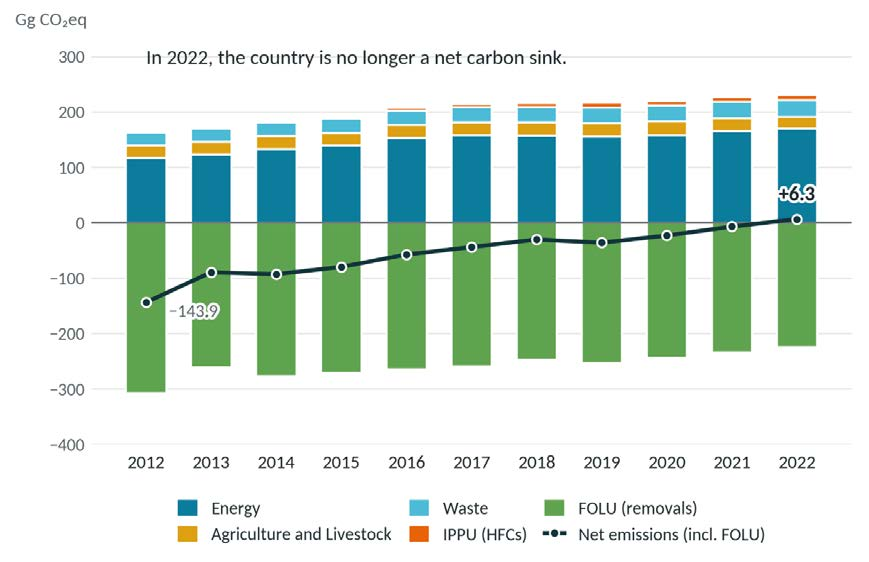
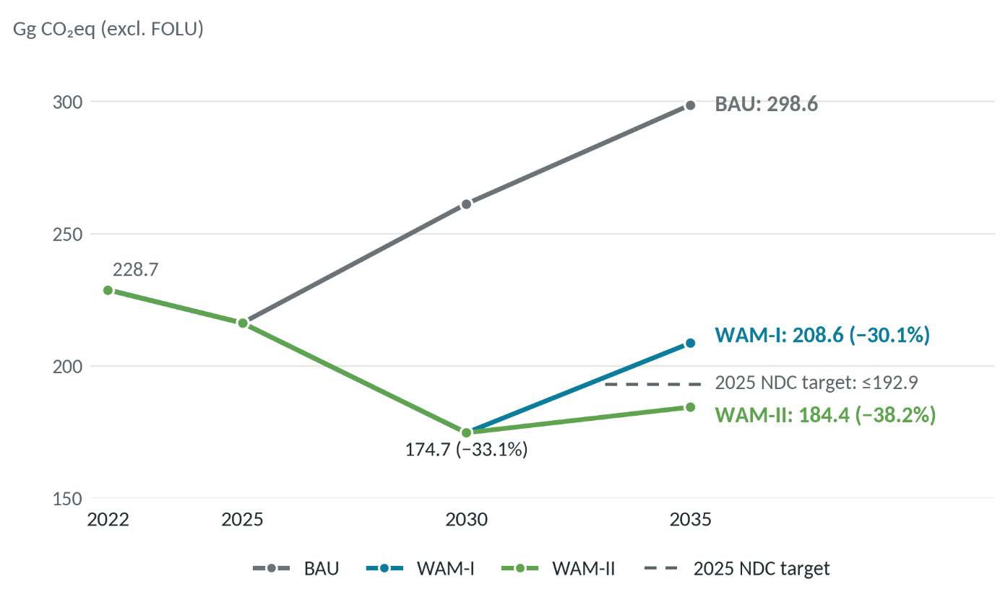
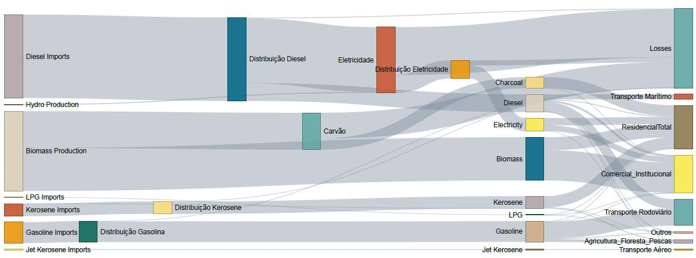
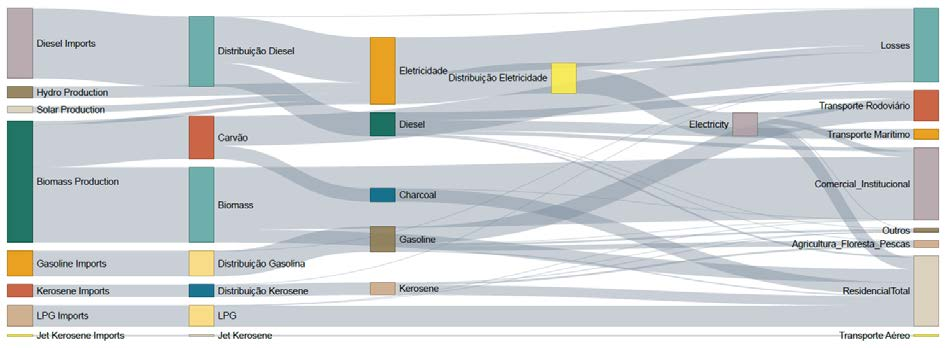
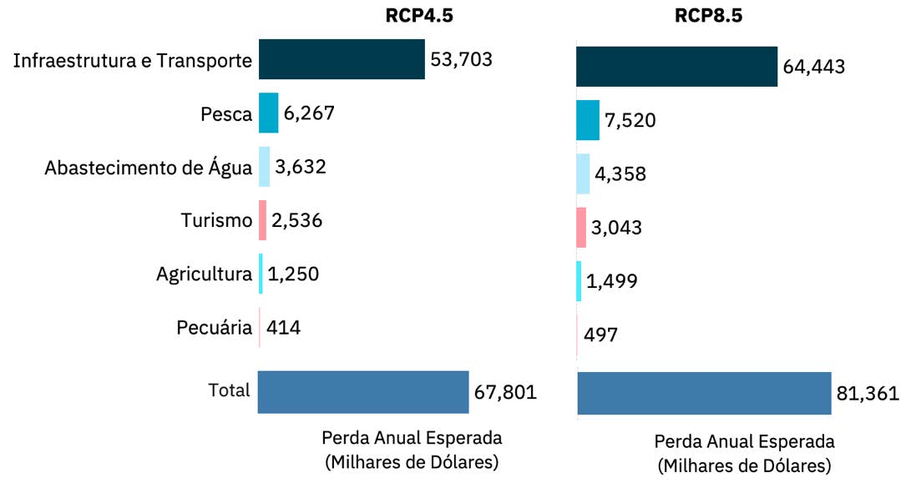
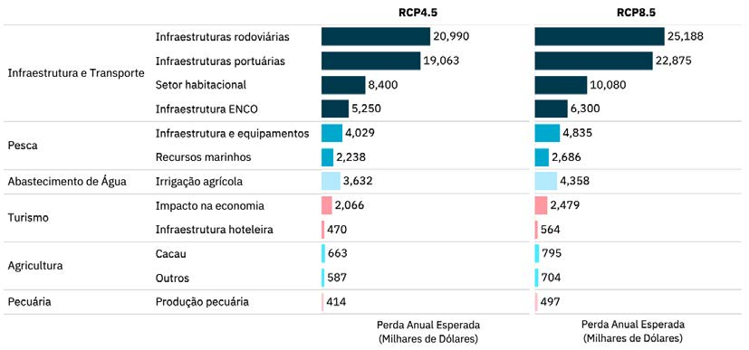
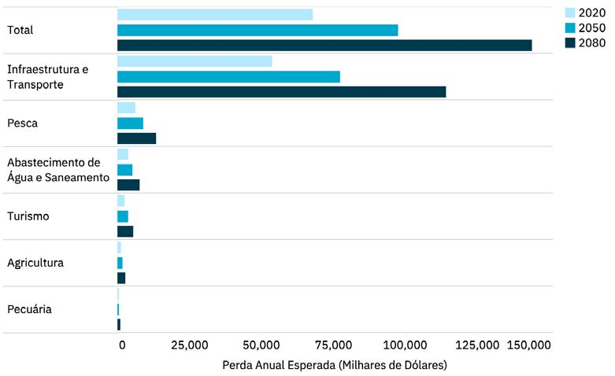

São Tomé and Príncipe is at a decisive moment in its climate and environmental trajectory. The update to our Nationally Determined Contribution - NDC 3.0 - represents more than just the fulfillment of a commitment made under the Paris Agreement; it constitutes a choice regarding the development model we wish to build for our country and for future generations. The fifth National Greenhouse Gas Inventory, published in April 2026, revealed a reality that demands a firm response. In 2022, for the first time since inventories have been available, removals from the forestry sector no longer offset national emissions, meaning that São Tomé and Príncipe is no longer a net carbon sink. In light of this change, the Government decided not to wait for the next reporting cycle and to update the NDC submitted in September 2025, aligning our ambition with the new national climate reality. The updated NDC 3.0 translates this responsibility into concrete commitments. With a reference scenario recalculated based on the new inventory and a contribution that now covers the five sectors identified by the Intergovernmental Panel on Climate Change (IPCC), we have set a target to reduce emissions by 38.2% by 2035, compared to the baseline scenario, to increase the share of renewable energy from the current 5.3% to more than half of the electricity produced, and to regain the status of a net carbon sink by 2030-2035. At the same time, we have significantly strengthened adaptation efforts, doubling the number of measures compared to NDC 2.0, because climate change is already affecting our communities, natural resources, infrastructure, and various sectors of our economy. This ambition takes on even greater significance in a country whose natural wealth is one of its main assets. Today, the entire territory of São Tomé and Príncipe is recognized as part of the Biosphere Reserves network, which represents exceptional international recognition but also an increased responsibility. Our forests, mangroves, water resources, coastal and marine ecosystems, and the unique biodiversity of our islands are fundamental to our climate resilience. Restoring the carbon sequestration capacity of our forests, conserving ecosystems, and sustainably using natural resources are, therefore, objectives that link the NDC to the preservation of this heritage and the development of the communities that depend on it. It is also within this relationship between conservation and development that we wish to position sustainable tourism. Nature, biodiversity, the landscape, the sea, culture, and communities are fundamental elements of São Tomé and Príncipe’s identity and appeal. The growth of tourism should help protect, not compromise, these assets. We aim to promote a sector that is progressively more efficient in its use of energy and water, with greater reliance on renewable energy, reduced waste generation, and greater value placed on local products, services, and knowledge. In this way, tourism can simultaneously contribute to job and income creation, biodiversity conservation, and a greener, more inclusive, and resilient economy.
But no transformation of this magnitude will be sustainable if it does not involve those who will live the longest with the decisions we make today. Young people therefore occupy a central place in this NDC. Seven outreach and consultation sessions, held in all districts and in the Autonomous Region of Príncipe, involved 265 young people, allowing them to better understand the country’s climate commitments and, above all, allowing us to hear their voices. From their reflections on energy, forests, agriculture, water, waste, health, and innovation emerged challenges, ideas, and solutions rooted in their own local realities. We want this participation to continue throughout the implementation and monitoring of the NDC, transforming young people from beneficiaries of public policies into agents of climate action, innovation, and solutions for sustainable development. This NDC is, therefore, both a climate and a development agenda. It means producing energy more cleanly, protecting forests and the ocean, improving water and waste management, making agriculture more resilient, safeguarding public health, creating green jobs, stimulating innovation, and building communities better prepared to face the impacts of climate change. São Tomé and Príncipe accounts for a minimal share of global emissions, yet it ranks among the countries particularly vulnerable to the effects of climate change. Despite this, we have chosen to shoulder our share of the global effort with responsibility and ambition. The full implementation of NDC 3.0, estimated at $886 million by 2035, will require the mobilization of resources that exceed national capacities. International climate finance, technology transfer, and the strengthening of national capacities will therefore be indispensable, in accordance with the principle of common but differentiated responsibilities enshrined in the Paris Agreement.
This ambition is also the result of a collective effort. The Government of São Tomé and Príncipe acknowledges and appreciates the support of its development partners, in particular UNDP, UNICEF, UNFPA, and the Office of the United Nations Resident Coordinator, for their technical and financial support and for their contribution to strengthening national capacities and fostering a more inclusive process. We also express our gratitude to the NDC Partnership for its strategic coordination and support in aligning our climate ambition with national sustainable development priorities.
Implementation will now be the true test of our ambition. To the people of São Tomé and Príncipe, and particularly to our youth, I reaffirm that the commitments made here must translate into concrete actions, carried out with rigor, transparency, and public participation.
The updated NDC 3.0 is, above all, a commitment to the future of São Tomé and Príncipe: to protect what makes our islands unique, to transform climate challenges into opportunities for development, and to ensure that future generations inherit a more resilient and sustainable country with better opportunities. It is with this sense of responsibility, but also with confidence in the capabilities of our people and in cooperation with our partners, that São Tomé and Príncipe presents its updated Nationally Determined Contribution to the international community. Minister of the Environment, Youth, and Sustainable Tourism Democratic Republic of São Tomé and Príncipe
Nilda Borges da Mata
|
Acronym |
Full Name — Portuguese |
Full Name — English |
|
AELS (ACRE) |
Acesso a Electricidade Limpa e Sustentavel (Projecto) |
Access to Clean, Resilient Electricity (Project) |
|
AFOLU |
Agricultura, Florestas e Outros Usos do Solo |
Agriculture, Forestry, and Other Land Use |
|
AGER |
Autoridade Geral de Regulacao |
General Regulatory Authority |
|
BAU |
Cenario de Referéncia |
Business As Usual |
|
BTR |
Relatdrio Bienal de Transparéncia |
Biennial Transparency Report |
|
BUR |
Relatdrio Bienal de Actualizacao |
Biennial Update Report |
|
CCMA (MACC) |
Curva de Custo Marginal de Abatimento |
Marginal Abatement Cost Curve |
|
ECOWAS |
Comunidade Econémica dos Estados da Africa Ocidental |
Economic Community of West African States |
|
CH₄ |
Metano |
Methane |
|
CIAT |
Centro de Investigagao Agronomica e Tecnolégica |
Center for Agronomic and Technological Research |
|
CMIP6 |
Projecto de Intercomparacao de Modelos Acoplados - Fase 6 |
Coupled Model Intercomparison Project - Phase 6 |
|
CN (NC) |
Comunicacao Nacional |
National Communication |
|
CNMC (NCCC) |
Comité Nacional para as Mudangas Climaticas |
National Committee for Climate Change |
|
CO₂ |
Didxido de Carbono |
Carbon Dioxide |
|
CO₂eq |
Didxido de Carbono Equivalente |
Carbon Dioxide Equivalent |
|
CONPREC |
Conselho Nacional de Preparacdo e Resposta 3s Catdstrofes |
National Council for Disaster Preparedness and Response |
|
UNFCCC |
Convencgao-Quadro das Nacoées Unidas sobre a Mudanga do Clima |
United Nations Framework Convention on Climate Change |
|
DAAC |
Direccao do Ambiente e Accdo Climatica |
Directorate for the Environment and Climate Action |
|
DADR |
Direccao de Agricultura e Desenvolvimento Rural |
Directorate for Agriculture and Rural Development |
|
DCI |
Direccao de Comercio e Industria |
Directorate for Trade and Industry |
|
DCP |
Dispositivo de Concentracao de Pescado |
Fish Aggregating Device |
|
DCS-STP |
Dimensionamento de Cobertura Solar em Sao Tomé e Príncipe |
Solar Coverage Sizing in São Tomé and Príncipe |
|
DFB |
Direccdo das Florestas e da Biodiversidade |
Directorate of Forests and Biodiversity |
|
DGRNE |
Direccdao Geral de Recursos Naturais e Energia |
Directorate-General for Natural Resources and Energy |
|
DRACN |
Direccao Regional do Ambiente e Conservac¢ao da Natureza |
Regional Directorate for the Environment and Nature Conservation |
|
EMAE |
Empresa de Agua e Electricidade de São Tomé e Príncipe |
São Tomé and Príncipe Water and Electricity Company |
|
ENRRD (NSDRR) |
Estratégia Nacional de Reducao de Risco de Desastres |
National Strategy for Disaster Risk Reduction |
|
WWTP (ETAR) |
Estacdo de Tratamento de Aguas Residuais |
Wastewater Treatment Plant |
|
FAO |
Organizacao das Nacodes Unidas para a Alimentagdo e Agricultura |
Food and Agriculture Organization of the United Nations |
|
FCA-STP |
Fundo Climatico e Ambiental de São Tomé e Príncipe |
Climate and Environmental Fund of São Tomé and Príncipe |
|
FiTI |
Iniciativa para a Transparéncia nas Pescas |
Fisheries Transparency Initiative |
|
FOLU |
Floresta e Outros Usos do Solo |
Forestry and Other Land Use |
|
GCF (Green Climate Fund) |
Fundo Verde para o Clima |
Green Climate Fund |
|
GACMO |
Modelo de custo de reducao de gases de efeito estufa |
Greenhouse Gas Abatement Cost Model |
|
GHG |
Gases com Efeito de Estufa |
Greenhouse Gases |
|
GEF |
Fundo Mundial para o Ambiente |
Global Environment Facility |
|
Gg |
Gigagrama |
Gigagram |
|
GGA |
Objectivo Global de Adaptac¢ao |
Global Goal on Adaptation |
|
GIBH (IRBM) |
Gestao Integrada de Bacias Hidrograficas |
Integrated River Basin Management |
|
QA/QC |
Garantia de Qualidade / Controle de Qualidade |
Quality Assurance / Quality Control |
|
GST |
Balanco Global |
Global Stock Take |
|
WG |
Grupo de Trabalho |
Working Group |
|
H&OT (H&SP) |
Habitacado e Ordenamento do Territ6rio |
Housing and Spatial Planning |
|
HFCs (HFCs) |
Hidrofluorcarbonetos |
Hydrofluorocarbons |
|
ICTU |
Informagoes necessarias para Clareza, Transparéncia e Compreensao |
Information Necessary for Clarity, Transparency, and Understanding |
|
IGEE (GHGI) |
Inventario de Gases com Efeito de Estufa |
Greenhouse Gas Inventory |
|
IJ |
Instituto da Juventude |
Youth Institute |
|
INA |
Instituto Nacional da Agua |
National Institute of Water |
|
INDC-STP |
Intencao da Contribuigao Nacionalmente Determinada - STP (2015) |
Intention Nationally Determined Contribution
|
|
INFF |
Quadro Nacional Integrado de Financiamento |
Integrated National Financing Frameworks |
|
INM |
Instituto Nacional de Meteorologia |
National Institute of Meteorology |
|
INPG |
Instituto Nacional de Promocgao de Género |
National Institute for Gender Promotion |
|
IPCC |
Painel Intergovernamental sobre Mudancas Climaticas |
Intergovernmental Panel on Climate Change |
|
IPP |
Produtor Independente de Energia |
Independent Power Producer |
|
kt |
Quilotonelada |
Kiloton |
|
kW / MW |
Quilowatt / Megawatt |
Kilowatt / Megawatt |
|
LED |
Diodo Emissor de Luz |
Light-Emitting Diode |
|
LT-LEDS |
Estrategia de Longo Termo de Desenvolvimento com Baixas Emissées |
Long-Term Low-Emissions Development Strategies |
|
LULUCF |
Uso do Solo, Mudangas do Uso do Solo e plerectact |
Land Use, Land-Use Change, and Forestry |
|
MAJTS |
Ministerio do Ambiente, Juventude e Turismo Sustentavel |
Ministry of Environment, Youth, and Sustainable Tourism |
|
MIRN |
Ministério das Infra-estruturas Recursos Naturais |
Ministry of Infrastructure and Natural Resources |
|
MRV |
Monitoriza¢ao, Relatorios e Verificagao - Sistema Nacional de Transparéncia para as Mudangas Climaticas |
Monitoring, Reporting, and Verification - National Transparency System for Climate Change |
|
N₂O |
Oxido Nitroso |
Nitrous Oxide |
|
NAP |
Plano Nacional de Adaptacao |
National Adaptation Plan |
|
NAPA |
Plano Nacional de Adaptacao e Accao |
National Adaptation and Action Plan |
|
NDC-STP |
Contribuigdes Nacionalmente Determinadas - São Tomé e Príncipe |
Nationally Determined Contributions - Sao Tomé and Príncipe |
|
NDC2.0-STP |
Contribuicoes Nacionalmente Determinadas - STP Actualizada (2021) |
Nationally Determined Contributions - STP Updated (2021) |
|
NDC3.0-STP |
Contribuicoes Nacionalmente Determinadas - STP (2025) |
Nationally Determined Contributions - STP (2025) |
|
Updated NDC3.0- STP |
Contribuicédes Nacionalmente Determinadas - STP Actualizada (2026) |
Nationally Determined Contributions - STP Updated (2026) |
|
OECD |
Organizacao paraa Cooperacao e Desenvolvimento Econémico |
Organization for Economic Co-operation and Development |
|
ILO |
Organizacao Internacional do Trabalho |
International Labour Organization |
|
PADRSE |
Plano de Accao para a Descarbonizacdao e Resiliéncia do Sector Energético |
Action Plan for Decarbonization and Resilience of the Energy Sector |
|
PAEV |
Plano de Aceleracao da Energia Verde |
Green Energy Acceleration Plan |
|
PANEE |
Plano de Accao Nacional de Eficiéncia Energética |
National Energy Efficiency Action Plan |
|
PANER |
Plano de Accao Nacional de Energias Renovaveis |
National Renewable Energy Action Plan |
|
SIDS |
Pequenos Estados Insulares em Desenvolvimento |
Small Island Developing States |
|
PGIR |
Plano de Gestdao Integrad de Residuos |
Integrated Waste Management Plan |
|
GDP |
Produto Interno Bruto |
Gross Domestic Product |
|
PNAECLM |
Plano Nacional de Accdo e Estratégia de Cozinha Limpa e Moderna |
National Action Plan and Strategy for Clean and Modern Cooking |
|
PNAS |
Plano Nacional de Adaptacdao da Saude as Mudangas Climaticas |
National Health Adaptation Plan to Climate Change |
|
PNGIRSU |
Plano Nacional de Gestdo Integrada de Residuos Sdlidos |
National Plan for Integrated Solid Waste Management |
|
PNOT |
Plano Nacional de Ordenamento do Territorio |
National Land Use Plan |
|
PNRFP |
Plano Nacional de Restauracao Florestal e Paisagistica |
National Plan for Forest and Landscape Restoration |
|
PNSA |
Estratégia Nacional e Plano de Accdo para o Saneamento Ambiental |
National Strategy and Action Plan for Environmental Sanitation |
|
UNDP |
Programa das Nacgodes Unidas para o Desenvolvimento |
United Nations Development Programme |
|
POOC |
Planos de Ordenamento da Orla Costeira |
Coastal Zone Management Plans |
|
PPP |
Parceria Publico-Privada |
Public—Private Partnership |
|
PRSE (PSRP) |
Programa de Recuperacao do Sector Eléctrico |
Power Sector Recovery Program |
|
PV |
Fotovoltaico |
Photovoltaic |
|
QTR (ETF) |
Quadro de Transparéncia Reforcada - Sistema Nacional de Transparéncia para as Mudangas Climaticas |
Enhanced Transparency Framework - National Transparency System for Climate Change |
|
RAP |
Regiao Autonoma do Príncipe |
Autonomous Region of Príncipe |
|
REINA |
Rede Nacional de Incubadoras e Aceleradoras de Negécio |
National Network of Business Incubators and Accelerators |
|
Rio Markers |
Marcadores de Objetivos Ambientais da OCDE |
OECD Rio Markers |
|
RNEC |
Roteiro Nacional da Economia de Combustivel |
National Fuel Economy Roadmap |
|
RNME |
Roteiro Nacional da Mobilidade Eléctrica |
National Roadmap for Electric Mobility |
|
RRD (DRR) |
Reducao de Riscos de Desastres |
Disaster Risk Reduction |
|
MSW |
Residuos Sdlidos Urbanos |
Municipal Solid Waste |
|
SADD |
Sistema de Arquivo Dados e Documentacao |
Data and Documentation Archiving System |
|
SAP (EWS) |
Sistema de Alerta Precoce |
Early Warning System |
|
SN-MRV (NS-MRV) |
Sistema Nacional - Medicado, Reporte e Verificacao |
National System - Measurement, Reporting, and Verification |
|
SNPCB |
Servigo Nacional de Protecc¢ao Civil e Bombeiros |
National Civil Protection and Fire Service |
|
SNR |
Servico Nacional de Residuos |
National Waste Service |
|
SNT |
Sistema Nacional de Transparéncia |
National Transparency System |
|
STP |
São Tomé e Príncipe |
São Tomé and Príncipe |
|
TMB (MBT) |
Tratamento Mecanico-Bioldgico |
Mechanical-Biological Treatment |
|
UNICEF |
Fundo das Nacodes Unidas para a Infancia |
United Nations International Children's Emergency Fund |
|
USD |
Dolar dos Estados Unidos da América |
United States Dollar |
|
GBV |
Violéncia Baseada no Género |
Gender-based violence |
|
VE |
Veiculo Eléctrico |
Electric Vehicle |
|
WACA |
Programa de Gestao das Zonas Costeiras da Africa Ocidental |
West Africa Coastal Areas Management Program |
|
WAM-I |
Cenario Com Medidas Adicionais | |
Scenario With Additional Measures | |
|
WAM-II |
Cenario Com Medidas Adicionais II |
Scenario With Additional Measures II |
|
WASH |
Agua, Saneamento e Higiene |
Water, Sanitation, and Hygiene |
|
WCRP |
Programa Mundial de Pesquisa Climatica |
World Climate Research Program |
The Democratic Republic of São Tomé and Príncipe submits its updated Nationally Determined Contribution (NDC 3.0 Updated), in accordance with Article 4 of the Paris Agreement and the relevant decisions of the Conference of the Parties, in particular Decision 4/CMA.1, regarding the information necessary for clarity, transparency, and understanding (ICTU), and the results of the first Global Stocktake (Decision 1/CMA.5).
The country has consistently fulfilled its commitments under the UNFCCC: it submitted its INDC in 2015, its NDC 2.0 in May 2021, and its NDC 3.0 on September 30, 2025. It has also submitted three National Communications (2005, 2012, and 2019) and the first Biennial Update Report (2022); the 4th National Communication is in its final stages, and the first Biennial Transparency Report is currently being prepared.
This update, prepared less than a year after the submission of NDC 3.0, is based on the fifth National Greenhouse Gas Inventory (V IGEE 2022), whose results substantially alter the understanding of the national climate situation. The inventory revealed that, in 2022, and for the first time since the first national inventory, removals from the forestry sector no longer offset emissions from other sectors: São Tomé and Príncipe lost its historic status as a net carbon sink. This fact, combined with the baseline revision imposed by the new base year of 2022 (the reference scenario for gross emissions in 2035, excluding FOLU, drops from 391.4 to 298.6 Gg CO2eq), required a response that the September 2025 NDC, which was limited to the energy sector for mitigation, could not provide: the full integration of the forestry sector and the expansion of the contribution to the five IPCC sectors, including, for the first time, Industrial Processes and Product Use.
The update also benefits from the new climate, risk, and vulnerability scenarios developed as part of the National Adaptation Plan process, with a time horizon extending to 2070, and was based on a broad participatory process: sectoral consultation sessions in January 2026, a call for input from more than 30 entities to validate the measures and designate focal points, and seven youth consultation sessions in the districts and the Autonomous Region of Príncipe, with 265 participants.
The process also benefited from youth mobilization initiatives and district youth committees for climate action created and supported by UNICEF and UNDP, helping to strengthen meaningful youth participation in the development of the NDC across all districts and in the Autonomous Region of Príncipe.
To conclude this cycle and fulfill the formal requirements, an institutional and political validation of São Tomé and Príncipe’s commitments under the global climate agenda and the United Nations Framework Convention on Climate Change was conducted.
The country reaffirmed its commitment, raising its ambition in line with the responsibilities it has assumed over the past decades. These are Herculean challenges, and what is required is not to lower ambition but to broaden the mitigation and adaptation goals and horizons of the Updated NDC 3.0, as an essential tool, with identified and quantified needs, structured and prioritized mitigation and adaptation proposals, as well as means and indicators for monitoring, tracking, and reporting.
With this update, São Tomé and Príncipe commits to reducing greenhouse gas emissions by 38.2% compared to the baseline scenario by 2035, excluding the FOLU sector, and to regaining and maintaining its status as a net carbon sink by 2030-2035, thereby reversing the trajectory revealed by the inventory. The share of renewable energy in electricity generation will exceed 50% by 2035, up from 5.3% in 2022. The adaptation contribution doubles the number of measures compared to NDC 2.0, with 40 measures across twelve sectors. The total identified investment is 886.01 million USD by 2035, entirely contingent on the mobilization of international climate finance, technology transfer, and capacity building, consistent with the country’s circumstances of insularity, scale, and fiscal space.
The document is organized into four main chapters: National Circumstances; Mitigation; Adaptation and Loss and Damage; and Integration of Cross-Cutting Issues, supplemented by the Implementation Modalities and MRV, as well as a set of annexes that includes the ICTU table and details of mitigation and adaptation measures, with targets and costs.
The update to NDC 3.0 reinforces São Tomé and Príncipe’s commitment to the collective effort to combat and adapt to climate change; faced with the loss of its status as a carbon sink, the country has chosen to respond with greater ambition.
The Democratic Republic of São Tomé and Príncipe is a small island developing state (SIDS) located in the Gulf of Guinea, off the west coast of Africa, near Gabon, Equatorial Guinea, Cameroon, and Nigeria. The country consists of two main islands, São Tomé and Príncipe, as well as smaller islets: Rolas, Cabras, Bombom, Caroco (Boné de Joker), Tinhosa Grande, and Tinhosa Pequena. The country’s total area is 1,001 km², of which 859 km² corresponds to São Tomé Island and 142 km² to Príncipe Island, with a distance of about 160 km between them. Both islands are of volcanic origin and are part of an eruptive chain that stretches across the Gulf of Guinea, from the Cameroon Mountains to Saint Helena. The island of São Tomé is situated on an oceanic plate, at a depth of about 3,000 meters. These volcanic characteristics directly influence the topography and soil composition of the islands, resulting in highly distinctive local vegetation and biodiversity, adapted to the archipelago’s environmental conditions. The territory is home to diverse ecosystems, such as cloud forests, high-altitude forests, and dry forests, which may be native (Ob6) or secondary forests, as well as shade forests, savannas, and mangroves. The fauna, especially the birds found on the island, is exceptionally diverse, harboring a considerable number of endemic species. The climate of São Tomé and Príncipe ranges from humid tropical to humid equatorial, featuring different microclimatic zones and marked by two main seasons: a rainy season, which lasts about nine months, from September to May, with frequent rainfall; and a shorter dry season, known as Gravana, which occurs from June to August, with milder temperatures. The small temperature range between the hottest and coldest months classifies the country as having a humid equatorial climate; however, the existence of two main seasons also classifies it as having a humid tropical climate. With Príncipe designated as a UNESCO World Biosphere Reserve in 2012 and São Tomé in 2025, the country became the first in the world whose entire territory is designated as a Biosphere Reserve, a recognition of the global importance of São Tomé and Príncipe as a guardian of exceptional island endemism, intact tropical forests, and blue carbon ecosystems whose conservation benefits extend far
beyond its shores1 e The General Population and Housing Census — 20242 reports 53,535 households and 209,161 residents within the national territory (3.9 people per household) for the year 2024. For the base year of the Updated NDC 3.0, 2022, by uniformly redistributing population growth between the two census dates, 2012 and 2024, the population of São Tomé and Príncipe in 2022 is estimated at 204,115.
The population is unevenly distributed across the territory, with an average density of 209 inhabitants per km² The district of Agua-Grande, the country’s capital, has the highest population density at 4,888 inhabitants per km², while the district of Caué, which covers the largest land area, has only 28 inhabitants per km². It should be noted that over the past 40 years, the average annual growth rate slowed from 2.0% (1981) t , and then to 1.34% (2024), and urbanization has intensified: the urban population rose from 54.5% (2001) to 67.2% (2024), reflecting the concentration of services and Opportunities in urban areas and placing greater pressure on energy demand, mobility, and infrastructure.
São Tomé and Príncipe is a small, lower-middle-income, insular, and remote economy with a narrow productive base and high costs of scale and logistics. The economic structure is dominated by services, followed by agriculture, forestry, and fisheries, and a small-scale industrial sector. The business environment is constrained by fragile infrastructure, expensive and unreliable electricity, limited connectivity, and high exposure to external shocks and climate risks. The GDP figures used in the BAU projections are based on publications by the International Monetary Fund (IMF) - World Economic Outlook, April 2025. STP’s GDP growth was very low in 2022 (0.2%) and 2023 (0.4%), amid a slow post-pandemic recovery. IMF projections point to an acceleration starting in 2025 (3.1%), stabilizing at around 3.5% per year from 2028 onward, driven by agricultural exports, infrastructure investment, tourism, and reforms in the energy sector. Despite a GDP per capita of USD 4,084.4 in 20253 , social vulnerabilities persist, as there have been no significant changes in household incomes. In 2024, 13% of the population lived below the international poverty line (USD 3 per day in 2021 terms, at purchasing power parity), and inequality remains high
(Gini ~40.7)4 e On the public finance side, fiscal space is limited, and the historical dependence on external aid has been declining, requiring fiscal consolidation and greater mobilization of private investment. In recent years, São Tomé and Príncipe has made significant progress in terms of social development. As a result, the country’s Human Development Index (HDI) rose from 0.535 to 0.637 between 2005 and 2023, representing a 19.1% increase, placing the country in the medium human development
category5 e This context defines the development priorities: reducing poverty and creating decent jobs, ensuring reliable and affordable energy, strengthening climate resilience, and stabilizing public finances.
NDC 3.0 aligns with these priorities by accelerating the deployment of renewables and energy storage (to reduce costs and dependence on imported fuels), implementing energy efficiency and loss reduction measures (freeing up capacity and lowering energy bills), and promoting social inclusion (LEDs, clean stoves, self-consumption, and the electrification of public services with a focus on vulnerable households). Thus, the proposed climate action is not separate from development: it is a means to boost competitiveness, protect household incomes, and make growth more resilient and sustainable, in line with the ENDS 2026-2040.
São Tomé and Príncipe is highly vulnerable to climate change due to the fragility of its island ecosystems, its low level of socioeconomic development, and its limited capacity to adapt to the direct and indirect impacts of extreme weather events. In fact, evidence of climate impacts is mounting in São Tomé and Príncipe: heavy rainfall with flash floods, storms with strong winds, riverbank overflows, and coastal erosion, an example of this was the state of emergency declared in December 2021 following severe floods that damaged infrastructure and disrupted the normal functioning of socioeconomic activities. There is also gradual warming and greater irregularity and seasonality in rainfall, with effects on water resources, agriculture, infrastructure, and urban services. Climate models indicate that average temperatures have risen by
0.2 to 0.4°C in recent decades'6 e The CMIP6 projections7 point to continued warming throughout the century and greater variability in precipitation, increasing the likelihood of extreme events. By mid-century, average temperatures are projected to rise by 0.8 to 1.1°C, and could exceed 3°C by the end of the century under high-emission scenarios; this includes an increase in the frequency and duration of heat waves. Sea-level rise exacerbates the risk in low-lying coastal areas and critical infrastructure. World Bank estimates indicate expected annual losses from flooding of 1.9% of GDP in 2020, 2.8% in 2050, and
4.1% in 2080 if no adaptation measures are taken8 . Given this situation, inaction is not an option: the costs of repairing damage and losses will far exceed investments in early adaptation. Investing in urban drainage, resilient agricultural practices, sustainable water management, coastal protection, and early warning systems is not only an environmental necessity but also a strategic opportunity to protect lives, reduce vulnerabilities, sustain peace, and strengthen security, including food security, and support the sustainable and resilient development of São Tomé and Príncipe. By alleviating pressure on natural resources and livelihoods, these investments can also reduce reliance on illicit or informal activities and strengthen social cohesion and stability.
The Organizational Structure of the 19th Constitutional Government9 of São Tomé and Príncipe, dated January 14, 2025, consists of the Prime Minister and Head of Government, as well as Ministers of State and Ministers; the collegial bodies of the Government are the Council of Ministers and the Interministerial Meetings. Thus, the Government consists of ten ministries, including the Ministry responsible for Climate Action, the Ministry of the Environment, Youth, and Sustainable Tourism (MAJTS). This ministry is the government department whose mission is to propose, formulate, lead, implement, and evaluate government policy in the areas of the environment and the sustainable use of natural resources, youth, and tourism. In the 19th Government, the MAJTS coordinates the following agencies and entities: cQ Directorate-General for Tourism and Hospitality (DGTH); Directorate of Environment and Climate Action (DAAC); JQ 3) Directorate of Forests and Biodiversity (DFB); dQ Directorate of Oceans (DdO); NQ National Waste Service (SNR) ; KQ Office of Environmental Economics and International Agreements (GEAAI); aQ Ob6o de São Tomé Natural Park Directorate. The MAJTS also oversees the Youth Institute (IJ) and monitors the operations of the National Youth Council (CN4J). The Directorate of Environment and Climate Action is the sectoral body in São Tomé and Príncipe responsible for the formulation, implementation, coordination, and oversight of public policies on the environment and climate action. It works to conserve biodiversity, manage waste, ensure environmental sanitation, combat plastic pollution, promote environmental quality, and implement measures to adapt to and mitigate climate change. Main areas of action and focus: Environmental Management: Combating plastic pollution, waste management, and ecosystem protection (biodiversity); Climate Action: Promoting adaptation and mitigation measures in response to extreme weather events and climate change; Awareness and Education: Public campaigns to raise environmental awareness and ongoing capacity-building initiatives; Enforcement: Strengthening national capacity through environmental inspectors to ensure compliance with legislation;
Commitment and Sustainability: Compliance with and response to the treaties and conventions to which São Tomé and Príncipe has acceded in the areas of the environment and the global climate agenda; and Partnerships: Establishing and strengthening domestic, regional, and _ international partnerships with private partners, civil society organizations, and neighboring countries, including African nations, Portuguese-speaking countries, small island states, and others, to promote synergies, the sharing of experiences and knowledge, as well as with partners and multilateral donors supporting National Climate Action.
São Tomé and Príncipe’s accession to the NDC Partnership (NDC Partnership), which conducted its first mission in 2017 and led to the subsequent development of the NDC-STP Implementation Plan, a process that involved numerous development partners and nearly the entire São Tomé and Príncipe government, is a good example of a process to engage climate stakeholders.
Furthermore, to address the harmful effects of climate change, Decree No. 13/2012 established the National Committee on Climate Change was established to ensure interministerial coordination of climate policy. It works in conjunction with the National Institute of Meteorology and sectoral ministries (energy, agriculture, public works, health, finance, education, and planning), ensuring policy integration and technical coherence.
To ensure disaster risk management, CONPREC was established by Decree-Law No. 17/2011. CONPREC is responsible for prevention, preparedness, and response to flash floods, storms, and coastal hazards, in line with the adaptation agenda.
In the electricity sector, the basic framework is the Legal Regime for the Organization of the Electricity Sector (Decree-Law No. 26/2014), with AGER serving as the regulator and EMAE as the integrated utility. To facilitate the integration of renewables and the contracting of independent producers, a special and transitional regime for the procurement of energy from renewable sources (Decree-Law No. 1/2020) is in effect. Energy and climate planning is implemented through the PANER (renewables) and the PANEE (efficiency), which set targets for renewable energy penetration, loss reduction, and energy efficiency improvements, and serve as the basis for the BAU and mitigation scenarios in this Updated NDC 3.0.
This NDC strengthens existing governance, consolidates coordination mechanisms, and _ aligns mitigation and adaptation objectives with the current legal and regulatory framework, ensuring, among other aspects, transparency, sectoral coherence, and implementation capacity.
Over the past five years, São Tomé and Príncipe has made measurable progress in planning and implementing the public policies necessary to transform its emissions profile. This progress includes the update of the NDC in 2021, the operationalization of the National Committee on Climate Change, and the consolidation of energy sector planning: the national action plans for renewable energy (PANER) and for energy efficiency (PANEE) were revised and integrated, along with the PAEV (green energy acceleration), the PNAECLM (clean and modern kitchens), and the RNME (electric mobility), into the Action Plan for the Decarbonization and Resilience of the Electricity Sector (PADRSE), the ENDS - the National Sustainable Development Strategy 2026-2040 - and the National Sustainable Energy Investment Plan (NSEIP), whose timeframe aligns with that of this NDC. This planning effort extends to the other sectors that contribute to national emissions or to their sequestration, ranging from sanitation and waste management to forest and landscape restoration, and from fisheries and aquaculture to national sustainable development, within a framework that is increasingly integrated at the national, regional, and sectoral levels. This mitigation contribution is based on the fifth National Greenhouse Gas Inventory (V IGEE 2022), completed in April 2026, which establishes 2022 as the new base year. With 2022 as the base year, the mitigation contribution is extended for the first time to the five IPCC sectors: Energy (including transportation), Industrial Processes and Product Use, Agriculture and Livestock, Forestry and Other Land Use, and Waste, with implementation monitoring ensured within the framework of enhanced transparency (ETF/MRV; see the chapter on Implementation Modalities).
The 2022 IGEE V, prepared by the national team under the coordination of the National Institute of Meteorology and the Directorate for the Environment and Climate Action, as part of the 4th National Communication, follows the 2006 IPCC Guidelines (Tier 1) and the SAR GWP-100 metrics (CO2=1; CH,4=21; N20=310), consistent with previous national inventories.
In 2022, gross national emissions totaled 230.42 Gg COzeq, the highest value in the series, with the energy sector accounting for about 74%, followed by waste (13%), agriculture and livestock (9%), and the IPPU (4%). Details by category, gas, and data source are provided in the 5th IGEE 2022.
|
Year Sector |
2012* |
2013 |
2014 |
2015 |
2016 |
2017 |
2018* |
2019 |
2020 |
2021 |
2022* |
|
Energy |
117.4 |
123.2 (+5%) |
132.8 (+8%) |
139.4 (+5%) |
153.3 (+10%) |
157.8 (+3%) |
157.1 (0%) |
155.7 (-1%) |
158.3 (+2%) |
165.5 (+5%) |
169.93 (+3%) |
|
IPPU (HFCs) |
0.44 |
1.28 (+191%) |
2.11 (+65%) |
3.21 (+52%) |
4.48 (+40%) |
5.74 (+28%) |
7.52 (+31%) |
8.43 (+12%) |
8.21 (-3%) |
8.41 (+2%) |
8.65 (+3%) |
|
Agricultu re and livestock |
21.97 |
22.42 (+2%) |
23.84 (+6%) |
22.82 (-4%) |
23.04 (+1%) |
23.80 (+3%) |
24.09 (+1%) |
24.28 (+1%) |
24.68 (+2%) |
22.95 (-7%) |
21.52 (-6%) |
|
Waste |
23.44 |
24.12 (+3%) |
24.88 (+3%) |
25.54 (+3%) |
26.22 (+3%) |
26.91 (+3%) |
27.61 (+3%) |
28.33 (+3%) |
28.97 (+2%) |
29.61 (+2%) |
30.32 (+2%) |
|
Total EMetiOne |
163.25 |
171.02 (+5%) |
183.63 (+7%) |
190.97 (+4%) |
207.04 (+8%) |
214.25 (+3%) |
216.32 (+1%) |
216.74 (0%) |
220.16 (+2%) |
226.47 (+3%) |
230.42 (+2%) |
|
FO LU (removals) |
-307.16 |
-260.69 (-15%) |
-276.62 (+6%) |
-271.01 (-2%) |
-264.61 (-2%) |
-258.45 (-2%) |
-246.81 (-5%) |
-253.03 (+3%) |
-243.47 (-4%) |
-233.79 (-4%) |
-224.08 (-4%) |
|
N5J (GgCo.4) |
-143.91 |
-89.67 |
-92.99 |
-80.04 |
-57.57 |
-44.20 |
-30.49 |
-36.29 |
-23.31 |
-7.32 |
6.34 |
Source: V IGEE 2022, April 2026 | * IGEE years (3rd CN_ 2012, 1st BUR_2018, and 4th CN_2022)
Note: The value of +6.34 Gg CO2eq refers to the net balance of the V IGEE 2022. The modeling for this NDC uses an adjusted value of +4.58 Gg CO2eq for the base year, for the reasons detailed in the following section.

The 2012-2022 time series, recalculated in the V IGEE using more reliable data collection methodologies, including satellite and drone data for the forestry sector, reveals three structural trends.
First, the continuous growth in gross emissions (+41% over ten years), led by the energy sector (+45%, driven by diesel-fired thermoelectric generation and road transportation) and, in relative terms, by the IPPU, whose emissions, entirely associated with imports of hydrofluorocarbons (HFCs) for refrigeration and air conditioning, increased nearly twentyfold, from 0.44 to 8.65 Gg CO2eq, in line with the expansion of the tertiary and tourism sectors. Although it accounts for only 4% of national emissions, this trend justifies the introduction, for the first time, of mitigation measures specifically targeting the sector in this NDC.
Second, the relative stability of agriculture and livestock and the growth in waste in line with population trends (+29%).
Third, the progressive erosion of the LULUCF sector’s sequestration capacity (-27%, from -307.16 to -224.08 Gg CO2eq), resulting from the ongoing conversion of shade forest and secondary forest to agricultural use and settlements.
Within this trajectory, the rate of emissions growth slowed over the last five-year period, standing at 1.4% per year in 2018-2022, compared to 5.6% in the previous five-year period, reflecting initial domestic measures, such as the introduction of renewables and lighting efficiency, and external economic factors, including the COVID-19 pandemic. However, this slowdown was insufficient in the face of the simultaneous erosion of the sink: the two curves crossed in 2022.
|
Historic Milestone 2022: STP Ceases to Be a Net Sink |
|
In 2022, for the first time since the first national inventory (1998), São Tomé and Príncipe recorded positive net GHG emissions (+6.34 Gg CO2eq). This reversal stems from a combination of two structural factors: the continued growth in gross emissions, particularly in the energy sector (+45% since 2012), and the gradual reduction in the forest sector's sequestration capacity (-27% since 2012), driven by land-use conversion. This context underscores the urgency of implementing the mitigation and forest protection measures outlined in the Updated NDC 3.0. |
The Business-as-Usual (BAU) Scenario represents the GHG emissions trajectory that would result from the continuation of current policies, practices, and trends, without the implementation of new mitigation measures beyond those already in place.
In accordance with UNFCCC guidelines, the scenario adheres to the principles of transparency, consistency, comparability, completeness, and accuracy: all assumptions, data, and sources are documented (Annexes IV and V); the methodology is consistent with the V IGEE 2022 and with previous national communications; the results are expressed in Gg CO2eq (SAR GWP); and all relevant sectors and gases are covered, with sufficient detail to allow for independent replication of the calculations.
The projections combine three complementary approaches, selected based on the characteristics of each sector: a projection based on macroeconomic and demographic drivers (Energy, Transportation, and Waste); projections based on historical land-use trends identified in the 5th IGEE 2022 (AFOLU); and projections based on plans, incorporating facilities already in operation and completed projects. The starting point for the scenario is the emissions profile of the base year. The V IGEE 2022 remains the official national inventory; exclusively for modeling purposes, two adjustments were introduced, justified by the most recent information available: in Energy (+1.17 Gg CO2eq; +0.7%), the treatment of traditional charcoal production in the energy transformation sector; and in Waste (-2.90 Gg CO2eq; -9.6%), the demographic update based on the 2024 Census, the inclusion of the tourism subsector, and the correction of duplications. This results in total gross emissions of 228.68 Gg CO2eq in the base year (-1.4% compared to the inventory) and the adjusted net balance of +4.58 Gg CO2eq mentioned in the previous chapter.
Since the modeling was conducted in 2026, with 2022 as the base year, the trajectory was calibrated using actual data from the 2023-2025 period. Measures already implemented are incorporated into the BAU scenario starting in the year they took effect, without changing the base year.
The measures implemented with verifiable impact that were incorporated into the BAU scenario were:
The Santo Amaro photovoltaic power plant began operating after 2022, constituting the first solar Capacity in the national power grid. Installed capacity evolved in two phases: 0.5 MW starting in 2023 and 1.7 MW starting in 2025. Its integration results in an update to the electricity grid’s emission factor starting in 2024, reflecting the generation mix that combines hydroelectric and diesel-fired power with the new photovoltaic Capacity.
The program to replace approximately 300,000 incandescent light bulbs with LEDs results in a gradual reduction in residential electricity demand. Since the program has already been implemented, its verifiable effects are incorporated into the BAU scenario, reflecting residential consumption in light of the growth in the electricity access rate.
The electricity access rate rose from 78% in 2022 to 81.3% in 2023 and 84.1% in 2024, a verifiable acceleration resulting from the measures implemented to modernize and strengthen the transmission and distribution networks. Since this acceleration is an observed and verifiable reality, the recent growth rate (approximately 3 p.p./year) is incorporated into the BAU scenario starting in 2022, converging to approximately 100% by 2030, a timeframe that coincides with the STP government’s stated goal. The effect on BAU emissions is an increase in electricity demand met by existing generation (thermal + hydro + Santo Amaro PV). Treating these three measures as mitigation measures would constitute double counting: their effects, which are already verifiable, are part of the baseline. The mitigation scenario is reserved for the type of generation that meets the growing demand; if this demand is met by renewable sources rather than diesel, the difference in emissions is counted as mitigation.
This chapter presents the quantitative results of the BAU scenario projections for the period 2022- 2035, broken down by sector, along with an analysis of trends and the main explanatory factors. The projections are based on modeling using the LEAP model, sector-specific engineering calculations, as well as IPCC emission factors and national data, with documented assumptions, and incorporate measures already implemented after the base year, in accordance with the calibration of the 2022— 2026 baseline.
Table 2 presents the consolidated GHG emissions projections for the BAU scenario, expressed in Gg CO2eq (SAR GWP), for the years 2025, 2030, and 2035, using 2022 as the base year.
|
Sector |
2022 (Base) |
2025 |
2030 |
2035 |
Change 2022- 2035 |
|
Energy — Demand |
78.4 |
80.1 |
90.5 |
101.2 |
drs |
|
Energy — Production |
92.7 |
75.7 |
103.4 |
123.1 |
tts |
|
Energy Subtotal |
171.1 |
155.8 |
193.9 |
224.3 |
tfs |
|
IPPU (HFCs) |
8.64 |
9.17 |
10.13 |
11.18 |
drs |
|
Agriculture and Livestock (A) |
21.52 |
22.76 |
24.99 |
27.45 |
dos |
|
Waste (MSW) |
10.99 |
12.16 |
13.94 |
15.65 |
qds |
|
Wastewater (AR) |
16.43 |
16.32 |
18.19 |
20.05 |
dds |
|
Subtotal Waste (MSW+AR) |
27.42 |
28.48 |
32.14 |
35.70 |
tes |
|
TOTAL (excl. FOLU) |
228.7 |
216.2 |
261.2 |
298.6 |
tfs |
|
FOLU |
-224.1 |
-195.3 |
-155.4 |
-115.7 |
qrs |
|
TOTAL (incl. FOLU) |
QPR |
21.0 |
105.8 |
183.0 |
n.a. |
In the BAU scenario, STP shifts from being virtually neutral in 2022 (+4.59 Gg CO2eq) to becoming a significant net emitter in 2035 (+183 Gg CO2eq), as a result of two structural factors:
Growth in gross emissions (+71 Gg between 2022 and 2035, driven mainly by the energy sector); and
Progressive erosion of the sequestration capacity of FOLU (-108 Gg over the same period).
This scenario serves as the baseline against which the impact of mitigation scenarios is quantified.
Methodological note: Estimates for the FOLU sector involve significant uncertainty, particularly regarding the quantification of national consumption of firewood and charcoal. Nevertheless, the sector is fully included in this contribution, as it is fundamental to understanding the climate and territorial reality of São Tomé and Príncipe and to the integrity of the national GHG inventory. This limitation is acknowledged, and efforts to progressively improve information on the forestry sector will continue within the framework of future inventory and reporting cycles.
Energy. The energy sector is the largest emitter and the main driver of emissions growth in the BAU scenario: total emissions rise from 171.1 to 224.3 Gg CO2eq between 2022 and 2035 (+31%). In the transformation scenario, emissions from electricity generation fall from 92.7 to 75.7 Gg CO2eq by 2025 (-18.7%), a combined effect of the Santo Amaro photovoltaic plant coming online and the energy savings from the LED lighting program, but the acceleration of electrification and economic growth reverse the trend starting in 2026: diesel-fired power generation expands again to meet demand, causing transmission and distribution emissions to reach 103.4 Gg CO2eq in 2030 and 123.1 Gg COzeq in 2035. The share of renewables, after peaking at 9.4% in 2025, declines to 6.0% in 2035, and the average emission factor of the electricity system rises again, a trajectory that demonstrates that, without additional renewable capacity, universal access to electricity will be met through thermal power generation. On the demand side, emissions rise from 78.4 to 101.2 Gg COzeq (+29%): road transportation, the largest subsector, stagnates until 2025, in line with per capita GDP growth, and resumes growth with the economic acceleration, reaching 42.5 Gg CO2eq in 2035, while the remaining demand sectors evolve in line with GDP.
IPPU. Emissions from fluorinated gases (HFCs) used in refrigeration and air conditioning increase from 8.64 to 11.18 Gg CO2zeq (+29%), at a rate of 2% per year, in line with the expansion of the service and tourism sectors and the universalization of access to electricity by 2030, which, by enabling the widespread acquisition of refrigeration equipment, sustains demand for refrigerants throughout the entire projection period.
Agriculture and Livestock. The sector is projected to grow at specific rates by component, rising from 21.52 to 27.45 Gg COzeq (+28%). The main sources remain enteric fermentation and manure management in livestock farming, as well as direct and indirect N20 emissions from managed soils
associated with the application of nitrogen fertilizers, consistent with the relative stability shown by the historical data series for this sector.
Waste. Emissions increase from 27.42 to 35.70 Gg CO2zeq (+30%), driven primarily by population growth. Wastewater is the main source (16.43 Gg CO2eq in 2022, 60% of the sector), dominated by domestic effluents in decentralized systems with a strong anaerobic component; the gradual introduction of improved sanitation facilities during the 2025—2030 period, already provided for in the national sanitation program, partially mitigates, but does not reverse, this growth. In municipal solid waste (10.99 Gg CO2eq in 2022), landfill disposal, soil disposal, and open-air burning remain the dominant sources in the absence of controlled treatment infrastructure.
LULUCF. The sector’s removal capacity is progressively deteriorating, from -—224.10 Gg CO2eq in 2022 to -115.67 Gg COzeq in 2035 (-48%), due to the combined effect of logging, the consumption of firewood and charcoal, and the continued conversion of shade forest and secondary forest to agricultural use and settlements, at the average rate observed in the historical series. It is this erosion, rather than the growth in gross emissions, that drives the deterioration of the national net balance in the BAU scenario.
The complete annual time series by subsector, the electricity generation mix, and the activity assumptions for the BAU scenario are included in the Technical Support Report and the assumptions annex of this NDC (Table 24).
Based on the baseline presented in the previous section, two mitigation scenarios were modeled, both contingent on the mobilization of international support: the WAM-I scenario, which incorporates the measures prioritized and validated during the sectoral consultation sessions on January 15 and 26, 2026, and the WAM-II scenario, which adds to the previous measures those that are technically justified. The scenarios are defined in the following table; the measures comprising them are presented, by sector, in the following sections and in aggregate form in Annexes VI, VII, and VIII.
|
Scenario (excl. FOLU) |
Unit |
2025 |
2030 |
2035 |
|
BAU (calibrated baseline) |
Gg CO2eq |
216.2 |
261.2 |
298.6 |
|
WAN-I - projected emissions |
Gg CO2eq |
R |
174.7 |
208.6 |
|
WAM-I - reduction compared to BAU |
s |
R |
-33.1% |
-30.1% |
|
WAM-II - projected emissions |
Gg CO2eq |
R |
174.7 |
184.4 |
|
WAM-II - reduction compared to BAU |
s |
R |
-33.1% |
-38.2% |
|
2025 NDC 3.0 Target (-35.4%) |
Gg CO2eq |
R |
R |
192.9 |
|
NDC 2.0 (2021), by 2030: BAU / projected / reduction |
Gg CO2eq; % |
R |
400.0 / 291.0 / -27% |
R |
The WAM-I scenario achieves a 30.1% reduction by 2035, while the WAM-II scenario achieves 38.2%, exceeding the target reported for 2025 by 8.5 Gg CO2eq.
Based on the full potential of the WAM-II scenario, this update adopts as a conditional target a 38.2% reduction in GHG emissions by 2035, compared to the BAU scenario and excluding the FOLU sector, corresponding to an emissions level of 184.4 Gg CO2eq.
Considering the integrated balance with the FOLU sector, the country regains its status as a net sink in 2030 (-162.5 Gg CO2eq) and further deepens it in 2035 (-273.7 Gg CO2eq in WAM-I; -298.0 Gg CO2eq in WAM-II). This commitment is based on estimates for the FOLU sector, the uncertainty of which is acknowledged in the reference scenario section.

GHG emissions projections for the 2022—2035 period were developed using the LEAP (Long-range Energy Alternatives Planning System) model, supplemented by external sectoral modules for AFOLU and Waste, in line with the methodology adopted in the development of the Business-as-Usual (BAU) scenario. The modeling adopts the IGEE 2022 methodology (final version dated April 27, 2026), including the IPCC tiers selected by the inventory team for each key category, and is applied consistently to the projected activity data over the 2022—2035 horizon. The GWP values used are those from the IPCC SAR (CO2=1, CHa=21, N20=310). Table 3 presents the development scenarios considered.
|
Scenario |
Designation |
Description |
|
+DA |
Reference Scenario |
Policies and measures already implemented, equivalent to BAU witha calibrated baseline (2023-2025) |
|
WAM - | |
Prioritized Additional Measures |
Equivalent to the WM scenario plus measures prioritized during the January 2026 consultation sessions |
|
WAM - Il |
Complementary Additional Measures |
Equivalent to the WAM-I scenario plus complementary measures with technical justification, presented in January 2026 |
The following subsections provide a sector-by-sector summary of the mitigation scenarios considered, WAM-I (prioritized mitigation measures) and WAM-II (complementary mitigation measures), while the technical details are provided in Annex I (ICTU table).
The WAM-I scenario incorporates the set of prioritized mitigation measures validated during the consultation sessions held on January 15 and 26, 2026, with representatives and decision-makers from the main national emitting sectors. All measures are contingent upon the mobilization of external climate finance. The scenario covers the Energy, AFOLU, and Waste sectors; the IPPU sector (HFCs) is covered exclusively by the WAM-II scenario.
The scenario is modeled based on the BAU baseline, quantifying the additional mitigation effort resulting from the implementation of the prioritized measures.
The following Sankey diagram illustrates national energy flows in the base year of 2022, highlighting the heavy reliance on diesel imports for electricity generation and the significant role of biomass in the residential sector. This is the starting point from which the impact of the WAM-I scenario is assessed.

The energy sector accounts for the largest number of prioritized measures in WAM-I and has the greatest mitigation impact in absolute terms. The interventions are structured around three complementary pillars: expansion of renewable generation, improvement of energy efficiency, and transition to electric mobility.
Hydropower is the strongest pillar of the electricity system’s decarbonization in WAM-I, with four projects adding 14.61 MW of installed renewable capacity to the national grid.
The rehabilitation of the Guegué power plant (+0.32 MW) is the project with the most immediate implementation timeline, as it builds on existing infrastructure with restoration potential, contributing 3.0 TJ of annual renewable generation starting in 2030. The Bombaim (3.0 MW) and Claudino Faro (1.81 MW) power plants will also begin operations in 2030, contributing 28.4 TJ and 17.1 TJ, respectively, complementing the hydropower portfolio with smaller-scale projects that can be implemented more quickly. The Rio 16 Grande Plants 1 and 2, with capacities of 6.87 and 2.61 MW, respectively (9.48 MW combined), are the largest project in the WAM-I initiative in terms of individual scale and impact, with an annual generation of 89.7 TJ projected for 2035, given the complexity of their development.
Together, these four projects will progressively replace diesel-fired thermoelectric generation, the main driver of transformation emissions under the BAU scenario, enabling STP’s total hydropower production to reach 156.4 TJ/year by 2035, compared to the 18.2 TJ from the Contador plant under the BAU scenario.
|
ID |
Measure |
Capacity (MW) |
Inlet |
Generation (Ti/year) |
|
MM.ENE.01 |
Rehabilitation of the Guegué Hydroelectric Plant |
0.32 |
2030 |
tpe |
|
MM.ENE.02 |
Claudino Faro Mini-Hydroelectric Plant |
1.81 |
2030 |
17.1 |
|
MM.ENE.03.1 |
Bombaim Hydroelectric Power Plant |
3.00 |
2030 |
28.4 |
|
MM.ENE.03.2 |
lo Grande Hydroelectric Power Plant (1 and 2) |
9.48 |
2035 |
89.7 |
|
Additional total water supply WAM-I |
14.61 |
48.5 (2030) 138.2 (2035) |
In the solar sector, WAM-I includes two large grid-connected power plants that add 15.0 MW of photovoltaic capacity. The Agua Casada Lobata plant (11 MW) is WANM-I’s largest solar project, set to begin operations in 2030 and contribute 57.9 1 of annual solar generation. In the Autonomous Region of Príncipe, WAM-
| plans to install 4 MW of solar capacity, contributing 21.1 TJ of annual renewable generation starting in 2030, with a particularly significant impact on the Autonomous Region of Príncipe’s isolated power system, which is currently powered exclusively by diesel generators.
|
ID |
Measure |
Capacity (MW) |
Commissioning |
Generation (T/year) |
|
MM.ENE.04 |
Agua Casada Lobata Solar Farm 11 MW + BESS 3 MWh (WB) |
11.0 |
2030 |
57.9 |
|
MM.ENE.10 |
Solar RAP - BAD |
qpe |
2030 |
21.1 |
|
Total large-scale solar power plants WAM-I |
15.0 |
79.0 (2035) |
In addition to large-scale power plants, WAM-I incorporates a set of microgeneration and distributed generation measures that address the demand side, reducing the need for electricity imported from the grid. Unlike large power plants, which feed energy into the grid, these measures produce energy at the point of consumption, eliminating (or substantially reducing) distribution losses and expanding access to renewable electricity in rural and peri-urban communities. The solar PV mini-grids (0.7 MW) and residential solar kits (0.4 MW) result in savings of 3.4 TJ and 2.1 TJ, respectively, in electricity that does not need to be generated by thermal power plants. Solar generation systems for public services (2.0 MWp, rooftop PV on government buildings and infrastructure) and for residential use (2.4 MWp, 800 homes) produce energy at the point of consumption, reducing demand on the power grid by 10.5 TJ and 12.6 TJ, respectively, in 2030 and 2035. Together, these measures prevent a net electricity demand from the grid of 28.6 TJ in 2035.
|
ID |
Measure |
Capacity (MW) |
Commissioning |
Grid Savings (Ti/year) |
|
MM.ENE.06 |
Small-scale PV solar systems |
epn |
2030 |
-3.4 |
|
MM.ENE.07 |
Residential solar kits |
epq |
2030 |
-2.1 |
|
MM.ENE.08 |
ER rooftop utility-scale |
dpe |
2030 |
-10.5 |
|
MM.ENE.09 |
Residential solar PV (800 households) |
dpq |
2035 |
-12.6 |
|
Savings in the WAM-I power grid |
5.5 |
-28.6 |
The pilot biomass power plant (0.5 MW) focuses on the energy recovery of locally available agricultural and forestry waste, contributing 12.6 TJ of renewable electricity generation starting in 2030, with a load factor of 80%. The pilot nature of this measure is intentional, allowing for testing the technical and logistical feasibility of the biomass supply chain in STP prior to any potential larger-scale projects. A 10% improvement in charcoal production efficiency, achieved through the introduction of improved kilns and best carbonization practices, reduces CH, and N20 emissions from the process, which are not covered by biomass carbon neutrality.
|
ID |
Measure |
Capacity (MW) |
Input |
Generation (T/year) |
|
MM.ENE.05 |
Biomass power plant (pilot project) |
epg |
2030 |
12.6 (2035) |
The energy efficiency pillar combines measures to reduce electricity demand with the transition of cooking systems to cleaner and more efficient technologies, acting simultaneously in the residential, public, and commercial sectors. In the area of lighting, WAM-I incorporates three complementary programs with progressive effects over the period. The replacement of 100,000 conventional light bulbs with LEDs in 20,000 households in the poorest areas, 100,000 conventional light bulbs with LEDs in the commercial sector, and 20,000 streetlights. It should be noted that these measures are in addition to the program already implemented, the distribution of approximately 300,000 LED light bulbs, which is incorporated into the BAU scenario, as previously mentioned. In the kitchen sector, WAM-I combines two complementary approaches. The distribution of 39,600 improved wood- and charcoal-burning stoves by 2030 reduces biomass consumption, alleviating pressure on forest cover and improving indoor air quality. At the same time, the promotion of LPG gas stoves, which will reach 15.8% of households by 2030, and electric and solar stoves (0.2% by 2030) fosters a gradual transition to modern cooking technologies, with a significant reduction in kerosene and biomass consumption for cooking.
|
ID |
Measure |
Time Horizon |
Savings in 2035 (TJ/year) |
|
MM.RES.01 |
100,000 . LEDs (20,000 low-income households) |
2035 |
-52.8 |
|
MM.RES.02 |
39,600 Improved wood/charcoal stoves |
2035 |
-63.3 |
|
MM.RES.03 |
Gas stoves (15.8% by 2030) and electric/solar stoves |
2035 |
|
|
MM.SPB.01 |
198,000 LED lights in public buildings |
2035 |
-44.8 |
|
MM.SPB.02 |
20,000 LED streetlights |
2030 |
-20.5 |
|
Energy Savings in the WAM-I Power Grid |
-181.4 |
The national electric mobility strategy aims to introduce 5,000 light electric vehicles, 1,000 electric motorcycles, and 100 electric buses for public transportation by 2035, supported by the installation of charging stations. The starting point is challenging: the national fleet is very old, with an average age
of 25 years10 at the time of first registration. Therefore, the strategy provides for regulatory and fiscal measures to create favorable conditions for the adoption of electric vehicles, including import incentives and accessible financing solutions. It is worth noting that the fleet’s age indicates that the
vehicles predate the entry into force of the European emissions standard11 (Euro 4). This standard became mandatory for all new cars registered in the European Union as of January 1, 2006, and imposed drastic cuts in the limits for exhaust emissions, spreading to the automotive industry globally. The effects on road transport are negligible through 2030, with total consumption remaining virtually identical to the BAU scenario (542.1 TJ in both scenarios), becoming significant in 2035, when the electrification of the fleet replaces 120.8 TJ of gasoline in light-duty vehicles, 10.5 TJ in motorcycles, and 28.2 TJ of diesel in buses with 60.0 TJ, 1.3 TJ, and 15.0 TJ of electricity, respectively. The superior energy efficiency of electric vehicles compared to internal combustion engine vehicles explains the net reduction in energy consumption in the subsector. The positive effects observed with the introduction of electric mobility should be viewed as dependent on the significant integration of renewable energy into the national electricity grid mix. When evaluated in isolation, with the current grid, which relies primarily on diesel, the measure is classified as limited from a cost-effectiveness standpoint. The construction of a solar-powered charging station for interchangeable batteries in electric boats is a pioneering measure for the electrification of small-scale maritime transport; while its impact on emissions will still be negligible in 2035, it lays the groundwork for a broader transition in the fisheries sector.
|
ID |
Measure |
Time Horizon |
Grid Savings (TJ/year) |
|
MM.TRA.O1 |
5,000 light-duty EVs |
2035 |
-120.8 TJ gasoline +60.0 TJ electric |
|
1,000 electric motorcycles |
2035 |
-10.5 TJ gasoline +1.3 TJ electric |
|
|
100 electric buses |
2035 |
-28.2 TJ diesel +15.0 TJ electric |
|
|
MM.PES.01 |
Solar-powered boat charging station |
2030 |
Residual |
The following table presents the consolidated results for the energy sector under the WAM-I scenario. In 2030, the impact of WAM-I is structural: transformation emissions fall from 103.4 (BAU) to 18.5 Gg CO2eq, due to the replacement of diesel-fired generation with renewables, and the sector’s total reduction reaches 84.6 Gg CO2eq (-44% compared to BAU), the scenario’s largest mitigation contribution. In 2035, the reduction remains significant (86.1 Gg CO2eq; -38%), but the dynamics are different: growing demand for universal electrification requires additional diesel-fired generation even with the commissioning of the I6 Grande plant, while electric mobility begins to contribute -17.6 Gg CO2eq in road transportation.
|
Energy Sector - Subcategories |
2022 |
2030 |
2035 |
|
BAU — Demand (Gg CO2eq) |
78.4 |
90.5 |
101.2 |
|
WAM-II - Demand (Gg CO2eq) |
78.4 |
90.8 |
90.2 |
|
Reduction - Demand (Gg CO2eq) |
R |
ept |
-11.0 |
|
BAU - Transformation (Gg CO2eq) |
92.7 |
103.4 |
123.1 |
|
WAM-I - Transformation (Gg CO2eq) |
92.7 |
18.5 |
47.9 |
|
Reduction - Transformation (Gg CO2eq) |
R |
-84.9 |
-/5.1 |
|
BAU -— Total Energy (Gg CO2eq) |
171.1 |
193.9 |
224.3 |
|
WAM-I - Total Energy (Gg CO2eq) |
171.1 |
109.3 |
138.2 |
|
Reduction compared to BAU (Gg CO2eq) |
U |
-84.6 |
-86.1 |
|
Reduction compared to BAU (%) |
-44% |
-38% |
In 2035, with the commissioning of the Rio 16 Grande power plants and the gradual electrification of transportation, the energy system reaches a new equilibrium, as illustrated in the following diagram: diesel for electricity generation remains well below the BAU level, LPG becomes firmly established in cooking, and electricity expands in transportation.

The AFOLU sector plays a structural role in STP’s national GHG balance, not only as a source of agricultural emissions but, above all, as the country’s primary net carbon sink. In the BAU scenario, the removal capacity of FOLU progressively deteriorates, from -224.10 Gg CO2eq in 2022 to -115.67 Gg CO2eq in 2035, under the combined effect of logging, firewood and charcoal consumption, and the conversion of forest areas to other uses.
The WAM-I scenario specifically addresses these pressure vectors through nine measures organized into three pillars: reducing pressure on forest biomass, conservation and prevention of degradation, and restoration and increased removals.
The measures in this pillar address the two main drivers of forest degradation in STP: the consumption of wood for construction, boats, and furniture; and the consumption of firewood and charcoal for household energy.
A 30% reduction in timber consumption (MM.FLO.01), to be implemented starting in 2026 through the gradual replacement with alternative materials, the promotion of legally harvested timber, and the strengthening of enforcement against illegal logging, will generate increasing avoided emissions over the period, from 2,530 Gg CO2eq in 2026 to 13,650 Gg CO2eq in 2030 and 28,106 Gg CO2eq in 2035.
The 50% reduction in firewood and charcoal consumption (MM.FLO.02), coordinated with the clean cooking measures in the energy sector (MM.RES.02 and MM.RES.03), is the measure with the greatest cumulative potential for emissions avoided within this pillar: 100,286 Gg CO2eq by 2030 and 370,887 Gg CO2eq by 2035, reflecting the extent of the pressure that the use of biomass for energy exerts on forest resources. This measure establishes a structural link between the energy agenda and the forestry agenda, reinforcing the coherence of WAM-I as an integrated decarbonization strategy.
The measures in this pillar address forest conversion and degradation processes, preventing carbon losses that, once incurred, are difficult and slow to recover.
Savanna fire prevention (MM.FLO.03, 4,401.69 ha) is the earliest implementation measure under this pillar, generating 6.236 Gg CO2eq in 2030 and 11.013 Gg CO2eq in 2035.
Although its cumulative potential is more modest than that of restoration measures, its preventive impact is immediate and low-cost, preventing further degradation of savannas and promoting the recovery of vegetation and soil carbon.
The three measures to reduce forest conversion, for agriculture (MM.FLO.07, -15%), for settlements (MM.FLO.08, -15%), and for savanna (MM.FLO.09, -15%), address the three main drivers of conversion identified in IGEE2022, with implementation beginning in 2026.
Their individual impact remains modest by the 2035 horizon, given the gradual nature of land-use planning processes, but their strategic importance lies in the fact that they prevent the irreversible loss of carbon sequestration capacity.
This pillar holds the greatest mitigation potential within the AFOLU sector in WAM-I, with three restoration measures that increase the forest and agroforestry carbon stock of STP through new, progressive, and cumulative removals.
Assisted natural regeneration in secondary forest (MM.FLO.04, 17,621.28 ha) is the measure with the greatest individual impact across the entire AFOLU sector, with increasing new removals: 102.946 Gg CO2eq in 2030 and 205.894 Gg CO2eq in 2035, totaling 1,132.417 Gg CO2eq accumulated by 2035.
Protection against logging and fire in the savanna, regeneration management, and the exclusion of anthropogenic pressures make it possible to accelerate the restoration of the carbon sink function in degraded forest areas, with a relatively low implementation cost compared to the sequestration potential.
The enrichment of shade forests and crop diversification (MM.FLO.06, 20,130.40 ha) focuses on agroforestry systems associated with cocoa and coffee, the most significant land-use type in the national context, as they combine productive functions with the maintenance of tree cover. With additional removals of 26.363 Gg CO2eq in 2030 and 52.727 Gg CO2eq in 2035, this measure combines climate objectives with improved production resilience and diversification of agricultural income.
The planting of fast-growing native species (MM.FLO.05, 250 ha) complements the portfolio with an active afforestation approach in degraded areas, generating more modest removals but contributing to the creation of an alternative supply of sustainable timber.
|
Measure |
Avoided Emissions Gg COz€q |
New Removals Gg COzeq |
|||
|
2030 |
2035 |
2030 |
2035 |
||
|
MM.FLO.01 |
30% reduction in wood consumption (construction, boats, furniture, etc.) |
13.65 |
28.11 |
||
|
MM.FLO.02 |
50% reduction in firewood and charcoal consumption |
33.54 |
67.88 |
||
|
MM.FLO.03 |
Fire prevention in SEN INIEES covering 4,401.69 hectares (Option 8) |
2.08 |
4.16 |
||
|
MM.FLO.04 |
Assisted natural regeneration in 17,621.28 hectares of secondary forest (option 2/3) |
102.95 |
205.89 |
||
|
MM.FLO.05 |
Planting of fast-growing native species covering 250.00 hectares (Option 5) |
2.00 |
4.00 |
||
|
MM.FLO.06 |
Enrichment of shade forests and crop diversification covering 20,130.40 hectares (Option 6/7) |
26.36 |
52.73 |
||
|
MM.FLO.07 |
15% reduction in the conversion of forest areas to other uses: - Reduce conversion to agriculture by 15% |
0.47 |
2.38 |
||
|
MM.FLO.08 |
15% reduction in the conversion of forest areas to other uses: - Reduce conversion to settlements by 15% |
0.77 |
1.46 |
||
|
MM.FLO.09 |
15% reduction in the conversion of forest areas to other uses: - Reduce conversion to savanna by 15% |
0.02 |
0.09 |
In 2035, mitigation in the AFOLU sector reaches 366.69 Gg CO2eq, equivalent to 1.6 times the national gross emissions excluding FOLU in 2022, making the sector the central pillar of STP’s climate ambition in the WAM-I scenario.
It is important to contextualize these results: the magnitude of AFOLU mitigation does not stem from small-scale, one-off interventions, but rather from the combination of very significant intervention areas, 17,621 ha of assisted regeneration and 20,130 ha of shade forest enrichment, with the high carbon sequestration capacity of STP’s tropical rainforests.
The cumulative nature of forest removals, which increase year after year as biomass accumulates, explains the accelerating impact over the period. This dynamic underscores the urgency of early implementation of restoration measures, given that each year of delay represents a permanent loss of carbon sequestration potential.
FOLU’s contribution to the national mitigation target is based on estimates with significant uncertainty, stemming both from the modeling of forest processes and from the reliability of land-use activity data.
The decision to include the forestry sector focused on striking a balance between technical rigor, transparency, and strategic relevance to STP’s updated NDC 3.0. Thus, it was decided not to omit this sector, despite the degree of uncertainty in the available estimates, as it is fundamental to understanding the climate and territorial reality of São Tomé and Príncipe.
The waste sector incorporates into WAM-I a set of structural measures that progressively transform the urban solid waste management and sanitation system, addressing the main sources of CH, and N2O emissions identified in the BAU. The interventions are organized around two pillars: the transformation of the MSW management system and the structural improvement of sanitation and wastewater treatment. The mitigation potential of this sector will be realized primarily starting in 2030, when the largest-scale structural measures become operational.
Under the BAU scenario, the MSW management system is characterized by the predominance of uncontrolled disposal, dumps and open dumping account for 79% of the subsector’s emissions in 2022, and by open burning, which contributes 2.17 Gg CO2eq. The WAM-I structurally transforms this system through five complementary measures.
The central measure is the construction and commissioning of a semi-aerobic landfill in 2030, which will initially receive 53% of the collected waste, corresponding to the area served by the Penha Dump. The semi-aerobic landfill generates significantly less CH, than a conventional dump due to the controlled introduction of air, which promotes aerobic decomposition.
This measure is reflected in the results: emissions from the landfill drop from 4.436 Gg CO2eq in 2025 to 2.252 Gg CO2eq in 2030, while the landfill releases 4.756 Gg CO2eq of controlled emissions, a lower, managed emission profile, replacing scattered and uncontrolled disposal.
The phased elimination of open-air burning by the District Councils, reducing it to 10% by 2030 and eliminating it entirely by 2035, brings about one of the most significant transformations in the WAM-I in this sector; emissions from burning fall from 2.17 Gg CO2eq in 2022 to 1.67 Gg CO2zeq in 2030 and 1.03 Gg CO2eq in 2035, with direct benefits for air quality and public health that go beyond the climate dimension.
The closure and gradual remediation of existing landfills, combined with the expansion of waste collection coverage to 255% by 2030, gradually reduces landfilling from 5.270 Gg COzeq in 2025 to 4.564 Gg CO2eq in 2030 and 3.808 Gg CO2eq in 2035.
Increased recovery of organic waste and sludge, with targets of >15% of collected MSW undergoing organic treatment by 2030, further helps divert biodegradable waste from anaerobic conditions, reducing the potential for methane generation.
With the introduction of the measures considered, total MSW emissions continue to rise in WAM-I, from 10.99 Gg CO2eq in 2022 to 14.95 Gg CO2zeq in 2035, driven by population growth. However, this growth occurs against a backdrop of structural transformation of the system; the composition of emissions is gradually changing, with a reduction in the most diffuse and uncontrolled sources and their replacement with managed and monitorable solutions. The relative reduction compared to BAU is 4.5% in 2035, modest in absolute terms, but indicative of a profound qualitative change in the system.
|
Waste Sector — Subcategories |
2022 |
2030 |
2035 |
|
Open-air burning (Gg CO2eq) |
dpd |
fpn |
fpe |
|
Landfill (Gg CO2eq) |
tpo |
dpt |
tpf |
|
Deposition to soil (Gg CO2eq) |
qpo |
qpS |
tpo |
|
Semi-aerobic landfill (Gg CO2eq) |
epe |
qpo |
Spn |
|
Composting (Gg CO2eq) |
epd |
ept |
epg |
|
Hospital waste incineration (Gg CO2eq) |
0.00 |
0.01 |
0.01 |
|
Total WAM-I MSW (Gg CO2eq) |
11.0 |
13.6 |
15.0 |
|
BAU - Total MSW (Gg CO;eq) |
11.0 |
13.9 |
15.7 |
|
Reduction compared to BAU (Gg CO2eq) |
U |
-0.52 |
-0.70 |
|
Relative reduction (%) |
U |
3.75% |
4.46% |
The trajectory of landfill emissions shows an initial decline between 2022 and 2030 (from 3.8 to 2.3 Gg CO2eq), reflecting the gradual closure of landfills, and a slight increase between 2030 and 2035 (3.1 Gg CO2eq). This pattern is consistent with the typical time lag between waste disposal and methane release, given that waste disposed of in the years close to closure continues to decompose in subsequent years.
It is in the wastewater subsector that WAM-I produces the greatest mitigation impact in the waste sector. Under the BAU scenario, emissions rise from 16.43 Gg COzeq in 2022 to 20.05 Gg CO2eq in 2035, driven by the prevalence of decentralized systems with a strong anaerobic component and partially mitigated by the gradual introduction of improved sanitation facilities between 2025 and 2030. The WAM-I reverses this trajectory through three phased structural measures: the removal of septic tank sludge starting in 2028, the implementation of mini-WWTPs in rural areas starting in 2030, and the introduction of WWITPs for the lower-income urban population starting in 2035.
The removal of septic tank sludge starting in 2028, with the sludge sent for composting, is the measure with the greatest impact. Sludge accumulated in septic tanks is a significant source of CH, due to anaerobic decomposition; its removal and recovery directly eliminate these conditions, which is the main reason for the reversal of the emissions trend starting in 2028. The effect is visible by 2030, when domestic emissions fall from 17.90 Gg CO2eq under the BAU scenario to 16.64 Gg CO2eq under the WAM-I scenario (-7.0%), despite continued population growth.
The implementation of mini-WWTPs in rural areas starting in 2030 and of WWTPs for lower-income urban areas starting in 2035 will progressively replace the direct discharge of effluents, the practice with the highest CH, emission factor, with controlled treatment.
In 2035, the combination of sludge removal and treatment systems results in a stabilization of domestic emissions at 16.61 Gg CO2eq, well below the 19.71 Gg CO2eq projected under the BAU scenario for the same year.
Industrial emissions remain in line with the BAU scenario (BAU = WAM - | for this subsector, given its small contribution), while tourism shows a slight reduction associated with improved septic tank management.
|
Wastewater Sector - Subcategories |
2022 |
2030 |
2035 |
|
Residential (Gg CO2eq) |
16.13 |
16.64 |
16.61 |
|
Industrial (Gg CO2eq) |
0.13 |
0.17 |
epd |
|
Tourism (Gg CO2eq) |
epf |
0.09 |
0.11 |
|
Total WAM-I Wastewater (Gg CO2eq) |
16.37 |
16.90 |
16.92 |
|
BAU - Total Wastewater (Gg CO2eq) |
16.37 |
18.19 |
20.05 |
|
Reduction compared to BAU (Gg CO2eq) |
U |
-1.30 |
-3.13 |
|
Relative reduction (%) |
U |
-7.1% |
-15.6% |
Starting in 2030, the impact of the measures becomes significant and structurally distinct across the two subsectors. In municipal solid waste (MSW), the reduction is modest in absolute terms (0.52 Gg CO2eq, -3.7%), but is accompanied by a profound qualitative transformation. In wastewater, the impact is greater (1.30 Gg CO2eq, -7.1%), resulting from the sludge removal initiative launched in 2028 and the introduction of rural mini-WWTPs.
By 2035, the total reduction reaches 4.63 Gg CO2eq (-12.6% compared to BAU), with the wastewater subsector accounting for 90% of the sector’s total reduction. This result underscores that sanitation measures offer the greatest mitigation potential in the waste sector, justifying their prioritization.
Beyond the climate dimension, measures in this sector generate co-benefits for public health, human dignity, and gender equality that go beyond emissions reduction; the elimination of open burning improves air quality and reduces respiratory diseases; the expansion of adequate sanitation reduces waterborne diseases and improves the living conditions of the most vulnerable populations, with a disproportionate impact on women and girls, and the introduction of sanitary landfills eliminates environmental and public health impacts, particularly those associated with the Penha Dump, one of the main sources of urban environmental degradation in STP.
The WAM-II scenario incorporates, in addition to WAM-I, five measures that were technically identified but not prioritized during the January 2026 consultation process. All measures are contingent upon the mobilization of external climate finance.
WAM-II covers two sectors: the energy sector related to soft electric mobility (electric bicycles) and the IPPU sector; and its strategic value lies less in its immediate mitigation impact and more in its enabling and structuring role for STP’s decarbonization trajectory beyond 2035, serving as a benchmark for future rounds of NDCs and for applications to climate funds such as the GCF and the GEF.
A measure has been included that stems from a successful pilot project on Príncipe Island, which is intended to be expanded nationwide with the goal of reducing carbon intensity in the transportation sector through the development of a soft electric mobility solution, promoting the use of electric “two- or three-wheeled” motorcycles. This measure involves the partial replacement of gasoline-powered motorcycles with electric bicycles, combining the introduction of bicycles in communities with a component related to the São Tomé bike path.
|
ID |
Measure |
Time Horizon |
Grid Savings (TJ/year) |
|
MM.TRA.O2 |
Partial replacement of ‘gasoline- powered motorcycles with electric bicycles |
2035 |
-0.8 |
The net savings result from —0.84 TJ of gasoline replaced and +0.04 TJ of additional electricity. The quantitative impact is negligible in terms of direct mitigation; the inclusion of this measure in WAM-II is justified by its demonstrative value, the change in mobility habits, and the associated co-benefits (air quality, noise, public health).
The mitigation measures for this segment of industrial processes are new and were not part of the September 2025 NDC 3.0; they were developed by a technical group of national experts. The proposals are based on the premise that the impact on the growth and stabilization of the purchase and use of air conditioners, freezers, and refrigerators is directly linked to universal access to electricity by 2030; therefore, significant results are expected starting in 2031, once this inorganic growth in refrigeration equipment, resulting from reliable access to electricity, has stabilized. In the mitigation scenario (WAM-II), it is estimated that starting in 2030, emissions will decrease by 1.5% per year, that is, until 2030 the proposed measures have no impact, with emissions remaining at the level of the BAU and mitigation scenarios (10.14 GgCO2eq), and by 2035 they will reach 10.92 GgCOzeq, 0.27 GgCO2eq less than projected in the BAU scenario. The four measures should be considered in conjunction, as there is a clear synergy between technical capacity building and tax incentives (Axis 1 and Axis 4), which is essential for stabilizing the sector’s growth and enabling the introduction of refrigerants with low global warming potential and the technological transition to energy-efficient equipment (Axis 2 and Axis 3).
|
g |
Axis |
Description and Target Date |
|
Axis 1 |
Promote training and capacity- building activities or sessions for professionals in the refrigeration sector. |
2030: Seven sessions, one session per district (if appropriate; otherwise, for refresher training) or by grouping districts, and one in the RAP, involving private-sector companies and professionals in the refrigeration sector to prevent leaks during the installation and maintenance of refrigeration equipment, and conduct training on the collection, exchange, and recycling of refrigerant gases, thereby preventing their release into the atmosphere, on the handling and replacement of low-GWP gases, as well as for customs agents to ensure proper customs registration. |
|
Axis 2 |
Replacement of HFCs with Natural Refrigerants:
|
2030: Growth 2025-2030: 2.0%
|
|
Axis 3 |
Replace and/or limit the import of older refrigeration equipment (refrigerators, freezers, and air conditioners) with newer systems that consume less energy (more efficient, such as A++) and use low- GWP refrigerants. |
2030: Reduce imports of inefficient equipment by 25%.
|
|
Axis 4 |
Create legal, regulatory, fiscal, and financial incentives aimed at reducing the impact of these greenhouse gases. |
2030:
|
In addition, the measures under consideration have a significant impact on energy consumption in the domestic and residential sectors, associated with the replacement of equipment with more efficient models, leading to lower energy demand compared to the BAU scenario, as shown in the following table.
|
ID |
Measure |
Time Horizon |
Savings in 2035 (T/year) |
|
MM.IPPU.03 |
Replace old refrigeration equipment (refrigerators, freezers, and air conditioners) with newer systems that consume less energy (more efficient, A++ rating) and use refrigerants with low GWP |
2035 |
-66.4 |
The cumulative mitigation potential for the 2030-2035 period is 73.9 Gg CO2eq. The direct contribution from the IPPU sector (reduction in HFC emissions) is 1.1 Gg CO2eq cumulatively.
electricity demand for refrigeration through the replacement of old equipment (MM.IPPU.03).
In 2022, São Tomé and Príncipe emitted 4.58 Gg CO2eq in net emissions, an aggregate figure that masks significant sectoral dynamics. Gross emissions reached 228.68 Gg CO2eq, distributed across the energy sector (171.10 Gg, predominantly from diesel-powered generation and road transport), agriculture and livestock (21.52 Gg), waste (27.42 Gg), and IPPU (8.64 Gg of HFC leaks), offset by the FOLU sector acting as a net sink with -224.10 Gg COzeq.
Without further intervention, continuing trends project growth in the gross component to 261.1 Gg in 2030 and 299.6 Gg COveq in 2035, accompanied by a structural reduction in the forest carbon sequestration capacity (from -224.10 to -155.35 Gg in 2030 and -115.67 Gg CO2eq in 2035). This trend represents a substantial departure from the near-neutrality achieved in 2022.
The WAM-I scenario incorporates the set of measures identified as priorities, with a dominant impact on the energy sector and the FOLU sector.
In the energy sector, the transition to on-grid and off-grid renewables, together with energy efficiency measures, reduces emissions to 109.29 Gg CO2eq in 2030, a 43.6% reduction compared to BAU.
In the FOLU sector, measures such as assisted natural regeneration, planting of native species, enrichment of understory forests, and reduction of land-use conversions strengthen the carbon sink from -155.35 to -337.19 Gg COzeq by 2030.
The combination of these two trends transforms the national balance from a net emitter to a net sink in 2030 (-162.3 Gg CO2eq) and in 2035 (-273.5 Gg CO2eq).
The WAM-II scenario adds to WAM-I a package of measures focused on the efficiency of residential and commercial refrigeration, including a transition to low-GWP refrigerants, on light electric mobility (two- and three-wheeled motorcycles, e-bikes), and on the regulatory, technical, and fiscal framework for the IPPU sector.
The incremental impact relative to WAM-I is negligible in 2030 but becomes significant in 2035 (-273.7 Gg CO2eq versus -298.0 Gg CO2eq). The additional 24.3 Gg CO2eq in 2035 is distributed between the energy sector (-23.97 Gg CO2eq due to lower electricity demand resulting from a fleet of more efficient A++ refrigeration equipment) and the IPPU sector (-0.32 Gg CO2eq due to reduced HFC leaks).
|
Sector (Gg CO2eq) |
2022 |
BAU 2030 |
BAU 2035 |
WAM-I 2030 |
WAM-I 2035 |
WAM-II 2030 |
WAM-II 2035 |
|
Energy |
171.1 |
193.9 |
224.3 |
109.29 |
138.16 |
109.27 |
114.19 |
|
IPPU (HFCs) |
8.64 |
10.13 |
11.18 |
10.13 |
11.18 |
10.08 |
10.86 |
|
Agriculture and livestock |
21.52 |
24.99 |
27.45 |
24.99 |
27.45 |
24.99 |
27.45 |
|
Waste |
27.42 |
32.14 |
35.7 |
30.32 |
31.88 |
30.32 |
31.88 |
|
TOTAL (excl. FOLU) |
228.7 |
261.2 |
298.6 |
174.7 |
208.6 |
174.7 |
184.4 |
|
FOLU |
-224.1 |
-155.35 |
-115.67 |
-337.19 |
-482.36 |
-337.19 |
-482.36 |
|
TOTAL (incl. FOLU) |
QPR |
105.8 |
ST0 |
-162.5 |
-273.7 |
-162.5 |
-298.0 |
Considering the integrated balance with the FOLU sector, the WAM-I scenario leads STP to a net balance of -273.7 Gg CO2eq in 2035 and the WAM-II scenario to -298.0 Gg CO2eq, reinforcing the country’s position as a net carbon sink. This trajectory contrasts with the BAU scenario, in which STP loses the carbon-neutral status observed in 2022 (+4.58 Gg CO2eq) and reaches a net +183 Gg CO2eq in 2035, as a result of the progressive deterioration of forest carbon sequestration capacity. The overall result, however, is heavily dependent on the contribution of the FOLU sector, whose estimates are subject to significant uncertainty associated with the modeling of forest processes and the robustness of the underlying activity data.
The actual realization of this trajectory therefore depends largely on the conditions under which the considered AFOLU measures are implemented and monitored.
NDC 3.0, submitted in September 2025, established conditional targets for reducing gross emissions, excluding FOLU, by 24.4% in 2030 and 35.4% in 2035 compared to the baseline scenario in effect at that time, with an estimated total cost of 603.95 million USD (189.70 million for mitigation and 414.25 million for adaptation) and a mitigation scope limited to the energy sector. This update preserves and reinforces that ambition in the new baseline: the 35.4% target, communicated in 2025, now corresponds to an emissions level of 192.9 Gg CO2eq in 2035, which the WAM-II scenario meets with a margin of 8.5 Gg CO2eq; based on this potential, the update adopts a 38.2% target, equivalent to 184.4 Gg CO2eq. The commitment also expands qualitatively, from a percentage target in a single sector to a contribution from five sectors, which includes restoring and maintaining net carbon sink status throughout the 2030-2035 horizon. The mitigation cost of the updated portfolio, 333.81 million USD, is 75% higher than the 2025 budget, directly reflecting this expansion in scope from one to five sectors.
|
NDC 3.0 (September 2025) |
Updated NDC 3.0 (2026) |
|
|
Base Year |
2018 (4th IGEE) |
2022 (5th IGEE, April 2026) |
|
Reference scenario in 2035 (excl. FOLU) |
391.4 Gg CO2eq |
298.6 Gg CO2eq |
|
2035 Target (conditional) |
-35.4% |
-38.2% |
|
Sectoral scope of mitigation |
Energy sector |
Five IPCC sectors |
|
Forestry sector (FOLU) |
Excluded, no measures |
Reported and projected, with a forest restoration areRETTE commitment to restore net sink status by 2030-2035 |
|
Mitigation cost |
189.70 million USD |
333.81 million USD |
The adaptation priorities of this NDC are aligned with the measures outlined in the National Adaptation Plan (NAP) process currently underway in STP, contributing to the thematic goals of the United Arab Emirates Framework for Global Climate Resilience (Decision 2/CMA.5), to guide its climate investments in the vital sectors of water, health, biodiversity, fisheries, and sustainable agriculture. This synergy optimizes the national reporting metrics under the Paris Agreement and directs conditional financing needs toward the country’s most vulnerable areas, while also contributing to the dimensional targets of the adaptation cycle.
In light of São Tomé and Príncipe’s high vulnerability to the impacts of climate change, the country has chosen to adopt an integrated and comprehensive (whole-of-economy) approach in designing its adaptation contribution.
This choice stems from the recognition that all socioeconomic sectors, from agriculture and fisheries to health, energy, infrastructure, tourism, and coastal protection, are directly or indirectly impacted by climate change. Furthermore, there is a deep interconnection among these sectors in the context of insularity, where climate risks and effects in one area can amplify or exacerbate vulnerabilities in others.
This interdependence underscores the importance of a cross-cutting approach capable of optimizing synergies, mitigating the costs of inaction, and providing significant co-benefits for sustainable development. In this context, the contribution of adaptation under NDC 3.0 is structured around priority sectors, for which the following are presented: the most significant climate impacts; the sector’s adaptation ambition and its contribution to national climate resilience; the measures identified to effectively address the challenges projected by 2035.
The agriculture and livestock sector in São Tomé and Príncipe is one of the most vulnerable to climate change, given the heavy dependence of agricultural production on rainfall and the prevalence of subsistence farming practices. Changes in rainfall patterns and the occurrence of more frequent droughts and floods are already affecting agricultural productivity, jeopardizing food security and the
sources of income for rural communities (World Bank, 201712 ; TNC, 201913 ).
Floods, such as those recorded in various locations including Boa Esperanca, Bombaim, and Lemba, destroy farmland, render rural roads impassable, and disrupt the transport of produce, with direct
impacts on markets and value chains14 . Coastal erosion and river flooding exacerbate these problems by affecting the transportation and preservation of agricultural products.
Recent studies confirm growing risks to strategic crops. For example, cocoa faces greater vulnerability in the northwest of the island due to heat and water stress, while matabala (taro) suffers from leaf diseases associated with higher temperatures, and chili peppers face high risks linked to water scarcity
(Costa Resende Ferreira, et al., 2021)15 e
These changes compromise not only productivity but also crop quality and the resilience of food systems. GFDRR reports emphasize that smallholder farmers and coastal communities are already experiencing regular losses in productivity and income as a result of flooding, erosion, and changes in
rainfall patterns, exacerbating food insecurity and increasing social vulnerability (GFDRR, 2023)16 e
Similarly, the PRIASA III project17 , supported by the African Development Bank, reinforces the urgency of introducing resilient agricultural technologies, smart irrigation systems, and early warning mechanisms to mitigate the effects of climate variability and reduce the sector’s exposure to water and production crises (AfDB, 2022).
Strengthen the resilience of the agriculture and livestock sector to climate change through expanded access to climate information and early warning systems, the adoption of digital agricultural technologies and sustainable practices, investment in resilient infrastructure, the promotion of conservation and integrated agriculture, and the implementation of effective climate risk transfer mechanisms, with the aim of ensuring food security, productivity, and the sustainability of natural resources.
|
Code |
Measure(s) |
Target(s) |
|
MA.AGRI.01 |
Strengthening access to climate information and early warning systems to guide decision-making in agriculture and livestock. |
To have a climate information network covering all agricultural areas, with 90% of rural farmers having regular access to climate alerts and forecasts for crop and livestock planning. |
|
MA.AGRI.02 |
Promote sustainable (solar-powered) and climate-smart irrigation systems. |
Increase the area of agricultural land with solar- powered irrigation systems to 2,035 hectares, ensuring greater water efficiency and energy self-sufficiency, benefiting more than 10,000 people. |
|
MA.AGRI.03 |
Invest in climate-resilient agricultural infrastructure that reduces losses and promotes improved crop productivity and quality. |
Build or rehabilitate, by 2035, at least one climate-resilient agricultural logistics hub in each district and in the Autonomous Region of Príncipe. |
|
MA.AGRI.04 |
Adopt Integrated Pest Management (IPM) practices through biological pest control methods to reduce pesticide use. |
Ensure that, by 2035, at least 60% _ of horticulturists and producers of export crops (cocoa and coffee) use IPM practices. |
|
MA.AGRI.05 |
Promoting precision agriculture through the adoption of Digital Agricultural Technologies (DAT) by providing training and extension services to farmers on the use of digital tools (such as mobile apps, soil testing kits, and sensors). |
Provide soil testing kits and train 75% of farmers in the use of Digital Agricultural Technologies (DAT) to optimize the use of inputs and increase productivity; and implement, by 2035, at least one national digital platform for agrometeorology and data management that provides direct assistance to the country’s major cooperatives. |
|
MA.AGRI.06 |
Promote conservation agriculture systems and practices to improve soil fertility and reduce soil degradation. |
Increase the adoption of conservation agriculture practices to 50% of agricultural areas, improving soil health and resilience to drought. |
|
MM.AGRI.07 |
Develop and implement climate-index-based agricultural insurance that functions as an efficient risk-transfer_ mechanism, providing rapid and automatic compensation to producers in the face of adverse weather events, such as droughts or excessive. rainfall, thereby strengthening the resilience of the agricultural sector. |
Design, test, and make available, by 2035, at least one climate-indexed insurance product targeted at vulnerable smallholder farmers and export cooperatives, reaching at least 5,000 producers and ensuring a rapid response to losses caused by extreme weather events. |
The fisheries sector in São Tomé and Príncipe is essential to the country’s food security, providing between 70-85% of animal protein and supporting about 15% of the economically active population (World Bank, 2017). Therefore, the sector faces direct impacts from rising sea temperatures, ocean acidification, changes in oxygen levels, and coastal degradation, which affect productivity and drive species into deeper, colder waters, threatening marine ecosystems.
The increased frequency of extreme weather events and coastal erosion damage boats and fishing equipment and isolate coastal communities, further exacerbating the decline in catches. Between 2001 and 2011, some areas saw a 50% drop in production, and projections indicate national losses of up to 50% in artisanal production due to climate change (World Bank, 2017).
This decline is pushing artisanal fishermen into deeper waters and longer voyages to maintain catch levels. Evidence from other areas of the Gulf of Guinea suggests that this dynamic may increase exposure to maritime crime and competition with industrial and distant-water fleets for a shrinking
resource base18 e
The ambition and actions presented here aim to reduce the sector’s climate impacts, ensure the sustainability of fishery resources, and strengthen the socioeconomic resilience of coastal communities.
Strengthening marine protected areas to conserve essential habitats and vulnerable species.
|
Code |
Measure(s) |
Target(s) |
|
MA.PESC.01 |
Construction of a climate-resilient fish landing facility. |
Rehabilitate the Ribeira Peixe pier and build a new pier/facilities at Ponta Mina (ST), or at least three climate-resilient fish landing facilities by 2030. |
|
MA.PESC.02 |
Replacement of wooden boats with fiberglass boats and strengthening of the maritime safety system for artisanal fishermen. |
Replace 75% of wooden boats with fiberglass boats, ensuring greater safety and durability in adverse weather conditions, while also contributing to a reduction in the use of wood for boat construction. Equip and train 100% of artisanal fishermen in the use of maritime safety systems, such as life jackets and communication radios. |
|
MA.PESC.03 |
Development of climate-resilient aquaculture. |
Increase aquaculture production by 50% through the establishment of farming zones for climate-resilient species. |
|
MA.PESC.04 |
Promotion of biodegradable fish aggregating devices (FADS). |
Deploy 150 biodegradable FADs in fishing areas to improve the sustainability of fisheries. |
|
MA.PESC.05 |
Promote the adoption of selective fishing gear that ensures responsible fishing and contributes to the conservation and sustainable management of fishery resources. |
Ensure that 90% of the artisanal fishing fleet uses selective fishing gear. |
These measures align with São Tomé and Príncipe’s Blue Economy Transition Strategy, which aims to transform marine and coastal resources into drivers of sustainable development. The strategy promotes sustainable fishing, the protection of marine habitats, responsible coastal tourism, and marine renewable energy, integrating adaptation to climate change and strengthening the socioeconomic resilience of coastal communities (FAO, 2023). Thus, the fisheries sector not only addresses current climate challenges but also contributes to inclusive and sustainable growth based on the blue economy.
This alignment is particularly urgent for communities facing declining fisheries, for whom not only food and nutritional security is at stake, but also the risk that illicit survival strategies, including unregulated fishing practices and other forms of maritime crime, may become among the accessible alternative means of subsistence.
The detailed risk and vulnerability assessment conducted as part of the NAP process indicates that heavy rains, floods, and droughts compromise water supply, service quality, and sanitation infrastructure, increasing the risks of contamination and disease. In addition, the sector faces threats stemming from decreased surface water infiltration and groundwater recharge, reduced water availability, and the salinization of coastal water sources.
Thus, although São Tomé and Príncipe has abundant surface and groundwater resources due to high annual rainfall, which averages about 3,200 mm, resulting in an estimated runoff of 2 billion cubic meters of surface water per year, there are significant spatial and temporal variations in water availability, influenced by rainfall patterns and changes in land use.
The country faces a high and growing risk of flooding, which damages water supply and sanitation infrastructure and contaminates water sources, a trend that is expected to worsen significantly in the medium and long term.
If nothing is done to mitigate these impacts, the consequences may include severe water shortages, compromised water security, risks to public health, and increased social and economic vulnerability in the country.
The biophysical vulnerability of the water sector results in severe social impacts, as documented in the
2025 Climate Landscape Analysis for Children19 , Which notes that less than half of the São Tomé population (41%) has access to improved drinking water within a 30-minute “radius,” burdening children, and specifically girls, with long journeys that lead to exhaustion and risks of gender-based violence. Additionally, with 42.19% of the population still practicing open defecation and 90% of health facilities assessed as having inadequate WASH systems, a situation compounded by severe flooding, this maximizes critical vectors of contamination and the spread of diarrheal diseases and severe infections. The adaptation goals therefore prioritize the rehabilitation of resilient school and community water and sanitation infrastructure, thereby mitigating female school absenteeism and protecting children’s well-being.
Strengthen the resilience of water, sanitation, and hygiene services by rehabilitating existing infrastructure and adopting innovative technologies; promote integrated watershed management and
water security; encourage the circular economy in waste and wastewater management; and strengthen the legislative framework for the progressive reduction of plastic use, ensuring sustainable, equitable, and environmentally responsible access for all communities by 2035.
Particular attention will be given to the continuity and resilience of WASH services in schools, health facilities, and vulnerable communities, ensuring that children, adolescents, people with disabilities, and the homeless have safe and inclusive access to water, sanitation, and hygiene services tailored to their needs.
|
Code |
Measure(s) |
Target(s) |
|
MA.WASH.01 |
Rehabilitation and maintenance of the water distribution network, dams, and reservoirs. |
Reduce water losses in the network to less than 10% through the rehabilitation and maintenance of 80% of the distribution network and all major dams and reservoirs. |
|
MA.WASH.02 |
Implement rainwater harvesting techniques and water retention ponds for use during periods of drought. |
Install rainwater harvesting systems in at least 50% of municipal public buildings and create 5 community retention ponds for agricultural purposes by 2035. |
|
MA.WASH.03 |
Integrated management plan for SEE watersheds, focusing on water security and the co-benefits identified in the Strategic Environmental Assessment of Hydropower Potential in São Tomé and Príncipe. |
Implement integrated watershed management plans for the country’s watersheds, improving water management during periods of drought and flooding. |
|
MA.WASH.04 |
Update the Water and Sanitation Master Plan. |
Have a Water and Sanitation Master Plan fully implemented, with clear targets for expanding access to water and sanitation throughout the country, incorporating minimum standards for climate-resilient WASH services in schools and health facilities. |
|
MA.WASH.05 |
Use of improved waste disposal technologies to reduce or eliminate the amount of waste that is dumped and burned in open dumps throughout the country. |
Ensure that, by 2035, at least 95% of collected municipal solid waste receives improved technical treatment in the Autonomous Region of Príncipe. (landfilling, recycling, and composting) and 80% in the major urban centers benefiting from the new São Tomé sanitary landfill. |
|
MA.WASH.06 |
Implement integrated systems for wastewater and solid waste management. |
Implement integrated waste and wastewater management systems in at least three of the main district capitals and in the Autonomous Region of Príncipe by 2035. |
|
MA.WASH.07 |
Strengthen the legislative framework on waste by promoting the circular economy. |
Approve, publish, and regulate, among other legislation, the new General Regulation on Waste Management and the Circular Economy of São Tomé and Príncipe by 2032. |
The forestry sector in São Tomé and Príncipe plays an essential role in biodiversity conservation, greenhouse gas mitigation, and the provision of vital ecosystem services. Rising average temperatures, changes in rainfall patterns, prolonged droughts, and extreme events, such as heavy rains and landslides, affect the health of forest ecosystems and timber productivity. Furthermore, climate variability intensifies pests, diseases, and wildfires, threatening native species and critical ecosystems
(TCN, 2019)20 e
The implementation of a national program for the sustainable management of forest and agroforestry ecosystems ensures the integration of climate-resilient forests into the management plans for natural parks and protected areas. This approach reduces ecosystem vulnerability, conserves biodiversity, strengthens the resilience of traditional forest-dependent communities, and ensures the sustainable and balanced use of forest resources.
In addition, several initiatives are being promoted in line with the National Forest Development Plan (2018), the National Forest and Landscape Restoration Plan (2022), the Seedling Production Plan (2022), the Management Plans for the Príncipe and São Tomé Natural Parks (2022), and the Mangrove Management Plan (2025), with the aim, in the medium and long term, to develop a forestry sector that
effectively contributes to São Tomé and Príncipe’s climate ambition21 e
By 2035, make the forestry sector a benchmark in the sustainable and resilient management of forest and agroforestry ecosystems through a national program that promotes drought-adapted silvicultural practices, addresses illegal logging by combining enforcement with support for legitimate alternative livelihoods, and strengthens the sustainable management of protected areas.
|
Code |
Measure(s) |
Target(s) |
|
MA.SILV.01 |
Development and implementation of a national program for the sustainable management of forest and agroforestry ecosystems. |
Reduce . illegal logging to 15% and have sustainable management plans in place for all forest and agroforestry ecosystems in the country. |
The coastal zones of São Tomé and Príncipe are critically exposed to the risks of coastal flooding and erosion due to the country’s insular nature, high population density in coastal areas, and the concentration of critical infrastructure.
Recent weather events have caused direct damage to homes, roads, bridges, urban facilities, and socioeconomic infrastructure, such as schools and health facilities located in coastal areas. The WACA
Project has identified coastal flooding hotspots (World Bank, 2024)22 e
In addition to physical impacts, the degradation of coastal ecosystems, such as mangroves, beaches, and coral reefs, compromises essential ecosystem services, affecting natural protection, artisanal fisheries, and tourism. Compounding this pressure is the excessive and illegal extraction of sand from beaches, driven by demand from the construction sector, which diminishes their function as natural barriers and exacerbates exposure to erosion and coastal flooding, which is why artificial beach nourishment is among the sector’s complementary adaptation measures. Projections indicate an increase in the frequency and intensity of storms, rising sea levels, and accelerated erosion, directly threatening the safety of communities and coastal economic assets.
Strengthen the resilience of marine and coastal ecosystems, as well as coastal communities, in the face of climate change by promoting integrated and sustainable resource management that minimizes risks, particularly those related to coastal erosion and sea-level rise.
|
Code |
Measure(s) |
Target(s) |
|
MA.GIZC.01 |
Development and implementation of climate- sensitive Coastal Zone Management Plans (POOC) to manage sustainable use and reduce vulnerability to climate change. |
Have 100% of the coastline covered by climate- sensitive management plans. |
|
MA.GIZC.02 |
Conservation and restoration of mangroves and coastal habitats to protect against erosion, storms, and sea-level rise, and to improve coastal resilience. |
Conservation and restoration of 50 hectares of mangroves and coastal habitats and ecosystems to strengthen natural defenses against erosion and sea encroachment. |
|
MA.GIZC.03 |
Artificial beach nourishment to restore areas affected by erosion and sea encroachment. |
Complete, by 2035, the artificial beach nourishment project on at least 3 beaches identified as being at high risk of erosion and housing vulnerability. |
The Civil Protection and Disaster Risk Reduction (DRR) sector, with limited tools and resources in Sao Tomé and Príncipe, faces the challenge of responding to a phenomenon that is increasing in frequency and intensity, with extreme events such as floods, landslides, and storms. The institutional response to these events has been limited, as evidenced during the floods and landslides in 2021 and 2022, revealing gaps in resources, capacity, and tools needed to strengthen community resilience.
The National Council for Disaster Preparedness and Response (CONPREC) and the National Civil Protection and Fire Service (SNPCB) play a central role in coordinating emergency responses but face operational limitations. The implementation of the National Action Plan for Disaster Risk Reduction and the execution of the National Strategy for Disaster Risk Reduction (ENRRD) aim to strengthen early warning systems, institutional capacity, and integrated risk management.
Strengthen advanced climate monitoring and early warning systems and establish emergency response centers to ensure a rapid, effective, and inclusive response to climate risks and the protection of communities.
|
Code |
Measure(s) |
Target(s) |
|
MA.DRRM.01 |
Improve meteorological monitoring, forecasting capabilities, climate information services, and early warning systems (EWS) for risk reduction. |
Expand the INM’s predictive capacity through local numerical modeling and the integration of artificial intelligence models, as well as the installation of automatic mountain weather stations, ensuring real-time monitoring of microclimates and rapid-onset events. |
|
MA.DRRM.02 |
Strengthen emergency response capabilities at the community and national levels through emergency operations centers. |
By 2035, equip 100% of the districts and the Autonomous Region of Príncipe with logistics warehouses managed by the SNPCB, equipped with contingency kits and trained teams for emergency and disaster response. |
The ENRRD provides a strategic framework that guides disaster risk reduction actions, promoting prevention, preparedness, mitigation, and integrated response. The joint efforts of CONPREC, SNPCB, and local authorities ensure that NDC3.0 measures are aligned with national resilience objectives, strengthening governance, territorial planning, and community participation in risk management.
The terrestrial and marine ecosystems of São Tomé and Príncipe, recognized for their extraordinary ecological value and high concentration of endemic species, represent not only a unique natural wealth but also a strategic opportunity to strengthen the country’s climate ambition. The conservation and sustainable use of these ecosystems can, therefore, transform biodiversity into a climate asset, enabling the country to protect livelihoods, strengthen climate resilience, and develop sustainably.
The Democratic Republic of São Tomé and Príncipe signed the Convention on Biological Diversity in June 1992 and ratified it through Presidential Decree No. 5/98, dated May 30. Since then, the country has been strengthening its capacity to fully comply with the CBD’s commitments.
To protect and conserve natural ecosystems and protected areas vital to endemic species through legal safeguards and ongoing monitoring, thereby ensuring their sustainable preservation.
This contribution is aligned with the National Biodiversity Conservation Strategy, the Natural Parks Management Plan, the Transition to the Blue Economy program, and the recent “São Tomé and Príncipe 100% Bio’23; promoting sustainable practices that protect habitats and Species while strengthening ecosystem resilience and sustainable rural development. These priorities also contribute to the goals of the Global Biodiversity Framework, linking national climate and biodiversity agendas.
|
Code |
Measure(s) |
Target(s) |
|
MA.ECOS.01 |
Protection of natural, ecosystems and strengthening of protected areas. |
Ensure legal protection and continuous monitoring of 100% of natural ecosystems critical to endemic species. |
Implementation of this measure falls under the responsibility of the technically competent sector, namely the Directorate of Forests and Biodiversity, with the focus of this measure being the protection of natural ecosystems critical to endemic species.
|
Box 1. São Tomé and Príncipe 100% Bio |
|
The São Tomé and Príncipe 100% Bio Strategy is a national initiative developed by the Government of São Tomé and Príncipe, with technical support from the Food and Agriculture Organization of the United Nations (FAO). Approved in 2023 by the Nutritional Security Council, the strategy aims to promote an accelerated transition to agroecological and organic production systems in the country, using a territorial approach. The strategy’s main objective is to position São Tomé and Príncipe as a pioneering example of 100% organic agriculture, respecting the environment, valuing local knowledge, and promoting food and nutritional security for all. Implementing the strategy involves training producers, promoting sustainable agricultural practices, and adding value to local products in both domestic and international markets. Additionally, the strategy contributes to food and nutritional security, job and income generation, and strengthening the resilience of rural communities to climate change. The initiative also aims to accelerate the structural transformation of agriculture and sustainable rural development with the goal of eradicating poverty, as well as hunger and malnutrition in all their forms. |
In recent years, São Tomé and Príncipe has faced extreme weather events, such as heavy rains, strong winds, floods, and landslides, which have highlighted the vulnerability of the country’s infrastructure. Roads and bridges in several districts were damaged or rendered impassable, disrupting the transport of people and goods and isolating rural communities. Water and energy infrastructure suffered outages and damage, affecting the continuous provision of essential services.
Educational, health, and public service buildings were also impacted: schools and health clinics faced flooding, making it impossible to provide basic services during critical periods. Coastal and peri-urban areas, which are particularly vulnerable to flooding and erosion, highlighted the urgent need to strengthen drainage systems, coastal protection, and resilient construction.
The infrastructure sector, due to its direct exposure to extreme events and the fragility of existing structures, has suffered significant losses and incurred high repair costs, compromising the continuity of essential services and economic activity. These recent impacts underscore the urgency of incorporating climate resilience standards into projects in the transportation, energy, water, education, and health sectors, as well as in agricultural and fisheries infrastructure.
As highlighted by CLAC (UNICEF STP, 2025), São Tomé and Príncipe’s educational infrastructure was not designed to withstand an increase in extreme weather events. It is estimated that more than 3,000 students (3.7% of the school-age population) are affected annually by floods, landslides, and strong winds, which damage roofs and cut off rural communities; according to the World Bank, these figures could rise to 4% by 2050 and 9% of the school-age population by 2080. Severe thermal discomfort in
classrooms, caused by a lack of adequate ventilation amid rising average temperatures, impairs students’ ability to concentrate. This NDC commits to designing new standards for resilient school construction, ensuring bioclimatic ventilation, robust stormwater drainage systems, and reliable, self- sufficient WASH (water, sanitation, and hygiene) services in schools.
Investing in resilient infrastructure is essential not only to reduce future damage but also to transform climate risks into opportunities for sustainable development and to strengthen São Tomé and Príncipe’s climate ambition.
Promote adaptation in the infrastructure sector through the rehabilitation and construction of “climate-proof” infrastructure, ensuring the resilience of roads, bridges, and equipment in vital sectors (education, health, energy, communications, water, and sanitation) in areas vulnera ble to climate risks.
|
Code |
Measure(s) |
Target(s) |
|
MA.INFR.O1 |
Invest in the rehabilitation and construction of roads and bridges to make them more climate- resilient. |
Rehabilitate 50% of roads and bridges in high- risk areas using “climate-proof” designs and materials. |
|
MA.INFR.O2 |
Strengthen the climate resilience of critical infrastructure. |
Ensure that, by 2035, at least 75% of strategic infrastructure, such as education, health, energy, and fuel facilities, located in high-risk zones (coastal areas, hillsides, etc.) is protected against flooding, strong winds, or active erosion. |
For the first time, the health sector has been included in Sa€o Tomé and Príncipe’s Nationally Determined Contribution (NDC), recognizing its critical vulnerability to climate impacts and its central role in protecting the population. In fact, within the risk and vulnerability assessment framework of the National Adaptation Plan (NAP), the health sector was selected by stakeholders, including the National Committee on Climate Change and representatives from the districts and civil society, as one of the three priority socioeconomic sectors for a detailed analysis of the impacts of climate change, alongside the agriculture and water supply and sanitation sectors.
This classification reflects the sector’s strategic importance for protecting the population and the need to prioritize adaptation and resilience measures.
Public health in São Tomé and Príncipe is affected by an increase in vector-borne diseases and unsafe
drinking water, heat stress, and disruptions to water and sanitation services (WHO, 202124 ; MNRE, 2006).
Health infrastructure is vulnerable to flooding (World Bank, 2024)25 , while projections indicate a significant increase in the frequency, intensity, and duration of heat waves.
These events can cause heat-related illnesses, such as heat exhaustion, heatstroke, and cardiovascular problems, leading to higher morbidity and mortality rates, especially among vulnerable groups such as the elderly, children, and people with pre-existing conditions. In addition, floods can create more breeding grounds for mosquitoes, potentially increasing the transmission of malaria and dengue fever.
The National Adaptation and Action Plan (NAPA, 2006)26 identified the need to strengthen epidemiological surveillance of climate change-related diseases, particularly malaria, using tools such as GIS to predict spatial risks. A WHO study (2021) indicated that all health facilities in STP require interventions to improve their sanitation infrastructure. Although only 7% to 8% of health facilities are located in areas highly exposed to coastal flooding (such as in the districts of Lemba and Lobata), damage to these few facilities could limit access to care for up to 45,000 residents, about 20% of the population.
Despite the identification of these risks, gaps remain in integrating climate considerations into the sector’s planning and financing. For example, the 2025-2032 Strategic Plan for Sustainable Health Financing does not fully incorporate climate adaptation measures, limiting the ability to anticipate and mitigate future impacts. It is therefore essential to take action to ensure the continued supply of drinking water, energy, and sanitation at health facilities, especially during critical periods.
Promote integrated adaptation in the health sector, including the development of the National Health Adaptation Plan, the strengthening of infrastructure resilience and sustainability, the training of professionals to respond to climate impacts, expanding community-based primary care, and strengthening surveillance and prevention of climate-sensitive diseases, with special attention to maternal, neonatal, child, and adolescent health, ensuring the continuity of essential services during extreme weather events.
|
Code |
Measure(s) |
Target(s) |
|
MA.SAUD.01 |
Develop the National Health Adaptation Plan (HNAP), ensuring that health-related adaptation priorities are specified and integrated into national and local climate actions. |
Complete, by 2035, the review and legal approval, and ensure initial funding for 100% of the HNAP’s structural actions. |
|
MA.SAUD.02 |
Strengthen the climate resilience of healthcare facilities and infrastructure (location and physical criticality, assurance of energy and water supply, comfort, ventilation and heat management, hospital waste management, etc.). |
Ensure that, by 2035, 100% of major district health centers and hospitals operate without interruption during extreme weather events, and ensure structural reinforcement and energy self-sufficiency in 100% of primary care and maternal-child health clinics in rural and isolated areas, as well as in support services. |
|
MA.SAUD.03 |
Train health professionals on the impacts of climate change and climate-related diseases on health. |
Train and certify at least 80% of the health care personnel in the primary and community care networks of all districts by 2035 on issues related to climate change and severe natural disasters. |
|
MA.SAUD.04 |
Expand community-based primary health care to improve access to preventive services in vulnerable regions. |
Ensure, by 2035, that 100% of remote rural and fishing communities have regular access to community health workers trained to mitigate climate and health risks, as well as ensure the continuous provision of quality health services for climate-sensitive diseases such as malaria, cholera, and dengue, and the impacts of rising temperatures, such heat stress and dehydration. |
The tourism sector in São Tomé and Príncipe is a crucial economic driver, accounting for between 5.5% and 10.8% of the national GDP (USS30—45 million in 2020) and constituting a central component of Vision 2030, which aims to position the country as a preserved island tourist destination (World Bank, 2017; World Bank, 2024; MOPIRNA, 2022). However, as a Small Island Developing State (SIDS), the sector is highly vulnerable to climate change, with much of its infrastructure and assets located in exposed coastal areas.
Tourism faces acute physical risks, primarily due to sea-level rise, coastal erosion, and increased storm surges, which directly threaten beaches and coastal tourism infrastructure (World Bank, 2017). According to modeling conducted as part of a vulnerability assessment for national adaptation planning, the average sea level has already risen by approximately 10 cm between 1993 and 2024, at an average rate of 5 mm/year, exacerbating coastal vulnerability.
Flooding, both coastal and riverine, could result in substantial economic losses, estimated at up to USS1,000,000 per year (affecting 38% of tourism assets) by 2050 under high-emission scenarios if no action is taken (World Bank, 2024; Vulnerability Study for the NAP).
In addition to coastal threats, rising average temperatures and persistent heat waves can reduce tourists’ comfort and increase health risks, negatively impacting the sector’s attractiveness (WHO, 2021). Water scarcity, exacerbated by degraded and unreliable water supply and sanitation systems due to changing precipitation patterns, represents another critical vulnerability, directly affecting the quality of tourism services (MIRNA, 2018).
Given this context, a proactive, data-driven approach is essential, including improved early warning systems, sustainable infrastructure, and climate adaptation measures, to safeguard the future of tourism in São Tomé and Príncipe and ensure the sector’s resilience in the face of growing climate threats.
To ensure a tourism sector that is more resilient to the impacts of climate change through the restoration of natural ecosystems, combined with the rehabilitation and maintenance of beaches through artificial beach nourishment to preserve recreational areas.
|
Code |
Measure(s) |
Target(s) |
|
MA.TURI.01 |
Conservation of mangroves as natural infrastructure for coastal protection, acting as barriers against erosion, sea-level rise, and storms. |
Ensure, by 2035, Strict legal protection for 100% of the remaining mangrove areas inventoried in the country and a complete ban on their cl ea r ia, | |
|
MA.TURI.02 |
Artificial beach nourishment for tourism and recreation in areas affected by coastal erosion and sea-level rise. |
Mechanically rehabilitate and protect, by 2035, at least four areas of significant tourist and economic interest that have been severely impacted by coastal erosion. |
The implementation of these measures falls to the technically competent sectors: the conversion and management of mangroves to the forestry sector, and the artificial beach nourishment to the coastal sector, with tourism being the sector that directly benefits.
The Housing and Spatial Planning (H&SP) sector is essential for the sustainable development of Sao Tomé and Príncipe, directly influencing the population’s quality of life, spatial organization, and resilience to climate change. The country faces significant challenges due to its island geography, rugged terrain, and high population density in coastal areas and high-risk zones. Events such as floods and landslides have compromised urban and rural infrastructure, transportation networks, and basic services, particularly affecting communities in areas of unplanned urban expansion. Rising sea levels and the increased frequency and intensity of extreme rainfall exacerbate exposure to natural disasters, leading to greater economic and social losses.
The National Spatial Planning Plan 27 (PNOT), developed by STP but not yet implemented, aims to promote rational and sustainable land use by integrating environmental, social, and economic aspects. Although the PNOT has not been adopted by the country, it remains an important reference, as it provides for the development of specific plans for the Autonomous Region of Príncipe and the six districts of São Tomé, with a focus on urban renewal, land-use planning, and climate risk management.
Integrating climate considerations into the PNOT is essential for strengthening the resilience of the housing and land use sector in S€40o Tomé and Príncipe. The implementation of public policies aligned with the PNOT, the Framework Law on Land Use Planning and Urban Development, and national climate commitments will contribute to sustainable, inclusive, and climate-resilient territorial development.
To promote sustainable and safe urban and rural development that minimizes climate risks through integrated land-use management strategies, resilient infrastructure, and construction practices adapted to local vulnerabilities.
|
Code |
Measure(s) |
Target(s) |
|
MA.HUOT.01 |
Implement land-use regulations in high-risk areas (to address legal and regulatory gaps). |
Have 100% of land-use and zoning regulations implemented 3 nd _ enforced to restrict development and construction in areas at high risk of flooding and landslides. |
|
MA.HUOT.02 |
Improve drainage systems in urban areas, especially in the most exposed and densely populated zones. |
Reduce the frequency of urban flooding at critical points along major roads and in population centers by at least 50% by 2035. |
|
MA.HUOT.03 |
Strengthen land-use planning and _ zoning regulations to prevent the construction of new infrastructure in high-risk or restricted areas. |
Ensure that, by 2035, 100% of the districts of Sado Tomé and the Autonomous Region of Príncipe have approved and effective climate-resilient Municipal Master Plans (PDM) in place. |
Climate change has had significant impacts on the education sector in São Tomé and Príncipe, primarily affecting school infrastructure and the continuity of education. Extreme events, such as floods, have already partially destroyed schools or led to the temporary use of school facilities as shelters during
emergencies, disrupting regular school activities (DAAC, 2025):28 e
Although emergency plans focused on prevention and preparedness for natural disasters exist, such as the 2012-2015 National Education Emergency Plan, such measures have not yet been fully implemented, which highlights the vulnerability of the education system to climate-related risks
(National Capacity Assessment for Disaster Risk Reduction, 2021)29 e
In addition to physical impacts, the education sector faces challenges regarding the integration of climate change education into the school curriculum. Although local initiatives for youth capacity- building and mobilization are underway, such as the creation and training of district youth committees for climate action and awareness-raising projects, the systematic inclusion of environmental topics
remains limited (UNDP, 2025):30 e
The active participation of young people in promoting sustainability and climate adaptation is essential to strengthen community resilience and ensure the continuity of education in a context increasingly affected by climate change (UNDP, 2025). Thus, São Tomé and Príncipe needs to make progress in implementing structured strategies that ensure an education system that is more resilient and adapted to environmental changes.
Initiatives such as youth climate committees or school climate clubs are ways to promote the participation of adolescents in the implementation of the NDC and other climate action initiatives; they reinforce the concept of children, adolescents, and young people as agents of climate change rather than merely vulnerable groups.
To promote an inclusive, resilient education aligned with the needs of sustainable development, strengthening knowledge, skills, and values to address climate challenges, drive the transition to a green economy, and reinforce the active participation of children, adolescents, and youth in climate action. Special attention will be given to the resilience of school infrastructure, the integration of climate education into teaching and learning processes, and the inclusion of children and youth with disabilities, ensuring that no one is left behind.
|
Code |
Measure(s) |
Target(s) |
|
MA.EDUC.01 |
Integrate climate change education into school curricula (elementary, secondary, vocational, and university) and strengthen educational activities on this topic in preschool. |
Ensure that 100% of the country’s public secondary schools have active climate education modules in their official textbooks by 2035. |
|
MA.EDUC.02 |
Develop skills that support the energy transition and training in skills for green jobs. |
Develop skills that support the energy transition and training in skills for green jobs, with annual sessions in all districts and in the Autonomous Region of Príncipe, with 20 to 30 participants per session. |
Unlike the September 2025 NDC 3.0, this update was preceded by a thorough assessment of the implementation of NDC 2.0 (Stocktake report), in line with UNFCCC recommendations, based on a comprehensive literature review, an evaluation matrix covering each measure, specification level, implementation status, financing, integration of gender and youth perspectives, MRV, and quality of evidence, and interviews with key institutions. Summary tables on the implementation status of the mitigation and adaptation measures in NDC 2.0 are included in the annexes.
|
g |
Adaptation Sectors in NDC 3.0 |
Adaptation | sectors in NDC 2.0 |
Total measures |
|
|
NDC 2.0 |
NDC 3.0 |
|||
|
S |
Agriculture and Livestock |
Yes |
q |
n |
|
2 |
Fishing |
Yes |
g |
g |
|
3 |
Water, Sanitation, and Hygiene (WASH) |
Yes |
n |
n |
|
Q |
Forestry |
Yes |
f |
f |
|
5 |
Coastal Areas |
Yes |
d |
t |
|
R |
Civil Protection / Disaster Risk Reduction (DRR) |
Yes |
f |
d |
|
a |
Ecosystems and Biodiversity |
No |
e |
f |
|
T |
Infrastructure (transportation, education, health, energy, agriculture, fisheries, WASH) |
No |
e |
d |
|
b |
Health |
No |
e |
q |
|
10 |
Tourism |
No |
e |
d |
|
SS |
Housing and Spatial Planning |
No |
e |
3+1 (new) |
|
12 |
Education |
No |
e |
d |
|
Total measures in NDC 2.0 and NDC 3.0 |
20 |
40 |
||
|
Total sectors in NDC 2.0 and NDC 3.0 |
R |
12 |
With this update, although some of the mitigation and adaptation measures are those included in the NDC 3.0 submitted on September 30, 2025, and aligned with the main national plans and strategies, a consultation session was held on January 15, 2026, to discuss the measures developed with the most ambitious goal possible, but also carefully considered in terms of their prioritization and the necessary financial resources, During this session, a new measure, Green Construction, was proposed and accepted, and it was added to the list of adaptation measures, alongside the four measures from the IPPU sector and one related to soft electric mobility, which were included in the list of mitigation measures.
|
New Adaptation Measures (Updated NDC3.0) |
Sector |
Justification |
|
Green Building Includes the construction of 1,400 housing units, more resilient tourism and leisure infrastructure, coastal protection, the circular economy, and other components related to governance and planning |
Building Construction (Housing and Spatial Planning) |
Consultation on January 15, 2026 |
Green Construction is the “ideal partner” for the replacement of cooling equipment proposed in the new mitigation measures for the IPPU sector: Efficient equipment (A++) reduces energy consumption; Green Building optimizes resources by reusing water and retaining fresh air, causing cooling equipment to operate fewer hours. As this is a new adaptation measure resulting from the consultation session held on January 15, 2026, it is not detailed in national documents and has been developed by a team of national experts.
Losses and damages resulting from climate change in the country involve significant economic costs, as well as non-economic losses of intangible value, which are exacerbated by the intensification of climate risks. Between December 2021 and February 2022, severe floods and landslides caused widespread destruction, including damage to infrastructure, agriculture, and water and sanitation systems. The recovery costs for these events alone were estimated at approximately $37.5 million, equivalent to about 7% of the country’s GDP in 2022, highlighting the heavy financial burden of climate
impacts (International Federation of Red Cross and Red Crescent Societies, 2024)31 e
Projections using climate risk models from the World Bank’s 2024 national flood risk assessment report, “Island Insights: Surging Seas and Increasing Rains - Analyzing Flood Risks in São Tomé and Príncipe, District by District”, suggest that annual flood losses could rise from 1.9% of GDP in 2020 to 2.8% by 2050, and reach 4.1% by 2080, reflecting the growing risks of riverine and coastal flooding caused by climate change. Coastal infrastructure and livelihoods are threatened by the accelerated rise in sea level, while recurring extreme events disrupt the lives of tens of thousands of people each
year, increasing food insecurity and economic vulnerability32 e These costs go beyond immediate damage to infrastructure and include indirect socioeconomic impacts, such as reduced agricultural productivity and increased health risks, as highlighted in the UNDP/GEF-LDCF project document “Strengthening climate information and early warning systems in
São Tomé and Príncipe for climate-resilient development and adaptation to climate change”33 e Ongoing inflationary pressures, partly attributed to climate-related damage, have further strained the
country’s economic capacity. São Tomé and Príncipe’s First Biennial Update Report34 to the UNFCCC in 2022 (BUR) further highlights the increasing frequency and severity of climate risks that exacerbate losses and damages in the country. The estimates also incorporate the climate scenarios considered by the country in its Third National
Communication (TNC)35 to the UNFCCC. These scenarios were developed using so-called RCPs (Representative Concentration Pathways — IPCC, 2013), which consist of different GHG concentration trajectories. In one scenario, GHG concentrations in the atmosphere increase continuously over the years and reach a change in the radiative balance at the top of the atmosphere of 8.5 Wm by the end of the 21st century, known as RCP8.5. In the other, known as RCP4.5, the concentration trajectory is moderate. The usefulness of the projected data for these scenarios should be interpreted as follows: The RCP8.5 scenario was designed as a reference scenario for very high emissions, in which there is no significant mitigation and coal use continues to grow rapidly through 2100. Currently, most studies consider this scenario implausible, given that energy consumption trends and climate policies no longer point in that direction. Nevertheless, RCP8.5 continues to be used in modeling as an extreme-risk projection to understand the potential impacts should climate commitments fail dramatically. Although unlikely, it is useful as a “stress test” or extreme reference scenario. The RCP4.5 scenario is considered more realistic and moderate, in which emissions peak around the middle of the century and then stabilize. It is the most plausible scenario to use as a reference for medium- and long-term planning.
According to the climate scenarios, warming is projected across the entire archipelago, with the most pronounced warming occurring between October and May. Under RCP4.5, a rainier climate is expected during that period, with slightly drier or normal conditions for the rest of the year. Under RCP8.5, a reduction in precipitation is projected for both the rainy and dry seasons, although an increase is expected on the island of São Tomé in December and January. As presented in the TCN, the trend in annual average temperature (at the airport station) shows an increase of 0.6 °C between 1960 and 2016, equivalent to about 0.01 °C per year. The expected annual losses associated with climate change36 could reach a macroeconomically critical magnitude for São Tomé and Príncipe. The previous study indicates that the total expected annual losses, resulting from various climate factors affecting the economic sectors for which measurements are available, could range from 67.8 to 81.4 million USD per year under the RCP4.5 (more realistic) scenario and the RCP8.5 scenario (Figure 4). Using the 2023 GDP as a reference, this amount corresponds to approximately 10.1% of annual GDP. This is a very high order of magnitude, equivalent to the level of the government’s tax revenues, which amounted to 77.4 million USD in 2023.

The sectoral analysis highlights the significant expected damage to infrastructure and transportation. The data in Figure 5 show that expected damage to road infrastructure could exceed 21 million USD per year and that damage to port infrastructure could reach 19 million USD. Relocation costs in the housing sector are particularly high (8.4 million USD per year), given that most of the population lives in coastal areas or very close to rivers and other waterways. Most of this damage results from flooding caused by extreme precipitation, sea-level rise, and, in some cases, extreme winds. The expected damages to the productive sectors of fisheries, agriculture, tourism, and livestock are highly significant. For the purposes of visual presentation, the calculated individual damages were aggregated due to their relatively small size in USD. However, the following situation can be observed:
Fisheries: This sector ranks as the second most affected. The estimated damage to infrastructure and equipment (4.23 million USD) is due to a combination of damage to vessels and landing facilities caused by storms, waves, and sea-level rise, along with the decline in fishery resources associated with ocean warming. This impact exacerbates risks to food security and the livelihoods of coastal communities; Water supply: This represents the third-largest economic impact, due to reduced river flows and greater rainfall variability. The estimated damages to agricultural irrigation are primarily caused by the prevalence of agricultural drought (2.3 million USD per year) and persistent heat waves (1.4 million USD per year). At this stage, it has not been possible to estimate the impacts of climate effects on losses of drinking water intended for human consumption and on hydropower generation capacity. Agriculture: The losses with the greatest economic value result from cocoa and, to a lesser extent, chili peppers, both of which are export commodities. However, losses of bananas, corn, and yams are significant in volume. Since these crops are primarily destined for the domestic market, their economic value in USD is lower, but they are critical to the country’s food security. The main risk factors include agricultural droughts, extreme precipitation, and persistent heat waves; Tourism: The coastal location of much of the hotel and recreational infrastructure exposes the sector to flooding, storms, and erosion, while extreme weather events reduce visitor arrivals. The expected damage to hotel infrastructure (470,000 USD per year) has a significant impact on the economy due to the loss of direct jobs and indirect income, resulting in an estimated total economic impact of 2.54 million USD per year. Livestock: Heat waves and extreme precipitation favor pests and diseases, in addition to degrading pastures and water sources, thereby reducing productivity. The main damages to this sector are caused by extreme precipitation and droughts, totaling approximately 414,000 USD per year. Similar to yam, banana, and corn crops, these relatively low monetary figures do not reflect the significance of these losses for the population’s food security.

Expected annual losses due to climate change rise from 67.8 million USD in 2020 to 144.0 million in 2080, reflecting the growing impact on the country. According to World Bank projections, total costs increase significantly over time. The infrastructure and transportation sector accounts for the largest losses, rising from 53.7 million in 2020 to 114.1 million USD in 2080 (Figure 6), highlighting the critical vulnerability of roads, ports, and other essential infrastructure. Sectors that initially showed relatively low losses, such as agriculture, may see significant increases from 1.25 to 2.65 million USD. This pattern underscores the importance of multisectoral adaptation measures, since even sectors currently experiencing minor impacts could face significant losses in the future if appropriate resilience strategies are not implemented.

All of these estimates reflect the cost of inaction, the so-called “business as usual” scenario, which translates into significant annual losses for the country. Compensating for these losses involves regular expenditures borne by the public sector and private companies, often supplemented by international cooperation support and, in many cases, paid directly by citizens. Given this scenario, it is clear that São Tomé and Príncipe must actively seek financing mechanisms that will reduce vulnerability and prevent these costs from materializing. Although São Tomé and Príncipe is among the countries most severely affected by the problems caused by climate change, its responsibility for causing these effects is virtually nil. The country’s small economy is based on agriculture, tourism, livestock, and fisheries, sectors that are heavily dependent on the climate and, therefore, particularly vulnerable. A just transition must take into account the great fragility of this small island economy, which, despite this, makes significant contributions to global public goods, such as reducing emissions and protecting its remarkable biodiversity. It should be noted that São Tomé and Príncipe is the first country in the world recognized by UNESCO as a World Biosphere Reserve across its entire land and maritime territory.
Addressing loss and damage in São Tomé and Príncipe by strengthening institutional structures, climate finance strategies, and sector-specific investments in adaptation will be essential to managing these rising costs and safeguarding development gains.
Losses associated with climate change are not limited to those that have a monetary value. Under the Warsaw International Mechanism, non-economic losses encompass intangible dimensions such as life, health, human mobility, territory, heritage, cultural identity, traditional knowledge, biodiversity, and ecosystem services. These losses are particularly profound and less visible in SIDS. São Tomé and Príncipe recognizes that several of these dimensions are already present within its territory. Coastal erosion and overtopping result in a progressive loss of land and of the beaches that naturally protect the coastline. The decline in artisanal fishing catches, which in some areas has reached 50% of production, represents not only an economic loss but also affects a way of life and knowledge passed down through generations, which shape the identity of coastal communities. Flash floods and extreme weather events that disrupt the lives of thousands of people every year pose risks to life and health that no damage assessment can fully capture. And the degradation of ecosystems, in a country entirely designated as a Biosphere Reserve, constitutes a loss of ecosystem services and natural heritage of intangible value. In cases where exposure to risk requires the relocation of communities, the country recognizes that such displacement entails its own social and cultural losses, which must be addressed through consultation and monitoring safeguards. The country does not yet have a systematic assessment of non-economic losses. This NDC acknowledges the need to progressively integrate this dimension into the development of the national framework on loss and damage.
Climate change in São Tomé and Príncipe (STP) directly affects the fundamental rights to life, health, housing, education, and employment, as well as other equally important rights such as culture and sports. Consistent with a human rights-based approach, this Updated NDC 3.0 aims to prevent adverse impacts and strengthen social safeguards. It is recognized that climate impacts are not uniform. Structural inequalities related to gender, age group, socioeconomic status, and physical abilities determine varying levels of vulnerability and resilience. The implementation of these measures should be supported by studies and assessments that provide a better understanding of the populations associated with each intervention sector (their demographic and socioeconomic profiles, and the roles played by women and men, youth, and vulnerable groups). These studies should be conducted in accordance with available resources and mobilized support, creating an implementation process that is adaptable and tailored to local realities. These studies complement the assessments, particularly gender-based ones, already conducted in the country in the climate action sectors and will, whenever possible, be based on the collection of data disaggregated by sex and age, in coordination with the SADD and the SNT. This approach explicitly includes the following priority groups: Children: As a State Party to the Convention on the Rights of the Child (1991) and the African Charter, the country aligns climate action with the National Child Protection Policy. Climate measures prioritize mitigating risks of malnutrition, health issues, and school disruption in coastal and rural areas, promoting children and adolescents as agents of change. People with Disabilities: In line with the Advocacy Note for the Promotion of the Rights and Full Inclusion of People with Disabilities37 (launched by the United Nations in STP on October 15, 2025, under the framework of UNDIS/UNPRPD), the NDC commits to leaving no one behind. It focuses on creating inclusive disaster prevention plans, ensuring access to climate information, and eliminating barriers to green employment. Older Adults: Climate planning provides for social support and resilience mechanisms for the older population, minimizing their physical vulnerability to droughts, floods, and food insecurity, phenomena that exacerbate isolation, poverty, and the incidence of chronic diseases. The integration of cross-cutting issues is also reflected in this NDC’s relationship with the 2030 Agenda; the contribution to the SDGs extends to the entire set of measures. The tables in Annexes VI, VII, VIII, and |X specify, measure by measure, the SDG(s) to which each measure contributes most directly, ranging from access to clean energy (SDG 7) and to water and sanitation (SDG 6), to food security (SDG 2), to health (SDG 3), to resilient cities and communities (SDG 11), to sustainable production and consumption (SDG 12), and to the protection of marine and terrestrial life (SDGs 14 and 15). This
correspondence is indicative and reflects the SDG to which its objective contributes most directly. All measures contribute to SDG 13 (Climate Action), so this one is not listed individually.
Gender and climate change are intrinsically linked in STP. Women and girls suffer disproportionate impacts due to their high dependence on natural resources and informal work (subsistence agriculture, water and firewood collection, street vending). This exposure to climate shocks is exacerbated by inequalities in access to land, credit, technology, and information, as well as the increased risk of gender-based violence during extreme events. According to UN Women’s 2024 Gender Panorama’38 , global climate crises exacerbate poverty and food insecurity among women, severely affecting the ‘health and nutrition of pregnant and breastfeeding women. Other consequences for health and well-being, influenced by climate change, differ considerably by gender, according to the 2021 WHO Global Research Report on Health and
Climate Change39 , such as malnutrition and food insecurity (especially among women during menstruation, pregnancy, and lactation), malaria and dengue (transmitted by mosquitoes), diarrhea, typhoid fever, and cholera (transmitted through water or food), respiratory diseases (caused by dust, smoke, and acute infections), and heat-related illnesses (heatstroke and dehydration), as well as diseases transmitted by animal bites or ingestion and noncommunicable diseases such as hypertension and diabetes.
In STP, this situation intersects with public health challenges. However, on April 15, 2026, with support from the WHO, the country launched three national strategies (2026-2030) that strengthen gender- sensitive community resilience:
Multisectoral Strategic Plan for Noncommunicable Diseases;
National Strategic Plan for Cancer Control;
National Community Health Strategy.
To address these vulnerabilities and empower women as key agents of climate action, STP has a robust regulatory and institutional framework:
Institutional Mechanism: The National Institute for the Promotion of Gender Equality and Eq- uity (INPIEG), esta blished in 2007, coordinates the implementation of the National Strategy for Gender Equality and Equity (ENIEG) (revised in 2013 and 2019).
Legal Framework: The Constitution of the Republic upholds equity in Article 15. São Tomé and
Príncipe has ratified the Maputo Protocol (2019) and the CEDAW Convention40 (adopted by the UN in 1979, with its amendment approved in 1995 at the Beijing Conference). Legal
protection is ensured by Law No. 11/2008 (Domestic Violence) in conjunction with the 2012 Penal Code, and political participation has been promoted by Law No, 11/2022 (Parity Law), which establishes a minimum quota of 40% for public decision-making positions.
Climate-Gender Guidance Instruments: Sectoral integration is based on the technical evi-
dence from the Gender Assessment in Climate Change Intervention Sectors’41 (2021, Climate Promise Project/UNDP) and the Evaluation Report on the Integration of the Gender Perspec- tive into Legislation, Climate Change Programs and Projects (2022), , aligning climate actions with the guidelines of the Third National Strategy for the Promotion of Gender Equality and
Equity42 (2019, section dedicated to SDG 5, Achieve gender equality and empower all women and girls).
This Gender Assessment of Climate Change Intervention Sectors, which aimed to determine the number of women and men working in this area and their hierarchical level, as well as to analyze the quality of their interventions in order to better understand the extent of gender integration in the respective sectors, recommends:
Increase advocacy efforts to raise the number of women in management positions across the institutions analyzed;
Provide training on gender and development (analysis of the gender situation in the water and sanitation sector, gender-responsive budgeting, results-based planning, gender and climate change, impact, adaptation, and mitigation, etc.) to technical staff in order to improve their capacity to understand and address issues in their field of work and enhance program effi- ciency.
Within the framework of the First Biennial Transparency Report (BTR1) and the Enhanced Transparency Framework (ETF), NDC 3.0 establishes explicit gender indicators and designates cross- cutting focal points. A continuous program of ca pacity-building and gender-responsive budgeting will be implemented, targeting various sectors (such as the environment, agriculture, fisheries, labor, health, education, and justice), project teams, NGOs, and women’s organizations, in alignment with national and international recommendations, including those under the Paris Agreement and the UNFCCC.
Youth represent about 60% of São Tomé and Príncipe’s population, constituting a crucial pillar for the success of climate ambition. The country has adopted the National Youth Policy Strategy 2025-2030 (ENPJ), under the auspices of MAJTS/UJ, which incorporates “Environment and Climate Change” as a cross-cutting area of action. The Updated NDC 3.0 is structurally aligned with the four sectoral pillars of the ENPJ:
Socioeconomic Conditions: Promotion of green jobs, district technical hubs, provision of tax incentives for first jobs and internships, strengthening of the incubator network (REINA) for eco-development, and dissemination of social protection measures for family-run microbusi- nesses;
Human Capital and Social Conditions: Modernizing curricula with a focus on climate-related skills and expanding the community health network; awarding scholarships to the most disadvantaged students and based on merit; opening computer labs; and investing in access to drinking water, electricity, shared school transportation networks, and drug prevention;
Culture, Sports, and Recreation: Training and certifying young people as sustainable tourism guides and agents of change; revitalizing youth interaction centers; en ly implementing the Patronage Law to facilitate private funding: renovating multipurpose sports courts; and ex- panding participation in school sports;
Associations and Volunteering: Active mobilization of youth and the diaspora for climate citizenship; updating the National Registry of Associations; simplifying legal procedures and implementing the Statute for Association Leaders; and drafting the Volunteer Guide.
Considering the existence of this Strategy and its guiding pillars, as well as the context of the climate agenda and São Tomé and Príncipe’s Nationally Determined Contributions (NDCs), which present adaptation and mitigation measures that ensure sustainable development, aligned not only with the need to adapt infrastructureinfrastructure and activities to the climate changes already experienced at the national level, but also with the need to address their root causes, it is possible to ensure that these measures also address the real needs of the most vulnerable segments of the population (such as children and youth, teenage mothers, and single-parent families).
In other words, it is not merely a matter of promoting economic growth at the macroeconomic level, but rather of ensuring that such growth takes into account the climate impacts that affect the well- being and future of young people and future generations, and this is only possible with aligned plans and strategies, clear and concrete objectives and targets, awareness-raising and capacity-building, outreach and communication, implementation and evaluation, monitoring and reporting, including adjustments when necessary.
The design of this NDC ensured a decentralized participatory process through seven public consultation sessions (one in each district and in the Autonomous Region of Príncipe), involving 265 young people (an average of 35 per session). These consultations gathered local perspectives on how young people can help overcome problems they themselves identified, related to energy, forests, agriculture, water, health, sanitation, waste, youth, and innovation.
The following messages are the result of the young people’s collective work during these sessions and reflect what they consider important and a priority; the NDC records them as guiding principles and sources of motivation:
Youth united, a bright future, and a better country; Youth is the driving force of innovation. With creativity, knowledge, and opportunities, we can build a better future for STP. In doing so, youth stop merely waiting and begin to create solutions;
Together we can combat the shortage of local products; Youth united for a cleaner Lembd: Protecting the rivers and seas ensures the future of our fishermen and our health; We must support our forest because of its immense value; Renewable energy is the key to a better future; Saving energy today ensures a better future for São Tomé and Príncipe.
Thus, the implementation of NDC 3.0 will promote the ongoing participation of young people through existing mechanisms, including youth mobilization initiatives and local climate participation structures, strengthening their contribution to the implementation, monitoring, and ownership of NDC measures, as well as identifying opportunities to improve and strengthen permanent climate actions so that young people can act as coco-owners of the climate transition, leading initiatives to reduce fossil fuel consumption, manage waste, and conserve ecosystems.
Strengthening São Tomé and Príncipe’s climate ambition for the 2035 horizon is structurally linked to the creation of decent jobs and the expansion of social protection, in strict compliance with the
International Labor Organization’s (ILO) Just Transition guidelines43 , As it transitions to a resilient, low- emission economy, the country ensures that economic transformation promotes inclusion and equity, turning vulnerabilities into opportunities for formal and secure employment.
Achieving the mitigation targets and the strategic goal of restoring the country’s historic status as a net carbon sink will require a profound transformation of the national workforce, structured around three sectoral pillars:
AFOLU Sector (Agriculture, Forestry, and Other Land Use): The ambition to reforest and manage the assisted natural regeneration of thousands of hecta res of forest and agroforestry systems will serve as a driver of rural employment. The objectives of this NDC, aligned with the National Strategy and Action Plan for the Development of Non-Wood Forest Products (NWFPs), promote food secu rity, diversify rural income sources, a nd protect biodiversity. Plans call for the implementation of la rge-scale technical training programs targeting primarily youth and vulnerable women (promoting economic autonomy and meeting the targets of SDGs 5, 10, and 15).
Energy and Transportation Sector: The transition of the national electricity grid to renewable sources and the gradual electrification of the transportation fleet will be accompanied by certified vocational training programs. These programs will focus on the installation, operation, and maintenance of clean infrastructure, employing local labor and promoting training in cutting-edge technologies.
Circular Economy and Sanitation: The social pillar of the Just Transition will directly contribute to the gradual eradication of precarious and informal work in open-air landfills, with an immediate focus on the retraining of workers at the Penha Landfill. The structural transition to a semi-aerobic landfill and to decentralized composting and wastewater treatment systems will transform activities that pose high risks to public health into formal green jobs. This process will be supported by social protection systems, the provision of personal protective equipment (PPE), and the financial inclusion of informal workers in the new national circular value chain.
By integrating these social and labor dimensions into climate planning, STP maximizes the co-benefits of sustainable development, aligning the climate ambition of the Updated NDC 3.0 with the eradication of poverty (SDG 1), the promotion of decent work (SDG 8), quality health (SDG 3), and the reduction of inequalities (SDG 10).
The fulfillment of the commitments set forth in this Nationally Determined Contribution depends critically on the mobilization of adequate and predictable means of implementation, including climate finance, technology transfer, and capacity building. All mitigation and adaptation measures included in this Updated NDC 3.0 are presented as conditional, with their implementation subject to access to international financing, technical assistance, and cooperation mechanisms that address national limitations in terms of human, technological, and institutional resources.
The total amount of additional financing needed to implement the prioritized mitigation measures presented in this NDC, details of which are provided in Annex 2, is estimated at $333.81 million by 2035, while the estimated costs for prioritized adaptation measures are $333.20 million by 2035 and for supplementary measures are $219.00 million by 2035, totaling $552.20 million in adaptation measures, as detailed in Annex 5. Thus, the estimated costs for adaptation and mitigation in the Updated NDC 3.0 amount to $886.01 million. The estimated costs associated with the mitigation component reflect only the currently identified funding gap, that is, the portion not funded through existing support mechanisms. Projects and initiatives with secured funding are mentioned here solely for transparency purposes and are not included in the cost figures of this NDC. The cost-effectiveness analysis of the mitigation portfolio (annex of assumptions and Supporting Technical Report) shows that approximately 77% of the direct mitigation potential is cost-effective, generating net economic savings over its lifetime, with a weighted average cost of -33 USD/tCO2eq; this proportion rises to approximately 99% when health and environmental co-benefits are taken into account. This evidence underpins the implementation sequence, energy efficiency first, followed by the electrification of transportation alongside the decarbonization of the electricity grid, and reinforces the economic rationale for the requested international support. São Tomé and Príncipe acknowledges the ongoing efforts through various support mechanisms but emphasizes the need for access that is facilitated, simplified, and tailored to the reality of Small Island Developing States (SIDS). International cooperation, including bilateral, multilateral, and innovative mechanisms such as Article 6 of the Paris Agreement, will be crucial to achieving the targets presented. The cost estimates presented in this Updated NDC 3.0 play a structural role in resource mobilization. The costs associated with each adaptation and mitigation measure will help identify climate finance needs, set priorities, and guide dialogue with international sources, including the Green Climate Fund (GCF), the Adaptation Fund, multilateral mechanisms, international foundations, and other relevant instruments for environmental, climate, and biodiversity protection financing.
Once validated by the government, these estimates should be integrated into the targets and priorities of the National Sustainable Development Strategy (ENDS) and the Financing Strategy. This process will enable the alignment of the ENDS Action Plan 2026-2040, the Updated NDC 3.0, and the Integrated National Financing Framework (INFF), as well as the adjustment, where necessary, of the proposed financing instruments to mobilize the resources needed to implement the country’s climate and development priorities. Implementation will be phased, with a start-up phase (2026-2028) focused on preparing projects and financing mechanisms, followed by an acceleration phase (2029-2030) and a consolidation phase (2031-2035), which will account for the bulk of the investment. The country is actively working on a climate finance strategy aimed at strengthening its capacity to mobilize resources to support climate action. This strategy will focus on improving the alignment and accessibility of financial flows to meet the country’s climate adaptation and mitigation needs. Notable recent efforts include holding roundtables on the INFF and promoting innovative financing solutions to attract public and private investment. The climate finance strategy is expected to increase the country’s capacity to secure and effectively utilize international climate funds, thereby accelerating the implementation of its Nationally Determined Contributions (NDCs) and broader climate resilience goals. This capacity-building in resource mobilization is essential to sustain long-term climate action and ensure that the country’s climate initiatives receive the necessary financial support.
The implementation of the adaptation and mitigation measures outlined in São Tomé and Príncipe’s NDC 3.0 requires a strategic combination of appropriate technologies and the strengthening of institutional, technical, and community capacities. The Technology Needs Assessments (TNAs) conducted in 2021-2023 in key adaptation and mitigation sectors, including water, coastal zones, the agroforestry sector, energy, and transportation, showed that, in addition to infrastructure and equipment, the country needs qualified human resources, inter- institutional coordination mechanisms, and innovative financing instruments (Government of STP,
2021d)44 . These lessons should be extended to all sectors. The energy sector, in addition to technological solutions, requires good governance and coordination among institutions, clear rules (grid codes, licensing, standard contracts), financing mechanisms that reduce risk and ensure economically affordable rates for households and public services, technical and managerial capacity-building to prepare projects, operate and maintain assets, reliable data, monitoring, and evaluation systems, and communication programs to promote efficiency and reduce grid losses.
In transportation, priorities include policies and standards for vehicle efficiency and inspection, data- driven planning for public transportation and logistics, rules for charging stations (licensing, interoperability, and pricing), training for repair shops, drivers, and fleet managers, financing models and incentives that make fleet renewal feasible, affordable rates for users and sustainable costs for operators, awareness campaigns, and information systems on fuel, vehicle registrations, and mileage
to track results and adjust policies’45 e In the agricultural and forestry sectors, precision agriculture technologies, solar-powered irrigation, resilient silos and greenhouses, digital farmer Support systems, and soil conservation practices are
crucial (Government of STP, 2021a);46 . However, their effectiveness depends on the ongoing capacity building of farmers, technicians, and rural associations, as well as on accessible agricultural extension mechanisms and climate insurance. The recommendations of the agroforestry TNA also highlight the need for sustainable management plans and adaptive reforestation. In the fisheries sector, replacing the fleet with safer vessels, developing aquaculture, and using biodegradable fish aggregating devices require modern nautical technologies, marine monitoring systems, and safety equipment. However, institutional capacities are also needed to manage marine areas, train fishermen, and support alternative sources of income. In the area of water and sanitation (WASH), technologies for rehabilitating networks, reservoirs, rainwater harvesting, waste treatment, and circular systems are priorities. Equally indispensable, however, are capacities for integrated watershed management, laboratories equipped for water quality monitoring, specialized technicians, and updated legal frameworks, as identified by the Water
TNA (Government of STP, 2021b)47 e Coastal areas require coastal engineering solutions, mangrove reforestation, and artificial beach
nourishment, supported by geotechnology and early warning systems (Government of STP, 2021c)48 e Success, however, depends on community capacity building, the creation of specific policies for the coastline, and the integration of coastal management into all levels of planning. The coastal TNA also highlighted the importance of climate-sensitive land-use plans and the strengthening of the responsible institutions. In the infrastructure sector, “climate-proof” construction technologies, advanced urban drainage, and resilient materials must be accompanied by capacities for urban planning, land-use planning, and enforcement of building codes.
In the health sector, in addition to hospital waste management technologies, it is essential to strengthen the skills of health professionals to address climate-sensitive diseases and to expand community-based primary care. The education sector requires digital tools, teaching materials, and laboratories for training in green jobs and the energy transition. But equally fundamental are the capabilities of teachers and technical training centers, as well as the integration of climate education at all levels. Finally, civil protection and risk management require weather stations, communication networks, and digital alert platforms. However, the effectiveness of these technologies depends on the ongoing training of community response teams, the establishment of emergency operations centers, and inter- institutional coordination. In summary, São Tomé and Príncipe’s needs for designing and implementing the adaptation and mitigation components of its NDC 3.0 are not limited to the transfer and adoption of technologies, but include the development of human, institutional, and financial capacities to ensure their sustainable use. Integrating the TNA recommendations into other areas strengthens the strategy’s coherence and ensures that the measures translate into concrete gains in climate resilience and sustainable development.
São Tomé and Príncipe reaffirms its intention to selectively utilize the cooperative approaches outlined in Article 6 (6.2 and 6.4), ensuring environmental integrity, transparency, and corresponding adjustments. In July 2025, STP approved a draft decree-law to regulate the national carbon credit market, establishing a framework for authorizations (Art. 6.2/6.4), registration, safeguards, and reporting, in line with international commitments. This step opens opportunities to mobilize financing and technology in priority sectors (electricity, energy efficiency, and, in the future, waste), without compromising the national target. As in other SIDS, implementation requires international support for policies, governance, and strengthening MRV.
São Tomé and Príncipe is implementing its National Transparency System, Measurement, Reporting, and Verification (SNT-MRV), based on the MRV instrument approved by the Government in 2022 and the SNT Proposal submitted in February 2025. The SNT coordinates data flows and reporting for the national GHG inventory, monitors this NDC, and reports under the Enhanced Transparency Framework (ETF) of the Paris Agreement. The strengthening of the national transparency system benefits from the CBIT (Capacity-Building Initiative for Transparency) project, funded by the GEF, which supports the country in building institutional and technical Capacities for the effective implementation of the Enhanced Transparency Framework.
The governance of the SNT is structured as follows: National Coordinating Entity: DAAC/MAJTS (overall coordination, methodological consistency, QA/QC, and management of the SADD - Archive, Data, and Documentation System); Regional Coordination (RAP): DRACN (coordination of entities in the Autonomous Region of Príncipe and liaison with national coordination); Working Groups (WG): WG National GHG Inventory (managed by DAAC), with subgroups by IPCC category: Energy o (DGRNE), Industry and Processes (DCI), Agriculture (DADR), Forests/FOLU (DFB), Waste (SNR); NDC/Mitigation WG (managed by DAAC in coordination with planning/finance), with o sectoral subgroups (Energy, Transportation, Agriculture, Forestry, Waste); Adaptation Working Group (led by DAAC), with thematic subgroups (Coastal Zones and o Fisheries; Land Use/Forests; Agriculture; Water Resources; Health); Climate Finance WG (DAAC + Planning/Finance), to consolidate received support and o financing needs; Additional Elements OG! (DAAC), including Systematic Observation and o Education/Capacity Building/Awareness Raising. The SADD (Archive, Data, and Documentation System) is the SNT’s physical and/or logical mechanism for collecting, recording, managing, producing, and reproducing all generated information. It functions as an online platform with differentiated access levels (coordination, management, and other involved and external entities), allowing entities to directly update data for reporting purposes, and provides for data storage and safeguarding (including periodic backups and online storage). It must remain compatible with relevant databases and IPCC software, and its management and development fall under the responsibility of the National Coordination Office. All SNT information is stored centrally in the SADD. The implementation of the SNT represents an investment in the country’s capacity to implement and monitor more effective climate change policies while simultaneously enhancing its ability to benefit from international resources and support. The information and data collected, consistently and sustainably over time, with progressive improvements introduced with each reporting cycle, will enable the country to identify its needs and priorities with increasing detail, while also allowing international partners to provide more effective and targeted support. It is important to highlight one of the most significant aspects of the new ETF under the Paris Agreement, the fact that all countries are now committed to regularly reporting information every two years as part of their BTRs. This aspect presents a number of significant challenges for countries, but it also represents an opportunity for the effective development of internal response capacities at various levels.
From the ratification of the Convention through the end of 2024, a period of approximately 25 years, São Tomé and Príncipe submitted three National Communications (2005, 2012, 2019) and one BUR (2022), along with the four national inventories associated with each report. The fourth NDC (including the 5th GHG Inventory 2022) is currently being prepared, as is the first TDR and the corresponding 2024 national GHG inventory. Under the new Paris Agreement ETF, the country is expected to prepare three BTRs (2026, 2028, 2030) and one NDC (2030), along with the three associated national inventories, between 2025 and 2030. The operationalization of the National Greenhouse Gas Inventory System (SNT) requires not only institutional organization and an appropriate legal framework but also the assurance of resources - human, financial, capacity-building, and equipment - so that the relevant entities can assume the responsibilities inherent to the SNT and effectively carry out the identified functions, particularly with regard to the production, collection, handling, processing, and archiving of data and information on the country’s GHG emissions through its national inventory, as well as the implementation of sectoral policies (mitigation and adaptation). This need for access to resources so that countries, particularly developing countries, and among these, LDCs and SIDS, can develop their NTS and fulfill the commitments undertaken under the Paris Agreement is recognized and enshrined in Article 13 of the Paris Agreement itself. Decree-Law No. 04/2025, dated July 17, establishes the Climate and Environmental Fund of São Tomé and Príncipe and sets forth its powers, composition, operations, and the legal framework governing it. The FCA-STP is subject to the guidelines of the Strategic Plan for Sustainable Development, operates within the framework of public policies to fulfill the commitments made by São Tomé and Príncipe under the Paris Agreement and the Global Biodiversity Framework, and is integrated into the country’s climate governance system. In particular, the FCA-STP aims to mobilize and accelerate financing for investments with significant climate and environmental impacts, such as: promoting the development of the green and blue economy; providing technical and financial support to projects, especially in the areas of renewable energy, energy efficiency, sustainable agriculture, fisheries, and coastal resilience; as well as in the transportation and electric mobility sectors. Thus, São Tomé and Príncipe’s climate governance is based on a matrix of responsibilities that distinguishes policy coordination from sectoral implementation. Under the supervision of the MAJTS, the Directorate of Environment and Climate Action (DAAC) exercises direct influence as the National Coordinating Entity, ensuring methodological consistency and coordination with the National Committee on Climate Change (CNMC). This structure is supported by a network of indirect influence comprising key sectoral entities, such as EMAE and AGER in the energy sector, the Directorate of Forests and Biodiversity (DFB), and the Environmental Protection Unit (UPAB), which ensure legal compliance and the provision of primary data. This arrangement is reinforced by the financial sustainability of the new Climate and Environmental Fund (FCA-STP), established by Decree-Law No. 04/2025, which integrates support for climate investments into the national reporting system.
|
Information for Clarity, Transparency, and Understanding (ICTU) for São Tomé and Príncipe’s Updated NDC 3.0 |
|
|
1. Quantified information on the reference point, including, as appropriate, a base year |
|
|
Reference year(s), base year(s), reference period(s), or other starting point(s) |
Reference year: 2022, the year of the most recent National GHG Inventory (V |GEE, published in April 2026). |
|
b. Quantifiable information on the reference indicators, their values in the reference year(s), base year(s), reference period(s), or other starting point(s), and, as applicable, in the target year |
According to the 5th National GHG Inventory, in 2022 São Tomé and Príncipe’s total emissions were as follows (series adjusted for modeling purposes; official figures from the Sth National GHG Inventory: 230.42 Gg COzeq of gross emissions and +6.34 Gg COzeq of net emissions): TOTAL (excl. FOLU) — 228.7 Gg CO2eq TOTAL (incl. FOLU) — +4.6 Gg CO2eq With the following sectoral breakdown: Energy: 171.1 Gg CO2eq IPPU (HECs): 8.64 Gg CO,€q AFOLU (eentiauuie ain Tivestaald 21.52 Gg CO2eq AFOLU (FOLU): -224.1 Gg COseq Waste (MSW ard ERENCE 27.42 Gg CO2eq BAU selections estimate aqilissione of 298.6 Gp CO2eq (excluding FOLU) in 2035. |
|
c. For strategies, plans, and actions referred to in Article 4, paragraph of the Paris Agreement, or policies and measures as components of nationally determined contri butions where paragra ph 1(b) above is not applicable, Parties: shall provide other relevant information |
São Tomé and Príncipe reserves the right, in future updates, to clarify and adjust the information contained in subparagraph 1(b) (reference values/indicators), in line with methodological improvements, new inventory data, and any revisions to the BAU, ensuring consistency with the Enhanced Transparency Framework. |
|
d. Target relative to the reference indicator, expressed numerically, for example as a percentage or amount of reduction |
A 38.2% reduction in GHG emissions by 2035, relative to the BAU scenario, excluding the FOLU sector, corresponding to an emissions level of 184.4 Gg COzeq. Additionally, the country commits to regaining and maintaining the status of a net carbon sink by 2030-2035 (negative national balance, including FOLU). |
|
e. Information on data sources used to quantify the reference point(s) |
The following sources of information were considered: Strategic Plan for Sustainable Health Financing 2025—2032 Solar Coverage Assessment in São Tomé and Príncipe Action Plan for the Decarbonization and Resilience of the Energy Sector National Roadmap for Fuel Economy National Roadmap for Electric Mobility |
|
National Action Plan and Strategy for Clean and Modern Kitchens ACRE Integrated Waste Management Plan (Electronic Waste) (Project for Access to Clean and Sustainable Electricity in São Tomé and Príncipe, SDG 7) Green Energy Acceleration Plan National Strategy and Action Plan for Environmental Sanitation National Plan for Forest and Landscape Restoration Seedling Production Plan Action Plan on Gender-Based Violence National Renewable Energy Action Plan (PANER) National Action Plan for Energy Efficiency (PANEE) Príncipe Natural Park (PNP) Management Plan 2022—2026 Ob6 de São Tomé Natural Park Management Plan (PNOST) 2021-2025 São Tomé and Príncipe’s Nationally Determined Contributions (NDC-STP) National Strategy to Combat Gender-Based Violence 2019-2023 Strategic Review of Zero Hunger, Horizon 2030 National Plan for Integrated Solid Waste Management National Forest Development Plan (PNDF) Report on the Results of the 5th General Population and Housing Census 2024 Key Performance Indicators, EMAE 2024 V National Greenhouse Gas Inventory (IGEE 2022), April 2026 National Strategy for Sustainable Development 2026-2040 (ENDS) National Sustainable Energy Investment Plan (NSEIP) |
|
|
fP! Information | Su the circumstances under which the Party may update the values of the reference indicators |
Information on emissions and reference values may be updated and recalculated as the GHG inventory is revised and a new one is conducted, or when new official data or methodological revisions warrant such updates. |
|
2. Time frames and/or periods for implementation |
|
|
a. Time frame and/or period for implementation, including start and end dates, consistent with any further relevant decision adopted by the CMA; |
The implementation period is from 2025 to 2035. |
|
b. Whether it is a single-year or multi-year target, as applicable. |
Single-year target - 2035. The complementary commitment to restore net sink status applies to the 2030-2035 horizon. |
|
3. Scope and coverage |
|
|
a. General description of the target; |
The mitigation contribution has three components: (i) a quantified target to reduce GHG emissions by 38.2% by 2035, compared to the BAU scenario and excluding the FOLU sector, corresponding to a reduction of 114.2 Gg CO2eq (from 298.6 to 184.4 Gg CO2€q); (ii) a commitment to restore, starting in 2030, and maintain until 2035 the status of a net carbon sink through the forest restoration program (removals accounted for outside the quantified target); and (iii) a non-GHG component: a share of renewable energy in electricity generation exceeding 50% by 2035. The contribution is conditional, dependent on international support in the form of financing, technology, and |
|
capacity building. A portfolio of measures in the energy sector (clean and reliable electricity, energy efficiency, sustainable mobility, and clean cooking), the waste and wastewater sectors, and the IPPU contributes to the target. |
|
|
b. Sectors, gases, categories, and pools covered by the nationally determined contribution, including, a applicable, in accordance with IPCC guidelines; |
Gases included: ¢ Carbon dioxide (CO2) e Methane (CHa) e Nitrous antldle (N20) e “vdhetluarocantyane (HFCs) Sectors covered, in accordance with the 2006 IPCC Guidelines: Energy; Industrial Processes and Product Use (IPPU); Agriculture; Waste (municipal solid waste and wastewater). The FOLU sector is excluded from the denominator of the target for the following reasons: data limitations and methodological uncertainties that still hinder robust and transparent estimates; the structural change that occurred in 2022, the year the country ceased to be a net sink, which requires methodological consolidation before quantitative integration into the target; and the preservation of the target’s integrity and comparability with previous NDCs. The sector remains, however, fully reported in the national inventory, reflected in the projections, and addressed through forest restoration and responsible land-use measures, laying the groundwork for future quantitative inclusion. |
|
Cc. How the Party has taken into consideration paragraphs 31(c) and (d) of Decision 1/CP.21; |
São Tomé and Príncipe has sought to include all relevant categories of emissions and removals in its contribution, ensuring continuity of the sources and sinks already included in successive communications. In this update, the coverage has been expanded: COz, CHs, NzO, and HFCs are covered, and mitigation measures are presented for the energy, waste and wastewater, IPPU, and forestry (FOLU, off-target) sectors. Agriculture and livestock remain covered by the inventory and projections, with no quantified mitigation measures in this cycle. No previously covered category has been excluded; the expansion of coverage reflects improvements in the national inventory (V GEE) and MRV capacity. |
|
d. | Mitigation co-benefits resulting from Parties’ adaptation actions and/or economic diversification plans, including a description of specific projects, measures, and initiatives related to Parties’ adaptation actions and/or economic diversification plans. |
Not applicable. |
|
4. Planning process |
|
|
a. Information on the planning processes that the Party undertook to prepare its NDC and, if available, on the Party’s implementation plans, including, as appropriate: |
|
|
I. Domestic institutional arrangements, public participation, and engagement with local communities and indigenous peoples, in a gender- responsive manner; |
Policy coordination is ensured by the National Committee on Climate Change (CNMC, Decree No. 13/2012), whose Secretariat operates within the DAAC/MAJTS. Coordination by DAAC/MAITS; interministerial coordination (energy, transportation, finance, planning, forests/environment, health, education); integration with the National Transparency System (SNT) and SADD. Sector- specific technical consultation and coordination with CSOs and the private sector; involvement of gender-related stakeholders and the lJ/National Youth Council (youth). In STP, participation focuses on local and traditional communities (fishing, rural, coastal), with a gender- and age-responsive approach (INPG). |
|
ii. Contextual matters, including, inter alia, as appropriate: |
|
|
a. National circumstances, such as geography, climate, ‘economy, sustainable development, and poverty eradication; |
São Tomé and Príncipe isa small island developing state (SIDS) in the Gulf of Guinea, consisting of two main islands of volcanic origin and several islets. The economy is small and open, anchored in services, agriculture, fisheries, and emerging tourism. Despite the economic context, the country boasts remarkable biodiversity and is fully recognized as a UNESCO Biosphere Reserve. The electricity supply relies on diesel-powered generation, which entails high costs, frequent outages, and significant technical and commercial losses, exacerbated by island logistics and international price shocks. Access to and the quality of service vary across districts. In the transportation sector, an aging fleet that relies on imported, low-quality fuels drives up consumption and emissions. In public buildings and services, inefficiencies (in lighting and equipment) put pressure on budgets. Poverty and high utility rates limit the ability of households and small and medium-sized enterprises to pay their bills. Climate vulnerability (flash floods, coastal erosion and overtopping) damages roads, networks, and critical assets, increasing the cost of operation and maintenance and raising service risks. There are also gaps in data and institutional capacity for planning, MRV, and project preparation, which limit the scale and pace of investment. |
|
b. Best practices and experience related to the preparation of the NDC; |
The preparation of this update was based on practices that strengthen technical robustness and national ownership: (i) an assessment of the implementation of NDC 2.0 (Stocktake report), in line with UNFCCC recommendations, based on a comprehensive literature review and a customized evaluation matrix, degree of specificity, implementation status, financing, integration of gender and youth, MRV, and quality of evidence, and on interviews with key institutions; (ii) a broad participatory process: at the consultation session on January 15, 2026 (52 participants out of 65 invited), the prioritization criteria were validated, and 38 of the 49 mitigation measures and 19 of the 40 adaptation measures presented were prioritized; at the joint NDC/NAP/QCN/BTR validation session on January 26, 2026, the results were presented and validated by sectoral representatives and decision-makers; the process was supplemented by a circular sent to more than 30 entities for validation of the measures and designation of focal points; (iii) seven youth consultation sessions in the districts and in the Autonomous Region of Príncipe, with 265 participants, and the integration of gender and youth perspectives into the evaluation criteria and the design of the measures; (iv) the joint and ongoing work of national and international experts and alignment with key national plans and strategies, as well as with applicable methodologies. |
|
iii. Other contextual aspirations and priorities acknowledged upon joining the |Paris Agreement; |
|
|
c. Specific information applicable |
Not applicable. |
|
to Pa rties, including regional economic. integration organizations and their Member States, that have reached an agreement to act jointly under Article 4, paragraph 2, of the Paris Agreement, including the Parties that agreed to act jointly and the terms of the agreement, in accordance with Article 4, paragraphs 16-18, of the Paris Agreement; |
|
|
d. How the Party's preparation of its NDC has been informed by the outcomes of a the global stocktake, in accordance with Article 4, paragraph 9, of the Paris Agreement; |
The Updated NDC 3.0 was informed by the results of the first Global Stocktake (Decision 1/CMA.5), reflecting: (i) the need to increase the penetration of renewables and energy efficiency in this decade; (ii) the priority of resilience in SIDS and enhanced access to finance; (iii) the importance of robust MRV under the ETF. In response, STP raised its mitigation ambition to -38.2% compared to 2035 BAU (excluding FOLU), structured a portfolio of measures focused on clean electricity, efficiency, and mobility, and presented an adaptation framework with indicative costs in critical sectors, contingent on predictable international support. In direct response to the GST, this update: accelerates the energy transition, with a renewable energy trajectory aligned with the global effort to triple renewable capacity by 2030, and fully integrates the forestry sector, committing to restore and maintain net carbon sink status by 2030-2035, in line with the GST’s call to halt and reverse deforestation and forest degradation by 2030, with reporting in the national inventory and the SNT. |
|
shall submit information on: |
e. Each Party with an NDC under Article 4 of the Paris Agreement that consists of adaptation actions and/or economic diversification plans resulting in mitigation co-benefits consistent with Article 4, paragraph 7, of the Paris Agreement |
|
i. How the economic and social consequences of a response measures have been taken into account in developing the NDC; |
Since the measures stem from sectoral plans (PANER, PANEE, PADRSE, PNAECLM, and PNRFP) that already take into account costs, accessibility, and social/environmental impacts, guiding phasing and the protection of vulnerable groups, monitoring will be conducted via SNT/MRV. |
|
ii. Specific projects, measures, |and activities to be implemented to contribute to mitigation co- benefits, including information on adaptation plans that also yield mitigation co-benefits; |
Recognized co-benefits, not yet accounted for in the target; SNT/MRV monitoring and future quantification depending on data and support. |
|
greenhouse gas emissions and, as appropriate, removals: |
5. Assumptions and methodological approaches, including those for estimating and accounting for anthropogenic |
|
a. Assumptions and methodological “approaches used for accounting for anthropogenic greenhouse gas emissions and removals corresponding to the Party's: nationally determined contribution, consistent with decision 1/CP.21, paragraph 31, and accounting guidance adopted by the CMA; |
The Fifth National GHG Inventory (V IGEE), with a base year of 2022 and published in April 2026, was prepared based on the methodology established by the 2006 IPCC Guidelines, using the GWP metrics from the Second Assessment Report (SAR), within the framework of the Enhanced Transparency Framework; reporting will transition to ARS metrics, in accordance with Decision 18/CMA.1. COz, CHa, N20, and HFCs are covered, with HFCs being the focus. The projections include all categories reported in the inventory, and once included, they will remain in future cycles; FOLU is not included in the denominator of the target due to data limitations and greater uncertainty, with the aim of including it in the future, while it remains reported in the inventory and reflected in the projections. Any methodological improvements will entail consistent recalibration (historical/BAU) and |
|
reporting in the transparency matrix. |
|
|
b. Assumptions and methodological approaches used for, accounting. for the implementation of policies, measures' or strategies in the nationally determined contribution; |
São Tomé and Príncipe is implementing its National Transparency System, Measurement, Reporting, and Verification (SNT-MRV), based on the MRV instrument approved by the Government in 2022 and the SNT Proposal already submitted. The SNT organizes coordination, data flows, and reporting for the national GHG inventory, the monitoring of this NDC, and reporting under the Enhanced Transparency Framework (ETF) of the Paris Agreement. |
|
Cc. If applicable, information on how the Party will take into account existing methods and guidance under the Convention to account for anthropogenic emissions and removals, in accordance with | Article 4, paragraph 14, of the Paris Agreement, as appropriate; |
See 5 (a) and 5 (b) above. |
|
d. IPCC methodologies and metrics used for estimating anthropogenic greenhouse gas emissions and removals; |
See 5 (a) and 5 (b) above. |
|
as appropriate, including, where applicable: |
e. Sector-, category, or activity-specific assumptions, methodologies, and approaches consistent with IPCC guidance, |
|
I. Approach to addressing emissions and subsequent removals from natural disturbances on managed lands; |
Not applicable. The FOLU sector is not included in the denominator of the quantified target; it continues to be reported in the national inventory and reflected in the projections. |
|
ii. Approach used to account for emissions and removals from harvested 'wood products; |
Not applicable. The FOLU sector is not included in the denominator of the quantified target; it continues to be reported in the national inventory and reflected in the projections. |
|
iii. Approach used to address the effects of age-class structure in forests; |
Not applicable. The FOLU sector is not included in the denominator of the quantified target; it continues to be reported in the national inventory and reflected in the projections. |
|
f. Other assumptions and methodological approaches used to understand the nationally determined contribution and, if applicable, to estimate corresponding emissions and removals, including: |
|
i. How the reference indicators, baseline(s), and/or reference level(s), including, where applicable, sector-, category-, or activity-specific reference levels, are constructed, including, for example, key parameters, assumptions, definitions, methodologies, data sources, and models used; |
This NDC uses 2022, the reference year of the most recent national GHG inventory (V IGE), as the base year for projecting the Business-As-Usual (BAU) scenario for national emissions through 2035, excluding FOLU from the denominator of the target. The BAU scenario reflects only policies currently in effect and is constructed using demographic and macroeconomic drivers (population, based on the Sth General Population and Housing Census of 2024, and GDP), applying annual growth rates by sector calibrated against observed data from 2023-2025 and the most recent indicators (EMAE 2024). The mitigation targets in this NDC are expressed as a percentage reduction relative to the 2035 BAU (excluding FOLU). The Government and national stakeholders adopted a bottom-up approach in each sector included in this NDC to identify and catalog mitigation measures for the 2025-2035 period. Integrated scenario modeling was conducted using the LEAP platform, supplemented by GACMO version 2.2 (UNEP-CCC) and sector-specific engineering calculations | for, a _— measure-by-measure assessment, using IPCC emission factors and national data, and ensuring the elimination of overlaps and double counting among measures when aggregating the scenarios. |
||
|
ii. For Parties with nationally determined contributions that contain. non-greenhouse-gas components, information on assumptions and methodological approaches used in relation to those components, as applicable; |
The NDC includes a non-GHG component: a share of renewable energy in electricity generation exceeding 50% by 2035 (5.3% in 2022). This indicator is estimated in the LEAP model based on the national energy balance and electricity sector plans (PANER/PADRSE/NSEIP) and will be monitored through the SNT/MRV. |
||
|
iii. For climate forcers included in nationally. determined contributions not covered by IPCC guidelines, information on how the climate forcers are estimated; |
Not applicable. |
||
|
iv. Further technical information, as necessary; |
Not applicable. |
||
|
g. The intention to use voluntary cooperation under Article 6 of the Paris Agreement, if applicable. |
São Tomé and Príncipe reaffirms its intention to selectively use the cooperative approaches under Article 6, ensuring environmental integrity, transparency, and corresponding adjustments. The country recently approved a draft decree-law to regulate the national carbon credit market, establishing a framework for authorization, registration, safeguards, and reporting, in line with international commitments. |
||
|
h. The intention to engage in REDD+ initiatives, if applicable. |
No decision has been made at this stage; FOLU continues to be reported in the inventory. |
||
|
6. How the Party considers that its NDC is fair and ambitious in light of its national circumstances |
|
a. How the Party considers that its NDCis fair and ambitious in light of its national circumstances; b. Fairness considerations, including |reflections on equity; c. How ‘the Party has addressed Article 4, paragraph 3, of the Paris Agreement; |
São Tomé and Príncipe is a small island state with very low emissions, high climate vulnerability, constraints related to scale and insularity, limited fiscal space, and extensive forest cover that acts as a carbon sink. Under these circumstances, NDC 3.0 is fair and balanced because it respects development needs (access to energy, employment, essential services) and the principle of common but differentiated responsibilities, ensuring that implementation takes into account economic affordability for households and public services, as well as social inclusion (gender, children, and youth). National emissions are very low in absolute and per capita terms, at approximately 1.1 tCOzeq per capita in gross emissions in 2022 (0.02 tCO2eq in net terms, for a population of 204,115), which underscores the fair and ambitious nature of the commitment made. In terms of ambition, the country is increasing its mitigation effort to 38.2% compared to BAU by 2035 (excluding FOLU), complemented by a forest restoration program aimed at restoring the forest’s carbon sink function. The focus is on energy, waste, and the forestry sector, with phasing and monitoring consistent with the strengthened transparency framework. In accordance with Article 4, paragraph 3 of the Paris Agreement, this NDC represents progress compared to the previous one and reflects the highest possible ambition under current conditions, while maintaining methodological consistency (excluding FOLU, IPCC guidelines) and continuity in the coverage of reported categories. Implementation will depend on international support in the form of financing, technology, and capacity building; without such support, full and timely implementation may be compromised. |
|
d. How the Party has addressed Article 4, paragraph 4, of the Paris Agreement; |
In line with Article 4, paragraph 4, this update represents a clear shift toward a broad-based economic target: coverage expands from a sectoral focus (energy, in the September 2025 NDC) to the five IPCC sectors, including all relevant gases (including HFCs for the first time), a quantified target for the national total (excluding FOLU) and a complementary commitment on the national net balance (including FOLU). Adaptation commitments have also been strengthened, with indicative costs. |
|
e. How the Party has addressed Article 4, paragraph 6, of the Paris Agreement. |
As a Small Island Developing State, São Tomé and Príncipe makes use of the flexibility provided for in Article 4, paragraph 6, by submitting an NDC tailored to its circumstances and capabilities: it adopts a target relative to BAU 2035 (formerly FOLU) with 2022 as the base year, focuses on sectors with more robust data and MRV, while maintaining reported FOLU in the inventory, but excluded from the target, anchors the NDC in national strategies and plans, presents an adaptation framework with co-benefits, and aims to expand coverage and methodological detail as capacities and international support evolve, reporting progress in the Enhanced Transparency Framework. |
|
7. How the NDC contributes toward achieving the objectives of the Convention as set out in its Article 2 |
|
|
a. How the NDC contributes toward achieving the objective of the Convention as set out in its Article 2; |
The NDC contributes to the Convention’s ultimate objective, the stabilization of GHG concentrations, through the decarbonization of the national energy system, the reduction of emissions compared to BAU, and the restoration of forest sinks, placing $80 Tomé and Príncipe’s net emissions on a negative trajectory starting in 2030. |
|
b. How the NDC contributes toward Article 2, paragraph 1(a), and Article 4, paragraph 1, of the Paris Agreement. |
This NDC contributes to Article 2.1(a) and Article 4.1 by setting a target of -38.2% compared to BAU by 2035 (excluding FOLU) and by accelerating the energy transition, reducing emissions in a manner consistent with the 1.5 °C goal, and promoting sustainable development. Full implementation is contingent upon adequate financial, technological, and capacity-building support |
|
Sector |
Measure |
Summary Description |
Level (0–4) |
Progress Observed (2025) |
MRV Status |
Gender, Youth, and Social Inclusion |
|
Energy |
MIT-01 |
Installation of solar photovoltaic power plants (30 MW). |
2 |
|
Fragmented |
Implicit and/or project-by-project consideration |
|
Energy |
MIT-02 |
Installation of residential solar photovoltaic systems (800 households / 3 kW). |
2 |
Estimated installed capacity for self-generation: 0.5 MW – 21% of the target |
None |
Implicit and/or project-by-project consideration |
|
Energy |
MIT-03 |
Construction of an off-grid mini- hydroelectric plant (1 MW). |
1 |
Evidence of sectoral preparation, without physical implementation. |
Fragmented |
Implicit consideration |
|
Energy |
MIT-04 |
Construction of hydroelectric power plants connected to the main grid (13 MW). |
2 |
The target of an additional 13 MW connected to the grid has not been met. There are hydropower projects in the sector’s portfolio at various stages of development. |
Fragmented |
Implicit and/or project-by-project consideration |
|
Energy |
MIT-05 |
Efficient LED residential lighting (393,000 units). |
3 |
Number of lamps distributed: 292,425 units - 74% of the target |
Fragmented |
Consideration at the project level |
|
Energy |
MIT-06 |
Installation of energy-efficient LED streetlights (10,000 units). |
2 |
There is evidence of some actions, particularly in the RAP: 471 units - 5% of the target |
None |
Implicit and/or project-by-project consideration |
|
Energy |
MIT-07 |
Modernization and strengthening of electricity transmission and distribution networks, with a view to reducing technical losses (10 GWh). |
3 |
A 12.9% reduction in total losses and a reduction of 10.45 GWh compared to the baseline. The available indicator does not distinguish between technical and commercial losses; therefore, a causal link to the grid rehabilitation cannot be demonstrated in isolation. |
Fragmented |
Consideration at the project level |
|
Energy |
MIT-08 |
Installation of electricity meters at power plants, transformer stations, substations, switching stations, and at the sites of both large and small customers, with the aim of reducing commercial losses. |
3 |
A 12.9% reduction in total losses and a reduction of 10.45 GWh compared to the baseline. 13,593 new meters between 2017 and 2024. The available indicator does not distinguish between technical and commercial losses; a causal link to the installation of meters cannot be demonstrated in isolation. |
Fragmented |
Consideration at the project level |
|
Energy |
MIT-09 |
Electrification of the fleet of public, public transit, service, and commercial vehicles. |
1 |
Strategic framework and preparatory work (exploratory study completed and preparation for feasibility studies), but no implementation. |
Fragmented |
Implicit consideration |
|
Energy |
MIT-10 |
Energy from biomass waste (2.5 MW). |
1 |
Strategic framework and preparatory work (exploratory study completed and preparation for feasibility studies), but no implementation. |
Fragmented |
Implicit consideration |
Degree of implementation: From Not Started (0) to Completed/Integrated (4)
|
0 |
1 |
2 |
3 |
4 |
|
Sector |
Measure |
Summary Description |
Level (0– 4) |
Progress Observed (2025) |
MRV Status |
Gender, Youth, and Social Inclusion |
|
Agriculture and Rural Development |
ADAP-01 |
Reduction in the use of nitrogen fertilizers |
2 |
Local initiatives and indirect reduction of imports; no measurable national program |
Non-existent / fragmented |
Limited and indirect integration |
|
ADAP-02 |
Strengthening CIAT for resilient varieties |
2 |
Institutional strengthening and unstructured climate research |
None |
Not specified |
|
|
Forests and ecosystems |
ADAP-03 |
Sustainable forest and agroforestry management |
3 |
Management plans, forest restoration, and projects with results on the ground |
Fragmented |
Community participation without indicators |
|
Water resources |
ADAP-04 |
Resilient water infrastructure |
2 |
Planning and studies with limited physical implementation |
None |
Cross-cutting, without targets |
|
ADAP-05 |
Low-cost water treatment |
0 |
No evidence of projects or pilot projects |
None |
Not identified |
|
|
ADAP-06 |
Integrated watershed management |
3 |
Watershed plans developed and available |
None |
Cross-cutting, no indicators |
|
|
ADAP-07 |
Water and Sanitation Master Plan |
4 |
Strategic instruments adopted and in use |
None |
Cross-cutting, no indicators |
|
|
Livestock |
ADAP-08 |
Pastures and forage |
0 |
No projects or investments |
None |
Not integrated |
|
ADAP-09 |
Veterinary laboratory |
0 |
No institutional or technical support |
None |
Not integrated |
|
|
ADAP-10 |
Landing market |
1 |
Strategic planning has been carried out; however, some construction projects have been suspended |
None |
Cross-cutting |
|
|
ADAP-11 |
Replacement of vessels |
2 |
One-time interventions on a limited scale |
None |
Cross-cutting |
|
|
Fisheries and the blue economy |
ADAP-12 |
Aquaculture |
1 |
Robust legal framework with nascent production |
None |
Cross-cutting |
|
ADAP-13 |
Biodegradable DCPs |
0 |
No evidence of implementation |
None |
Cross-cutting |
|
|
ADAP-14 |
Elective Arts |
2 |
Normative integration with limited adoption |
None |
Cross-cutting |
|
|
Coastal zones |
ADAP-15 |
Coastal resilience |
3 |
Studies and pilot projects with limited coverage |
Project indicators |
Cross-cutting, no indicators |
|
ADAP-16 |
Small-scale maritime safety |
2 |
One-time training without a national program |
Project indicators |
Cross-cutting |
|
|
Waste and the circular economy |
ADAP-17 |
Final waste disposal |
2 |
Municipal Projects and Landfill Study |
None |
Cross-cutting, no indicators |
|
ADAP-18 |
PPPs and green jobs |
2 |
Support for self-employment, but without a national PPP model |
None |
Benefits young people/families, with no targets |
|
|
ADAP-19 |
Legal framework on plastics |
4 |
Legislation adopted and in force |
Administrative |
Awareness-raising, without indicators |
|
|
Civil Protection |
ADAP-20 |
Emergency Operations Center |
3 |
COESP is operational; however, a multisectoral COE and an integrated Early Warning System (EWS) are lacking |
Non-existent / administrative |
Implicit consideration |
Degree of implementation: From Not Started (0) to Completed / Integrated (4)
|
0 |
1 |
2 |
3 |
4 |
|
GENERAL PARAMETERS (base case) |
SOURCES AND JUSTIFICATION |
||
|
Base Year |
2025 |
year |
|
|
Discount rate |
8% |
% |
8% discount rate: AfDB Operational Manual; IRENA (non-OECD); World Bank LIC infrastructure |
|
Economic price of diesel/gasoline |
$17.0 |
USD/GJ |
Derived EMAE generation cost |
|
Annual growth rate of diesel/gasoline/electricity prices |
0.02 |
per year |
IRENA - STP NDC costing |
|
Variable O&M DFO |
$8.3 |
USD/GJ |
IRENA - STP NDC costing |
|
Economic cost of electricity generation |
$94.0 |
USD/GJ |
World Bank (2025) "São Tomé and Príncipe Economic Update" |
|
ELECTRICITY GRID EMISSION FACTOR - DERIVED |
SOURCES AND JUSTIFICATION |
||
|
Emissions from electricity generation (IGEE 2022) |
91.37 |
thousand tCO2eq |
IGEE 2022 |
|
Total electricity generation (2022 Balance Sheet) |
340.65 |
thousand GJ |
2022 Energy Balance (322.4 diesel + 18.2 hydro) |
|
Diesel Electricity Generation (2022 Balance) |
322.43 |
thousand GJ |
2022 Energy Balance |
|
Final Electricity Consumption (2022 Balance) |
247.71 |
thousand GJ |
2022 Energy Balance, Electricity |
|
Diesel Input for Generation (2022 Balance) |
1,228.87 |
thousand GJ |
2022 Energy Balance |
|
T&D grid losses |
27% |
% of generation |
Technical + commercial losses. 2022 Balance |
|
Conversion Efficiency (Generation) |
26% |
% |
Diesel-generated electricity / diesel input. 2022 Balance Sheet |
|
Capacity factors for renewable generation (solar/run-of- river hydro/biomass) |
17%/30%/80% |
% |
Solar: 1,460 equivalent solar hours/year (PANER). Hydro: calibrated based on output from the Contador power plant (2022 Energy Balance). Biomass: reference value for thermal power plants with guaranteed fuel supply. |
|
Fuel-to-consumption efficiency (plant-to-customer) |
20% |
% |
Consumption / diesel input. Includes conversion and losses. 2022 Balance Sheet (~20%) |
|
Grid emission factor – (generation) |
0.268208625 |
tCO2eq/GJ generation |
Emissions / generation |
|
Grid emission factor |
0.965551051 |
tCO2eq/MWh |
(1 MWh = 3.6 GJ). |
|
Grid emission factor - end-use / consumption |
0.368838561 |
tCO2eq/GJ end-use |
Emissions / CONSUMPTION, including losses |
|
Grid emission factor - end-use / consumption |
1.32781882 |
tCO2eq/MWh |
(1 MWh = 3.6 GJ). |
|
CO-BENEFITS (outside the main metric) |
SOURCES AND JUSTIFICATION |
||
|
Diesel grid co-benefits (NOx+PM+SO2) |
2 |
USD/GJ |
IMF WP 25/270 (Black et al., 2025) |
|
Co-benefits from road transportation (diesel) |
4 |
USD/GJ |
IMF WP 25/270 (Black et al., 2025) |
|
Co-benefits from road transport (gasoline) |
3 |
USD/GJ |
IMF WP 25/270 (Black et al., 2025) |
|
Co-benefits from coking (health) |
65 |
USD/tCO2eq |
Vivid Economics (2017), Valuing the Benefits of Improved Cooking Solutions |
|
Municipal solid waste co-benefits (health + air + water) |
1,545 |
USD/tCO2eq |
Kodros et al. (2016) ERL + Wiedinmyer (2014) ES&T - only mortality from burning |
|
Wastewater co-benefits (health + sanitation) |
480 |
USD/tCO2eq |
Hutton (2015) Copenhagen Consensus; weighted BCR for SSA 2.03 (32% rural x 3.8 + 68% urban x 1.2). |
|
AFOLU co-benefits from tropical forests |
742 |
USD/ha/year |
Brander et al. (2024) Ecosystem Services 66:101606 Table 1; sum of 8,166 forest + 5,934 savanna – climate regulation (10% of the value) |
|
AFOLU co-benefits from savanna |
552 |
USD/ha/year |
Brander et al. (2024) Ecosystem Services 66:101606 Table 1; sum of 8,166 forest + 5,934 savanna – climate regulation (10% of the value) |
|
DEFAULT EMISSION FACTORS (IGEE 2022) (tCO2eq/GJ) |
SOURCES AND JUSTIFICATION |
||
|
Energy industry |
0.0743 |
Diesel |
IGEE 2022 - IPCC SAR GWP |
|
Aviation |
0.0721 |
Jet A1 |
|
|
Road |
0.0754 |
Diesel |
|
|
Road |
0.0710 |
Gasoline |
|
|
Road |
0.1165 |
Charcoal |
|
|
Road |
0.1195 |
Firewood |
|
|
Shipping |
0.0721 |
Diesel |
|
|
Commercial Institutional |
0.0632 |
LPG |
|
|
Commercial Institutional |
0.0697 |
Gasoline |
|
|
Commercial Institutional |
0.1165 |
Charcoal |
|
|
Commercial Institutional |
0.1195 |
Firewood |
|
|
Residential |
0.1165 |
Charcoal |
|
|
Residential |
0.1195 |
Firewood |
|
|
Residential |
0.0632 |
LPG |
|
|
Residential |
0.0697 |
Gasoline |
|
|
Residential |
0.0723 |
Kerosene |
|
|
Agriculture/forestry/fishing and Self-generation |
0.0697 |
Gasoline |
|
|
FUEL PROPERTIES |
SOURCES AND JUSTIFICATION |
||
|
Fuel |
PCI (GJ/t) |
Density (kg/L) |
|
|
Kerosene |
44.75 |
0.81 |
|
|
Gasoline |
44.8 |
0.74 |
|
|
Jet Kerosene |
44.59 |
0.81 |
|
|
Diesel |
43.33 |
0.87 |
|
|
LPG |
47.31 |
0.54 |
|
|
Charcoal |
28.88 |
0.25 |
|
|
Biomass |
15.5 |
0.71 |
|
Indicator (unit) |
2022 |
2023 |
2024 |
2025 |
2026 |
2027 |
2028 |
2029 |
2030 |
2031 |
2032 |
2033 |
2034 |
2035 |
|
Total population (inhabitants) |
204,115 |
206,843 |
209,607 |
213,990 |
218,460 |
223,010 |
227,630 |
232,300 |
237,020 |
241,780 |
246,570 |
251,380 |
256,190 |
260,990 |
|
Real GDP (millions of Db, constant prices) |
4,158.0 |
4,174.6 |
4,212.6 |
4,343.6 |
4,553.8 |
4,738.8 |
4,903.8 |
5,075.5 |
5,253.1 |
5,437.0 |
5,627.3 |
5,824.2 |
6,028.1 |
6,239.0 |
|
GDP per capita (thousands of Db per capita) |
20.37 |
20.18 |
20.10 |
20.30 |
20.85 |
21.25 |
21.54 |
21.85 |
22.16 |
22.49 |
22.82 |
23.17 |
23.53 |
23.91 |
|
Electricity access rate (% of the population) |
78.0 |
81.3 |
84.1 |
86.7 |
89.4 |
92.0 |
94.7 |
97.3 |
100.0 |
100.0 |
100.0 |
100.0 |
100.0 |
100.0 |
|
Total electricity generation, reference (GWh) |
94.62 |
94.62 |
94.59 |
80.44 |
85.91 |
91.24 |
96.47 |
101.86 |
107.40 |
111.10 |
114.86 |
118.70 |
122.61 |
126.57 |
The following table lists all prioritized mitigation measures, by sector, identified by a code assigned for this NDC3.0 Updated, with a summary description of the measure, indicating targets, time horizon, scenario (WAM-I and WAM-II), avoided emissions and removals (FOLU) over the measure’s lifetime in kilotonnes of carbon dioxide equivalent, as well as the estimated cost in millions of U.S. dollars. The values for avoided emissions and removals correspond to the potential of each measure evaluated in isolation (standalone approach), which forms the basis of the cost-effectiveness analysis. Since they do not account for interactions between measures, the effect of transportation electrification, for example, depends on the penetration of renewables in the electricity grid, these values, including the total row, are neither additive nor comparable to the aggregated results of the WAM-I and WAM-II scenarios. Note: All measures contribute to SDG 13 (Climate Action); the SDG column indicates which SDGs each measure contributes to most directly.
|
# |
Updated NDC3.0 Code |
Sector |
Measure Description |
Target and time horizon (scenario) |
Emissions Avoided and Removals Over the Lifespan (ktonCO₂eq) |
Cost of the Measure (MUSD) |
Sustainable Development Goals (SDGs) |
|
1 |
MM.ENE.01 |
Energy |
Rehabilitation of the Guegué mini- hydroelectric plant + 0.32 MW. |
0.32 MW; 3.0 TJ/year; by 2030 (WAM-I) |
21.44 |
1.10 |
7 |
|
2 |
MM.ENE.02 |
Energy |
Construction of the Claudino Faro 1.81 MW mini-hydroelectric plant. |
1.81 MW; 17.1 TJ/year; through 2030 (WAM-I) |
121.28 |
10.20 |
7 |
|
3 |
MM.ENE.03.1 |
Energy |
Construction of the 3 MW Rio Bombaim hydroelectric power plant. |
3.0 MW; 28.4 TJ/year; by 2030 (WAM-I). |
201.00 |
14.40 |
7 |
|
4 |
MM.ENE.03.2 |
Energy |
Construction of the Rio Iô Grande hydroelectric power plant, 9.48 MW. |
9.48 MW; 89.7 TJ/year; through 2035 (WAM-I) |
635.19 |
61.40 |
7 |
|
5 |
MM.ENE.04 |
Energy |
Construction of a 11 MW Água Casada Lobata PV solar power plant with 7 MWh batteries – SCATEC (lease), (World Bank financing). |
11 MW + 3 MWh BESS; 57.9 TJ/year; through 2030 (WAM-I) |
328.22 |
16.50 |
7 |
|
6 |
MM.ENE.05 |
Energy |
Construction of a 0.5 MW Biomass Power Plant (pilot project). |
0.5 MW; 12.6 TJ/year; through 2030 (WAM-I) |
71.47 |
1.00 |
7 |
|
7 |
MM.ENE.06 |
Energy |
Construction of 0.7 MW solar PV mini-grids (GEF/UNDP funding). |
0.7 MW; by 2030 (WAM-I) |
24.89 |
5.05 |
7 |
|
8 |
MM.ENE.07 |
Energy |
Installation of 3,100 solar kits (60, 120, and 300 W), with a total PV capacity of 0.4 MW. |
0.4 MW; by 2030 (WAM-I) |
16.91 |
0.68 |
7 |
|
9 |
MM.ENE.08 |
Energy |
Supply and installation of photovoltaic systems with batteries for public services (approximately 90 buildings), totaling 2.0 MWp, including off-grid and grid-connected systems (“rooftop PV”). |
(approximately 90 buildings) totaling 2.0 MWp; by 2030 (WAM-I) |
84.55 |
3.40 |
7 |
|
10 |
MM.ENE.09 |
Energy |
Supply and installation of photovoltaic systems for residential use (800 homes / 3 kW), totaling 2.4 MWp, including off-grid and grid- connected systems (“rooftop PV”). |
800 homes, totaling 2.4 MWp; by 2035 (WAMLI) |
101.46 |
4.08 |
7 |
|
11 |
MM.ENE.10 |
Energy |
Construction of a 4 MW + 4 MWh solar PV plant on Príncipe Island, plus an additional 4 MW from other private initiatives, for a total of 7 MW. |
4 MW; 21.1 TJ/year; by 2030 (WAM-I) |
119.35 |
5.20 |
7 |
|
12 |
MM.ARE.01 |
Wastewater |
Zero Open Defecation: Wastewater Package: Sludge Removal, Rural Mini-WWTPs, and Urban WWTP |
Sludge (2028), mini- WWTPs (2030), urban WWTP (2035) (WAM-I) |
40.69 |
15.50 |
6 |
|
13 |
MM.ARE.02 |
Wastewater |
Construction of 18,463 improved individual sanitation facilities. |
WAM-I |
Quantified in MM.ARE.O1 |
Included in the cost of MM.ARE.O1 |
6 |
|
14 |
MM.ARE.03 |
Wastewater |
Construction of 259 improved community sanitation facilities. |
WAM-I |
Quantified in MM.ARE.O1 |
Included in the cost of MM.ARE.O1 |
6 |
|
15 |
MM.RSU.O1 |
Waste |
Construction of a semi-aerobic landfill. |
Landfill and collection at 55%; 2030-2035 (WAM-I) |
11.69 |
13.20 |
11 and 12 |
|
16 |
MM.RSU.01.1 |
Waste |
Elimination of Solid Waste Incineration. |
WAM-II |
Quantified in MM.RSU.O1 |
Cost associated with the measure: MM.RSU.O1 |
11 and 12 |
|
17 |
MM.RSU.01.2 |
Waste |
Elimination of illegal dumps and improper disposal of solid waste. |
WAM-II |
Quantified in MM.RSU.O1 |
Cost associated with the measure: MM.RSU.O1 |
11 and 12 |
|
18 |
MM.RSU.01.3 |
Waste |
Maximizing Solid Waste Collection. |
WAM-II |
Quantified in MM.RSU.O1 |
Cost associated with the measure: MM.RSU.O1 |
11 and 12 |
|
19 |
MM.RSU.02 |
Waste |
Recovery of organic waste and sludge from septic tanks and wastewater treatment plants. |
WAM-II |
Quantified in MM.RSU.O1 |
Cost associated with the measure: MM.RSU.O1 |
11 and 12 |
|
20 |
MM.FLO.01 |
Forest |
30% reduction in wood consumption (construction, boats, furniture). |
30% reduction; 2026 (WAM-I)_ |
N/A |
Costs associated with the development and implementation of standards and regulations |
12 and 15 |
|
21 |
MM.FLO.02 |
Forest |
50% reduction in firewood and charcoal consumption. |
50% reduction; 2026 (WAM-I) |
636.97 |
This target is covered by the following measures: MM.PCA.01; MM.RES.02; MM.RES.03 |
7 and 15 |
|
22 |
MM.FLO.03 |
Forest (FOLU) |
Fire prevention in savannas covering 4,401 hectares. |
4,401.69 ha; 2026 (WAM-I) |
-83.15 |
8.31 |
15 |
|
23 |
MM.FLO.04 |
Forest (FOLU) |
Assisted natural regeneration in a 17,621- hectare secondary forest. |
17,621.28 ha; 2026 (WAM-I) |
-4,117.88 |
70.63 |
15 |
|
24 |
MM.FLO.05 |
Forest (FOLU) |
Plantation of fast-growing native species covering 250.00 hectares. |
250 ha; 2026 (WAI-1) |
-79.91 |
0.54 |
15 |
|
25 |
MM.FLO.06 |
Forest (FOLU) |
Enrichment of shade forests and crop diversification across 20,130 hectares. |
20,130.40 ha; 2026 (WAM-I) |
-1,054.55 |
39.41 |
15 |
|
26 |
MM.FLO.07 |
Forest |
15% reduction in the conversion of forest areas to agriculture. |
15% reduction; 2026 (WAM-I) |
N/A |
Costs associated with the development and implementation of standards and regulations |
15 |
|
27 |
MM.FLO.08 |
Forest |
15% reduction in the conversion of forest areas to settlements. |
15% reduction; 2026 (WAM-I) |
N/A |
Costs associated with the development and implementation of standards and regulations |
15 |
|
28 |
MM.FLO.09 |
Forest |
15% reduction in the conversion of forest areas to savanna. |
15% reduction; 2026 (WAM-I) |
N/A |
Costs associated with the development and implementation of standards and regulations |
15 |
|
29 |
MM.IPPU.01 |
IPPU |
Promote training and capacity-building activities or sessions for professionals in the refrigeration sector. |
WAM-II |
418.30 |
0.41 |
12 |
|
30 |
MM.IPPU.02 |
IPPU |
Replacement of HFCs with Natural Refrigerants:
|
WAM-II |
Quantified in MM.IPPU.01 |
Cost associated with the measure: ‘M.IPPU.O1 |
12 |
|
31 |
MM.IPPU.03 |
IPPU |
Replace old refrigeration equipment (refrigerators, freezers, and air conditioners) with newer systems that consume less energy (more efficient, A++ rated) and use low-GWP refrigerants. |
21,200 A++ units and HFC-natural refrigerants; By 2035 (WAM-II) |
Quantified in MM.IPPU.01 |
7.12 |
12 |
|
32 |
MM.IPPU.04 |
IPPU |
Create legal, regulatory, fiscal, and financial incentives aimed at reducing the impact of these gases. Example: gases with a high GWP should be taxed or subject to a high tax rate, while those with a low or zero GWP should be subject to lower tax rates or be tax-exempt. |
WAM-II |
Quantified in MM.IPPU.01 |
Costs associated with the development and implementation of standards and regulations |
12 |
|
33 |
MM.RES.01 |
Energy |
Replacement of 100,000 conventional light bulbs with LED bulbs in the poorest households (5 bulbs in 20,000 homes). |
100,000 light bulbs in 20,000 homes; by 2035 (WAM-I) |
89.79 |
0.50 |
7 |
|
34 |
MM.RES.02 |
Energy |
Addition of 39,600 improved wood- and coal- burning stoves. |
39,600 stoves; by 2035 (WAM-I) |
Quantified in ‘MM.FLO.02 |
1.40 |
3,7, and 15 |
|
35 |
MM.RES.03 |
Energy |
Increase in the use of gas, electric, and solar stoves for cooking. |
15.8% of households with gas stoves by 2030; ta rget for 2035 (WAM-I) |
Quantified in ‘MM.FLO.02 |
4.10 |
3,7, and 15 |
|
36 |
MM.SPB.01 |
Energy |
Replacement of 198,000 incandescent light bulbs with LED bulbs in public buildings. |
198,000 light bulbs; by 2035 (WAM-I). |
180.15 |
1.00 |
7 and 11 |
|
37 |
MM.SPB.02 |
Energy |
Replacement of 20,000 inefficient light bulbs with LEDs in street lighting. |
20,000 light fixtures; by 2030 (WAM-I)_ |
97.47 |
7.00 |
7 and 11 |
|
38 |
MM.PCA.01 |
Energy |
10% more efficient production of all charcoal. |
Integrated into the coking package (WAM- I) |
Quantified in MM.FLO.02 |
0.09 |
7 and 15 |
|
39 |
MM.PES.01 |
Energy |
Construction of solar charging stations for electric boats, including the replacement of 20 engines. |
150 kWp and 20 boats; by 2030 (WAM-I) |
2.85 |
1.05 |
7 and 14 |
|
40 |
MM.TRA.O1 |
Energy |
Development of a strategy to introduce 5,000 electric vehicles by 2035 and an additional 5,000 by 2050, 1,000 electric motorcycles by 2035 and an additional 1,000 by 2050, and 100 (buses) for public transportation, as well as the installation of approximately 5,000 charging points or stations. |
By 2035 (electric vehicles) 5,000 passenger cars 1,000 electric motorcycles 100 buses (WAM-I, quota) |
N/A |
35.35 |
3 and 11 |
|
41 |
MM.TRA.O2 |
Energy |
Sustainable electric mobility: two- and three- wheeled motorcycles and electric bicycles |
1,720 electric motorcycles; By 2035 (WAM-II) |
0.63 |
5.20 |
3 and 11 |
|
Totals |
Avoided emissions Removals (FOLU) |
3,204.31 -5,335.49 Total cost of measures Cost of measures (excluding FOLU) |
333.81 214.93 |
The following table lists the complementary mitigation measures, by sector, with a brief description of each measure.
|
# |
Updated NDC3.0 Code |
Sector |
Description of the Measure |
Sustainable Development Goals (SDGs) |
|
1 |
---------- |
Energy |
Construction of a 15 MWp Água Casada Lobata PV solar power plant with backup batteries - PRIVATE. |
7 |
|
2 |
---------- |
Energy |
1.5 MW OTEC plant for harnessing the ocean thermal gradient. |
7 |
|
3 |
---------- |
Energy |
If deemed feasible by a technical study to be conducted, the acquisition and installation of a community-based refrigerated storage facility for aquaculture products on Príncipe Island. |
7 |
|
4 |
---------- |
Energy |
Reduction in carbon intensity in the mobility sector, with fuel consumption falling from 8.4 L/100 km to 5.5 L/100 km (approximately 40,000 vehicles in use by the end of 2023, with an average annual registration rate between 2010 and 2023 of 1,300 vehicles, with an average age of 25 years at first registration, and a very aging taxi fleet, with vehicles over 40 to 50 years old). |
3 and 11 |
|
5 |
---------- |
Waste |
Reduction of improper disposal/burning of industrial waste
|
11 and 12 |
|
6 |
---------- |
Waste |
Recovery/recycling of “easy-to-recycle” industrial waste (packaging, organic, inert)
|
12 |
The following table lists the mitigation measures with significant implementation, by sector, along with a brief description of each measure.
|
# |
Updated NDC3.0 Code |
Sector |
Description of the Measure |
Sustainable Development Goals (SDGs) |
|
1 |
---------- |
Energy |
Replacement of approximately 300,000 incandescent light bulbs with LED bulbs (10 bulbs in 60,000 homes over 10 years). |
3 |
|
2 |
---------- |
Forest |
Increase in the area converted to forest by 15% (212 ha). |
15 |
|
3 |
---------- |
Forest |
Natural regeneration of native forest covering 3,537.39 hectares (Option 1). |
15 |
|
# |
Sectors |
Adaptation Objective / Sectoral Ambition |
Adaptation measures / Sector adaptation contribution |
Sustainable Development Goals (SDGs) |
|
1 |
Agriculture and Livestock |
Strengthen the resilience of the agriculture and livestock sector to climate change through expanded access to climate information and early warning systems, the adoption of digital agricultural technologies and sustainable practices, investment in resilient infrastructure, the promotion of conservation and integrated agriculture, and the implementation of effective climate risk transfer mechanisms, with the aim of ensuring food security, productivity, and the sustainability of natural resources. |
Strengthening access to climate information and early warning systems to guide decision-making in agriculture and livestock farming. |
2 |
|
2 |
Promote sustainable and climate-smart irrigation systems, such as solar-powered irrigation systems, to improve water efficiency and mitigation potential. |
2 |
||
|
3 |
Invest in climate-resilient agricultural infrastructure to reduce losses and promote improved crop productivity and quality. |
2 |
||
|
4 |
Adoption of Integrated Pest Management (IPM) practices through biological pest control methods to reduce pesticide use. |
2 |
||
|
5 |
Promotion of precision agriculture through the adoption of Digital Agricultural Technologies (DAT) by providing training and extension services to farmers on the use of digital tools (such as mobile apps, soil analysis kits, and sensors). |
2 |
||
|
6 |
Promote conservation agriculture systems and practices to improve soil fertility and reduce soil degradation. |
2 |
||
|
7 |
Develop and implement climate-index-based agricultural insurance that functions as an efficient risk-transfer mechanism, providing rapid and automatic compensation to producers in the face of adverse weather events, such as droughts or excessive rainfall, thereby strengthening the resilience of the agricultural sector. |
2 |
||
|
8 |
Fisheries |
Strengthening marine protected areas to conserve essential habitats and vulnerable species. |
Build climate-resilient fish landing facilities. |
2 and 14 |
|
9 |
Replacing wooden boats with fiberglass boats and strengthening the maritime safety system for artisanal fishermen. |
2 and 14 |
||
|
10 |
Development of climate-resilient aquaculture. |
2 and 14 |
||
|
11 |
Promotion of biodegradable fish aggregating devices (FADs). |
2 and 14 |
||
|
12 |
Promote the adoption of selective fishing gear that ensures responsible fishing and contributes to the conservation and sustainable management of fishery resources. |
2 and 14 |
||
|
13 |
WASH |
Rehabilitation and maintenance of the water distribution network, dams, and reservoirs. |
6 |
|
|
14 |
Strengthen the resilience of water, sanitation, and hygiene services through the rehabilitation of existing infrastructure and the adoption of innovative technologies; promote integrated watershed management and water security; encourage the circular economy in waste and wastewater management; and strengthen the legislative framework for the progressive reduction of plastic use, ensuring sustainable, equitable, and environmentally responsible access for all communities by 2035. |
Implement rainwater harvesting techniques and water retention ponds for use during periods of drought. |
6 |
|
|
15 |
An integrated management plan for seven watersheds, focusing on water security and the co-benefits identified in the Strategic Environmental Assessment of Hydropower Potential in São Tomé and Príncipe. |
6 |
||
|
16 |
Update of the Water and Sanitation Master Plan in São Tomé and Príncipe. |
6 |
||
|
17 |
Use of improved waste disposal technologies to reduce or eliminate the amount of waste that is dumped and burned in open dumps throughout the country. |
6 |
||
|
18 |
Implement integrated wastewater and solid waste management systems. |
6 |
||
|
19 |
Strengthen the legislative framework on waste by promoting the circular economy. |
6 |
||
|
20 |
Forestry |
By 2035, make the forestry sector a model for the sustainable and resilient management of forest and agroforestry ecosystems through a national program that promotes drought- adapted silvicultural practices, combats illegal logging, and strengthens the management of protected areas. |
Reduce illegal logging to 15% and have sustainable management plans in place for all of the country’s forest and agroforestry ecosystems. |
15 |
|
21 |
Coastal Zones |
Strengthen the resilience of marine and coastal ecosystems, as well as coastal communities, in the face of climate change by promoting integrated and sustainable resource management that minimizes risks, particularly those related to coastal erosion and sea-level rise. |
Development and implementation of climate-sensitive Coastal Zone Management Plans (POOC) to manage sustainable use and reduce vulnerability to climate change. |
11 and 14 |
|
22 |
Conservation and restoration of mangroves and coastal habitats to protect against erosion, storms, and sea-level rise, and to improve coastal resilience. |
11 and 14 |
||
|
23 |
Artificial beach nourishment to restore areas affected by erosion and sea encroachment. |
11 and 14 |
||
|
24 |
Civil Protection / DRR |
Strengthen advanced climate monitoring and early warning systems and operationalize emergency centers to ensure rapid and effective responses to climate risk reduction and the protection of communities. |
Improve meteorological monitoring, forecasting capabilities, climate information services, and early warning systems (EWS) for risk reduction. |
11 |
|
25 |
Strengthen emergency response capabilities at the community and national levels through emergency operations centers. |
11 |
||
|
26 |
Housing and Spatial Planning |
Promote adaptation in the housing and urban planning sector |
Green Building, which includes the construction of 1,400 housing units, more resilient tourism and recreational infrastructure, coastal protection, the circular economy, and other components related to governance and planning. |
9 and 11 |
|
27 |
Ecosystems and Biodiversity |
Protect and conserve natural ecosystems and protected areas vital to endemic species through legal safeguards and ongoing monitoring, thereby ensuring their sustainable preservation. |
Protection of natural ecosystems and strengthening of specific protected areas for critical habitats of endemic species, ensuring legal protection and continuous monitoring. |
15 |
|
(additional adaptation measures in synergy with options from the forestry sector and integrated coastal zone management) |
||||
|
28 |
Infrastructure (Transportation, Energy, Agriculture, Fisheries, WASH, Health, Education) |
Promote adaptation in the infrastructure sector through the rehabilitation and construction of “climate-proof” infrastructure, ensuring the resilience of roads, bridges, and equipment in vital sectors in areas vulnerable to climate risks. |
Invest in the rehabilitation and construction of roads and bridges to make them more resilient to climate change. |
9 and 11 |
|
29 |
Strengthen the climate resilience of critical and strategic infrastructure, such as education, health, energy, and fuel systems, identified in high-risk zones. |
9 and 11 |
||
|
30 |
Health |
Promote integrated adaptation in the health sector, including the development of the National Health Adaptation Plan (HNAP), strengthening the resilience and sustainability of infrastructure, training professionals to respond to climate impacts, and expanding community-based primary care to ensure continuity of care and prevention of climate- sensitive diseases. |
Develop the National Health Adaptation Plan (HNAP), ensuring that health-related adaptation priorities are specified and integrated into national and local climate actions. |
3 |
|
31 |
Strengthen the climate resilience and environmental sustainability of healthcare facilities and infrastructure (location and physical criticality, ensuring energy and water supply, comfort, ventilation and heat management, prevention and management of hospital waste, etc.) |
3 |
||
|
32 |
Train healthcare professionals on the impacts of climate change and climate-related diseases on health, and train emergency response teams to handle climate-related health crises, such as disease outbreaks (including cholera, diarrhea, dengue, and malaria), dehydration, and heat stress. |
3 |
||
|
33 |
Expand community-based primary health care to improve access to preventive services in vulnerable regions and ensure the continued provision of quality health services for climate-sensitive diseases, such as malaria, cholera, and dengue, and the impacts of rising temperatures, such as heat stress and dehydration. |
3 |
||
|
34 |
Tourism |
Ensure a tourism sector that is more resilient to the impacts of climate change through the restoration of natural ecosystems, combined with the rehabilitation and maintenance of beaches through artificial beach nourishment to preserve recreational areas. |
Conservation and restoration of mangroves as natural infrastructure for coastal protection, acting as barriers against erosion, sea-level rise, and storms. |
8 |
|
35 |
Artificial beach nourishment as a measure to restore recreational areas affected by coastal erosion and sea-level rise. |
8 |
||
|
36 |
Housing and Spatial Planning |
Promote sustainable and safe urban and rural development that minimizes climate risks |
Implement land-use regulations in areas at high risk of flooding and landslides to address legal and regulatory gaps. |
11 |
|
37 |
through integrated land-use management strategies, resilient infrastructure, and construction practices adapted to local vulnerabilities. |
Improve drainage systems in urban areas, especially in the most exposed and densely populated zones. |
11 |
|
|
38 |
Strengthen land-use planning and zoning regulations to prevent the construction of new infrastructure in high-risk or restricted areas. |
11 |
||
|
39 |
Education |
Promote education aligned with the needs of sustainable development, building skills to address climate challenges and drive the transition to a green economy. |
Integrate climate change education into school curricula (elementary, secondary, vocational, and university) and strengthen educational initiatives on this topic in preschool. |
4 |
|
40 |
Develop skills that support the energy transition and provide training in skills for green jobs |
4 |
The following table lists all prioritized adaptation measures, by sector, identified by a code assigned for this Updated NDC 3.0, with a summary description of the measure, indicating targets, main cost structure items, and the estimated cost in millions of U.S. dollars.
|
# |
Updated NDC3.0 Code |
Sector |
Description of the Measure |
Target |
Main Cost Structure Items |
Cost of the Measure (MUSD) |
|
1 |
MA.AGRI.01 |
Agriculture |
Strengthening access to climate information and early warning systems to guide decision-making in agriculture and livestock farming. |
Establish a climate information network covering all agricultural areas, with 90% of rural farmers having regular access to climate alerts and forecasts for crop and livestock planning. |
Cost of:
|
2.90 |
|
2 |
MA.AGRI.02 |
Agriculture |
Promote sustainable (solar- powered) and climate-smart irrigation systems. |
Increase the area of farmland with solar- powered irrigation systems to 2,035 hectares, ensuring greater water efficiency and energy self-sufficiency, benefiting more than 10,000 people. |
Cost of:
|
9.20 |
|
3 |
MA:AGRI.03 |
Agriculture |
Promote conservation agriculture systems and practices to improve soil fertility and reduce soil degradation. |
Increase the adoption of conservation agriculture practices to 50% of agricultural areas, improving soil health and resilience to drought. |
Cost of:
|
1.60 |
|
4 |
MA.ECOS.01 |
Ecosystems |
Protection of natural ecosystems and strengthening of specific protected areas for critical habitats of endemic species , ensuring legal protection and continuous monitoring. |
Ensure legal protection and continuous monitoring of 100% of natural ecosystems critical to endemic species.xml-ph- 0000@deepl.internal |
Cost of:
|
6.30 |
|
||||||
|
5 |
MA.EDIF.01 |
Buildings |
Green Building: Includes the construction of 1,400 housing units, more resilient tourism and recreational infrastructure, coastal protection, the circular economy, and other components related to governance and planning. |
Build 1,400 housing units, benefiting approximately 7,000 people, and reduce damage costs by 20%. Implement building regulations and best practices, and rehabilitate beaches and coastal protection infrastructure. |
Cost of:
|
33.70 |
|
6 |
MA.EDUC.01 |
Education |
Develop competencies that support the energy transition and training in skills for green jobs. |
Develop skills that support the energy transition and training in skills for green jobs, with annual sessions in all districts and in the Autonomous Region of Príncipe, with 20 to 30 participants per session. |
Cost of:
|
1.80 |
|
7 |
MA.GIZC.01 |
Coastal Zones |
Development and implementation of climate- resilient Coastal Zone Management Plans (POOC). |
Have 100% of the coastline covered by climate-sensitive Coastal Zone Management Plans. |
Costs for:
|
3.90 |
|
8 |
MA.GIZC.02 |
Coastal Zones |
Conservation and restoration of mangroves and coastal habitats to protect against erosion, storms, and sea-level rise, and to improve coastal resilience. |
Conservation and restoration of 50 hectares of mangroves and coastal habitats and ecosystems to strengthen natural defenses against erosion and sea encroachment. |
Cost of:
|
13.60 |
|
9 |
MA.HUOT.01 |
Housing |
Implement land-use regulations in areas at high risk of flooding and landslides to address legal and regulatory gaps. |
Ensure that 100% of land-use and zoning regulations are implemented and enforced to restrict development and construction in areas at high risk of flooding and landslides. |
Cost of:
|
0.40 |
|
10 |
MA.INFR.01 |
Infrastructure |
Invest in the rehabilitation and construction of roads and bridges to make them more resilient to climate change. |
Rehabilitate 50% of roads and bridges in high-risk areas using “climate-proof” designs and materials. |
Cost of:
|
109.80 |
|
11 |
MA.PESC.01 |
Fisheries |
Construction of climate-resilient fish landing facilities. |
Rehabilitate the Ribeira Peixe pier and build a new pier/facilities in Ponta Mina (ST), or at least 3 resilient fish landing facilities by 2030. |
Cost of:
|
10.50 |
|
12 |
MA.PESC.02 |
Fisheries |
Replacement of wooden boats with fiberglass boats and strengthening of the maritime safety system for artisanal fishermen. |
Replace 75% of wooden boats with fiberglass boats, ensuring greater safety and durability in adverse weather conditions, while also contributing to a reduction in the use of wood for boat construction. Equip and train 100% of artisanal fishermen in the use of maritime safety equipment, such as life jackets and communication radios. |
Cost of:
|
21.50 |
|
13 |
MA.PESC.03 |
Fisheries |
Development of climate-resilient aquaculture. |
Increase aquaculture production by 50% through the establishment of farming zones for climate-resilient species. |
Cost of:
|
2.50 |
|
14 |
MA.PESC.04 |
Fisheries |
Promotion of biodegradable fish aggregating devices (FADs). |
Deploy 150 biodegradable FADs in fishing areas to improve the sustainability of fisheries. |
Cost of:
|
7.80 |
|
15 |
MA.PESC.05 |
Fisheries |
Promote the adoption of selective fishing gear that ensures responsible fishing and contributes to the conservation and sustainable management of fishery resources. |
Ensure that 90% of the artisanal fishing fleet uses selective fishing gear. |
Cost of:
|
9.60 |
|
16 |
MA.SILV.01 |
Forestry |
Reduce illegal logging to 15% and have sustainable management plans in place for all of the country’s forest and agroforestry ecosystems. |
Reduce illegal logging to 15% and have sustainable management plans in place for all of the country’s forest and agroforestry ecosystems. |
Cost of:
|
4.50 |
|
17 |
MA.WASH.01 |
WASH |
Rehabilitation and maintenance of the water distribution network, dams, and reservoirs. |
Reduce water losses in the network to less than 10% through the rehabilitation and maintenance of 80% of the distribution network and all major dams and reservoirs. |
Cost of:
|
86.40 |
|
18 |
MA.WASH.02 |
WASH |
Integrated management plan for seven watersheds, focusing on water security and the co- benefits identified in the Strategic Environmental Assessment of Hydropower Potential in São Tomé and Príncipe. |
Implement integrated management plans in all of the country’s watersheds, improving water management during periods of drought and flooding. |
Costs for:
|
0.90 |
|
19 |
MA.WASH.03 |
WASH |
Update of the Water and Sanitation Master Plan. |
To have a fully implemented Water and Sanitation Master Plan, with clear goals for expanding access to water and sanitation throughout the country, incorporating minimum standards for climate-resilient WASH services in schools and health facilities. |
Costs for:
|
6.30 |
|
Total |
333.20 |
The following table lists the complementary adaptation measures, by sector, with a brief description of each measure, including targets, key cost components, and the estimated cost in millions of U.S. dollars.
|
# |
Updated NDC3.0 Code |
Sector |
Description of the Measure |
Target |
Main Cost Structure Items |
Cost of the Measure (MUSD) |
|
1 |
---------- |
Agriculture |
Invest in climate-resilient agricultural infrastructure that reduces losses and promotes improved crop productivity and quality. |
Build or rehabilitate, by 2035, at least one climate-resilient agricultural logistics hub in each district and in the Autonomous Region of Príncipe. |
Cost of: - materials and construction of permanent infrastructure, such as silos and greenhouses, on a large scale. |
17.50 |
|
2 |
---------- |
Agriculture |
Adoption of Integrated Pest Management (IPM) practices. |
Ensure that, by 2035, at least 60% of horticulturists and producers of export crops (cocoa and coffee) use IPM practices. |
Cost of: - research, development, and dissemination of biological methods, including training. |
3.00 |
|
3 |
---------- |
Agriculture |
Promotion of precision agriculture through the adoption of Digital Agricultural Technologies (DAT) and the provision of training services to farmers on the use of digital tools (such as mobile apps, soil testing kits, and sensors). |
Provide soil testing kits and train 75% of farmers in the use of Digital Agricultural Technologies (DAT) to optimize the use of inputs and increase productivity; and implement, by 2035, at least one national digital platform for agrometeorology and data management that provides direct assistance to the country’s major cooperatives. |
Cost of:
|
5.00 |
|
4 |
---------- |
Agriculture |
Develop and implement climate-index- based agricultural insurance that functions as an efficient risk transfer mechanism, providing rapid and automatic compensation to producers |
Design, test, and make available, by 2035, at least one climate-indexed insurance product targeted at vulnerable smallholder farmers and export cooperatives, reaching at least |
Cost of:
|
10.00 |
|
in the face of adverse weather events, such as droughts or excessive rainfall, thereby strengthening the resilience of the agricultural sector. |
5,000 producers, ensuring a rapid response to losses caused by extreme weather events. |
|||||
|
5 |
---------- |
Education |
Integrate climate change education into school curricula (elementary, secondary, vocational, and university) and strengthen educational initiatives on this topic in preschool. |
Integrate climate change education into all levels of the school curriculum (elementary, secondary, vocational, and university) and strengthen educational activities on this topic in preschool. |
Cost of:
|
3.00 |
|
6 |
---------- |
Housing |
Improve drainage systems in urban areas, especially in the most vulnerable and densely populated zones. |
Reduce the frequency of urban flooding at critical points along major roads and in population centers by at least 50% by 2035. |
Cost of:
|
20.00 |
|
7 |
---------- |
Housing |
Strengthen land-use planning and zoning regulations to prevent the construction of new infrastructure in high-risk or restricted areas. |
Ensure that by 2035, 100% of the districts in São Tomé and the Autonomous Region of Príncipe have climate-sensitive Municipal Master Plans (PDM) approved and in effect. |
Costs of:
|
3.00 |
|
8 |
---------- |
Infrastructure |
Strengthen the climate resilience of critical and strategic infrastructure, such as education, health, energy, and fuel, located in high-risk areas. |
Ensure that by 2035, at least 75% of strategic infrastructure, such as education, health, energy, and fuel facilities, located in high-risk areas (coastal zones, hillsides, etc.) is protected against flooding, strong winds, or active erosion. |
Cost of:
|
27.50 |
|
9 |
---------- |
Civil Protection / Disaster Risk Reduction (DRR) |
Improve meteorological monitoring, forecasting capabilities, climate information services, and early warning systems (EWS) for risk reduction. |
Expand the INM’s predictive capacity through local numerical modeling and the integration of artificial intelligence models, as well as the installation of automatic mountain stations, ensuring real-time monitoring of microclimates and rapid events. |
Cost of:
|
10.00 |
|
10 |
---------- |
Civil Protection / Disaster Risk Reduction (DRR) |
Strengthen emergency response capabilities at the community and national levels through emergency operations centers. |
By 2035, equip 100% of the districts and the Príncipe Autonomous Region with logistics warehouses managed by the SNPCB, equipped with contingency kits |
Cost of:
|
10.00 |
|
and trained teams for emergency and disaster response. |
||||||
|
11 |
---------- |
Health |
Develop the National Health Adaptation Plan (HNAP), ensuring that health- related adaptation priorities are specified and integrated into national and local climate actions. |
Have the National Health Adaptation Plan (HNAP) fully implemented and operational, and ensure 100% initial funding for the HNAP’s structural actions. |
Costs for:
|
1.25 |
|
12 |
---------- |
Health |
Strengthen the climate resilience of healthcare facilities and infrastructure (location and physical criticality, ensuring energy and water supply, comfort, ventilation and heat management, hospital waste management, etc.). |
Ensure that, by 2035, 100% of the main district health centers and hospitals operate without interruption during extreme weather events, and ensure structural reinforcement and energy self-sufficiency in 100% of primary care and maternal-child health clinics in rural and remote areas, as well as in support services. |
Cost of:
|
10.00 |
|
13 |
---------- |
Health |
Train health professionals on the impacts of climate change and climate- related diseases on health. |
Train and certify at least 80% of health personnel in primary and community care networks in all districts by 2035 on issues related to climate change and severe natural disasters. |
Cost of: - development of educational materials;
|
2.00 |
|
14 |
---------- |
Health |
Expansion of community-based primary health care to improve access to preventive services in vulnerable regions. |
Ensure that, by 2035, 100% of remote rural and fishing communities have regular access to trained community health workers to mitigate climate and health risks, as well as ensure the continuous provision of quality health services for climate-sensitive diseases such as malaria, cholera, and dengue, and the impacts of rising temperatures, such as heat stress and dehydration. |
Cost of:
|
10.00 |
|
15 |
---------- |
Tourism |
Conservation of mangroves as natural infrastructure for coastal protection, acting as barriers against erosion, sea- level rise, and storms. |
Ensure, by 2035, strict legal protection for 100% of the country’s inventoried remaining mangrove areas and a complete ban on their clearing. |
Cost of:
|
5.00 |
|
16 |
---------- |
Tourism |
Artificial beach nourishment for tourism and recreation in areas affected by coastal erosion and rising sea levels. |
Mechanically rehabilitate and protect, by 2035, at least four areas of significant tourist and economic interest that have been severely impacted by coastal erosion. |
Costs for:
|
10.00 |
|
17 |
---------- |
WASH |
Implement rainwater harvesting techniques and water retention ponds. |
Install rainwater harvesting systems in at least 50% of municipal public buildings and create 5 community retention ponds for agricultural purposes by 2035. |
Cost of: - materials and construction of distributed and large-scale storage systems. |
6.00 |
|
18 |
---------- |
WASH |
Use of improved waste disposal technologies to reduce or eliminate the amount of waste that is dumped and burned in open dumps throughout the country. |
Ensure that, by 2035, at least 95% of collected municipal solid waste receives improved technical treatment in the Autonomous Region of Príncipe (landfilling, recycling, and composting) and 80% in the major urban centers served by the new São Tomé sanitary landfill. |
Cost of:
|
20.00 |
|
19 |
---------- |
WASH |
Implement integrated systems for wastewater and solid waste management. |
Implement integrated waste and wastewater management systems in at least 3 of the main district capitals and in the Autonomous Region of Príncipe by 2035. |
Cost of:
|
27.50 |
|
20 |
---------- |
WASH |
Strengthening the legislative framework on waste to promote the circular economy. |
Approve, publish, and regulate, among other legislation, the new General Regulation on Waste Management and the Circular Economy of São Tomé and Príncipe by 2032. Drastically reduce the use of single-use plastics in São Tomé and Príncipe. |
Cost of:
|
0.75 |
|
21 |
---------- |
Coastal Zones |
Artificial beach nourishment. |
Complete, by 2035, the artificial beach nourishment project on at least 3 beaches identified as being at high risk of erosion and housing vulnerability. |
Cost of:
|
17.50 |
|
Total |
219.00 |
|
Document |
Publication Date |
|
IGEE2022_VF |
April 27, 2026 |
|
Roadmap for Strengthening Advance Notice - EW4ALL STP |
2026 |
|
Mangrove Management Plan 2025–2035 |
December 19, 2025 |
|
Rise STP - Construction of Irrigation Infrastructure and Resources |
December 5, 2025 |
|
National Sustainable Energy Investment Plan (NSEIP) |
December 2025 |
|
Stakeholder Engagement Plan (PEPI) for ETREEP - Energy Transition, Efficiency, and Expansion Project |
December 2025 |
|
STP Mangrove Atlas |
December 2025 |
|
Blue Economy and Fisheries Infrastructure Rehabilitation and Maintenance Project 2026–2030 |
November 2025 |
|
Transition toward Sustainable and Nutritious Food Systems (SIAS) |
October 10, 2025 |
|
NDC3.0_STP_FINAL_PT |
September 30, 2025 |
|
STP 100% Bio Strategy - Investment Plan |
September 25, 2025 |
|
STP 100% Bio Strategy - Executive Summary |
September 15, 2025 |
|
STP 100% Bio Strategy - Diagnosis |
September 15, 2025 |
|
National Energy Compact Mission300: Powering Africa |
September 2025 |
|
NDC Costing Inception Report |
August 2025 |
|
National Sustainable Development Strategy 2026–2040 – ENDS draft_4 |
July 3, 2025 |
|
Strategic Plan for Sustainable Health Financing 2025–2032 |
July 2025 |
|
2024 Census INE_VRGPH |
July 2025 |
|
World Bank Financing Agreement_Network_ER_Governance |
June 29, 2025 |
|
Addendum jp_prodoc green infrastructure gw |
May 26, 2025 |
|
Climate Landscape Analysis for Children (CLAC) and Action Plan 2025–2029, UNICEF |
May 2025 |
|
Human Development Report |
2025 |
|
National Strategic Plan for Fisheries and Aquaculture (PENPA) 2025–2034 |
2025 |
|
Fisheries Management Plan (PGP) 2025–2029 |
2025 |
|
National Youth Policy Strategy 2025–2030 |
2025 |
|
FiTI Fisheries Sector Transparency Report 2023 |
December 23, 2024 |
|
STP Solar Coverage Sizing Study |
November 2024 |
|
PADRSE - Decarbonization Plan 2025–2030–2035 - PT |
October 16, 2024 |
|
BM Report - Monitoring of the Clean and Sustainable Energy Project |
October 2024 |
|
QC_QA Plan for IGEE |
September 27, 2024 |
|
WB Circular Economy Diagnosis for STP |
September 2024 |
|
Africa Mini-Grids Program |
August 16, 2024 |
|
Sustainable Fisheries |
July 16, 2024 |
|
TRI - The Restoration Initiative |
June 2024 |
|
The Energy Progress Report 2024 |
June 2024 |
|
Electrification with STP Renewables |
June 2024 |
|
Clean Cooking Challenge in Africa |
June 2024 |
|
Global Status Report - Energy Demand |
May 2024 |
|
EIB Water Sector Fund |
May 2024 |
|
STP National Fuel Economy Guide |
April 2024 |
|
STP Electric Mobility Roadmap |
April 2024 |
|
Report on Fuel Economy in Transportation and Electric Mobility |
April 2024 |
|
WB_WACA - Coastal Resilience and Sustainable Tourism Project (P180982) |
March 22, 2024 |
|
Blue Economy in Cape Verde |
March 1, 2024 |
|
National Action Plan for a Modern Clean Kitchen Strategy (PNAECLM) STP |
March 2024 |
|
ACRE Integrated Electronic Waste Management Plan |
February 2024 |
|
Flood Risk Analysis - District by District |
2024 |
|
Fisheries Census |
October 29, 2023 |
|
Final Report - Establishment of Marine Protected Areas |
October 2023 |
|
Health - Strategy for Cooperation with the WHO 2023–2027 |
July 2023 |
|
Energy Recovery from Plant Biomass |
May 2023 |
|
Strategic Plan for Tourism Marketing - Midterm Evaluation 2018–2025 |
April 2023 |
|
INAC_STP Statistics 2018–2022 |
February 6, 2023 |
|
ST Green Energy Acceleration Plan Final Report_PT |
February 2023 |
|
Green Energy Acceleration Plan STP Final Report_EN |
February 2023 |
|
Strategy and Action Plan - Environmental Sanitation PNSA_Final - 2022-2030-2035 |
January 2023 |
|
National Blue Economy Investment Plan |
2023 |
|
IRENA Cost-Effective Climate Action: NDC 2.0 Implementation |
2024 |
|
UNSD_STP Cooperation Framework 2023–2027 |
2023 |
|
Seedling Production Plan |
October 2022 |
|
National Plan for Landscape-Scale Forest Restoration |
October 2022 |
|
STP NDC Implementation Plan |
September 1, 2022 |
|
Waste Management Plan - Digital_STP Project |
July 2022 |
|
Decree-Law 17/2022 - NDC 2.0 |
June 24, 2022 |
|
Strategic Program to Promote Investments in Renewable Energy and Energy Efficiency |
April 1, 2022 |
|
National Irrigation Strategy |
March 7, 2022 |
|
Príncipe Island Carbon Sustainability Roadmap |
March 2022 |
|
Action Plan - Gender-Based Violence |
March 2022 |
|
National Renewable Energy Action Plan (PANER) 2021–2030_2050 |
January 17, 2022 |
|
National Energy Efficiency Action Plan (PANEE) 2021–2030_2050 |
January 17, 2022 |
|
National Renewable Energy Action Plan 2021–2030–50 |
January 17, 2022 |
|
BUR1st_2016_PT STP |
January 2022 |
|
Operational Plan for Waste Management in Health Services |
2022 |
|
Management Plan for the Obo de São Tomé Natural Park (PNOST) 2021–2025 |
2022 |
|
Príncipe Natural Park (PNP) Management Plan 2022–2026 |
2022 |
|
National Renewable Energy Plan - 2030 |
December 1, 2021 |
|
National Public Health Safety Action Plan 2022–2026 |
November 2021 |
|
AAE Hydroelectric Potential of São Tomé Island |
October 21, 2021 |
|
Technology Action Plan – Water Sector |
Oct. 2021 |
|
Technology Action Plan - Climate Change Adaptation - Coastal Zones |
Oct. 2021 |
|
IGEE 2018 |
September 24, 2021 |
|
NDC 2.0 Full Version |
May 2021 |
|
Renewable Energy and Energy Efficiency Action Plans: The Country We Need to Build, 2030 |
March 8, 2021 |
|
Blue Economy Transition Strategy |
2021 |
|
Action Plan - National Spatial Planning Plan 2020–2040 |
September 2020 |
|
Degree of Implementation of Integrated Water Resources Management |
July 2020 |
|
National Strategy to Combat Gender-Based Violence 2019–2023 |
February 2020 |
|
Operational Plan for Waste Management in Health Services |
2020 |
|
Sustainable Development Plan - RAP 2020–2030 |
December 2019 |
|
National Sustainable Development Plan 2020–2024 |
November 14, 2019 |
|
3rd National Communication on Climate Change - STP |
March 2019 |
|
National Environmental Sanitation Policy (PNSA) |
November 27, 2018 |
|
Disaster Risk Profile |
August 2018 |
|
National Plan for Integrated Solid Waste Management 2018–2023 VF |
July 2018 |
|
“ZERO HUNGER” Strategic Review – Horizon 2030 |
April 2018 |
|
National Forest Development Plan (PNDF) 2018–2030 |
April 2018 |
|
STP Multisectoral Plan – Integrating Climate Change Resilience – Disaster Risk Management and Coastal Zone Management |
June 27, 2017 |
|
STP Multisectoral Plan – Integrating Climate Change Resilience – Disaster Risk Management and Coastal Zone Management |
June 2017 |
|
STP Adaptation Measures and Socioeconomic Scenarios 2041–2070 |
2017 |
|
STP Intended Nationally Determined Contributions |
September 2015 |
|
Assessment of National Capacity for Disaster Risk Reduction |
June 2015 |
|
STP Participatory Water and Sanitation Strategy - 2030 |
December 28, 2012 |
|
National Strategy for Risk and Disaster Management |
December 2010 |
|
National Action Plan for Climate Change Adaptation |
December 2006 |